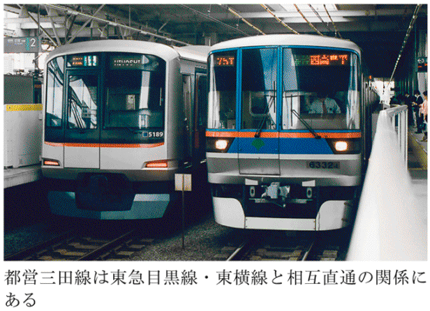
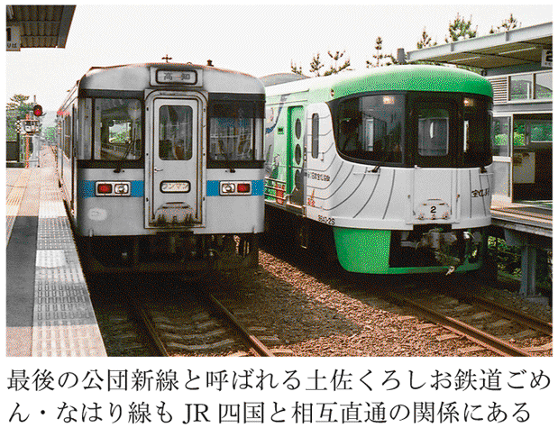
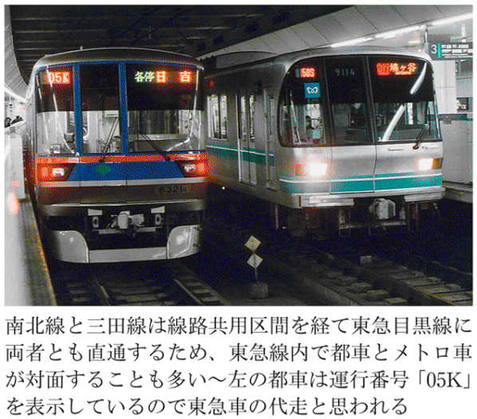
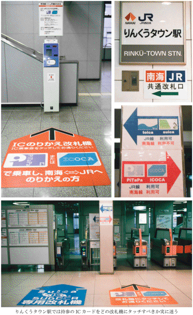

| 鉄道会社はややこしい (光文社新書) | |
| 所澤 秀樹 | |
| 光文社 (2012) | |

鉄道会社はややこしい 目次
目次
※本文の内容は、特にことわりのない限り、平成24年４月２日現在のものです。
※本文中の敬称略、原図作成／著者
序幕 東青森駅の変なゴミ箱～「はしがき」にかえて
場違いな会社名
とかくこの世は人同士の関係がややこしい。
仕事に関する悩みの多くが職場の人間関係だともいう。巷で起こる犯罪の原因も突き詰めれば〝金〟か〝男女の諍い事〟に集約されるのではないだろうか。男と女の関係ともなれば、およそ一筋縄ではいくまい。事例は各位、ことかかないはず、野暮だから具体例はあげないけれど、慰謝料が絡む離婚の調停などはとくにややこしい。
男と女の関係ほどでないにしても、鉄道会社間の関係というのもまた妙にややこしい。
そもそも「会社」というもの、人がやっているのだから、ややこしくなるのは当然といえば当然ながらも、これについてはピンとこない御仁も多いかと思うので、以下にその片鱗が垣間見られる事例を一席。
青森県内の目時～八戸～青森間１２１・９キロを繫ぐ青い森鉄道・青い森鉄道線は我が国最長の第三セクター鉄道路線として知られている。まあ、知らない人も多いかもしれないが、その青い森鉄道線の終着駅青森の一つ手前に東青森という駅がある。文字通り青森市街の東外れの端正な住宅街に佇む駅だ。
ここで私は妙なゴミ箱に出会った。
それは、自動券売機だけがただ１台備わる手狭な出札コンコースの隅にさりげなく置かれていた何の変哲もないプラスチック製の市販のゴミ箱であった。
が、このゴミ箱、何故かマジックペンにて「ＪＲ貨物 東青森駅（八戸臨海）」と手書きされていた。
〝ＪＲ貨物〟とはご承知の通りＪＲグループの一員「日本貨物鉄道株式会社」のことだ。一方の〝八戸臨海〟は青森県八戸市内において８・５キロの貨物線（八戸貨物～北沼）を営む貨物専業の鉄道事業者「八戸臨海鉄道株式会社」である。
しかるに東青森は、その八戸から約90キロも離れた青森市内に存する駅。なぜ、そこのゴミ箱に〝八戸臨海〟の文字が記されているのだろうか？ だいたいからして東青森駅は青い森鉄道の駅ではないのか。実に妙である。
この関係のからくりは、実際、複雑である。
人より貨物が主役
まず、青い森鉄道だが、同社は自ら線路施設は保有せずに、青森県保有の線路施設を借りて旅客列車の運行、すなわち旅客営業を行っている。ただ、この線路を借りているのは同社だけではない。
青い森鉄道と同様にＪＲ貨物も青森県保有の同一線路施設を借りて貨物列車の運行を行っている。要するに、青い森鉄道とＪＲ貨物は会社が異なるにもかかわらず、ひとつの線路を共用しているということ。
そして問題の東青森だが、ここは旅客専用の駅ではなく、青森市付近の鉄道貨物営業の拠点的駅となっている。現実、この駅に降り立ってみれば、ＪＲ貨物の貨物駅の一画を間借りして青い森鉄道の旅客駅が肩身狭そうに置かれているといった印象だ。ＪＲ貨物の東青森駅は駅員の配置を見るのに対し、青い森鉄道の東青森駅は無人（旅客扱いの係員不在）という点からも、人より貨物が主体の駅であるという実体を把握できよう。
ただ、旅客に対しては無人の駅だからといって、旅客駅の部分が完全に無人かといえば、そういうことでもないようだ。
当然ながら出札口や改札口において青い森鉄道の駅員の姿を見ることはないけれども、旅客ホームの東端には運転事務室があって、そこには列車扱い（列車に対する運転取扱い、信号扱い）のための係員がいたりもする。この運転事務室、旅客駅の部分に置かれているのだから、業務の担当は青い森鉄道の社員かと思いきや、さにあらず。
グループ間で業務委託
ならば、貨物駅構内の建物に常駐する列車・車両の入れ換え作業を行う係員ともども、ＪＲ貨物の担当なのかと思われよう。が、なんと、これも違う。旅客ホームの運転事務室にいる人も、貨物駅構内の建物に詰めている列車・車両の入れ換え（誘導）担当の人も、基本的には八戸臨海鉄道の社員なのである。はて、なぜそのようなことになっているのだろうか。
八戸臨海鉄道はＪＲ貨物と青森県や八戸市、そして関係する貨物の荷主企業などが出資する第三セクターで、ＪＲ貨物のグループ会社に位置付けられている。
そう、この間柄ゆえにＪＲ貨物は青森県内の貨物輸送にかかわる停車場の構内入れ換え（誘導）作業他を八戸臨海鉄道に業務委託しているという次第。当該の停車場名を具体的にあげれば、八戸貨物駅、東青森駅、青森信号場、弘前駅といった面々。
結果、東青森駅で見られる駅員は八戸臨海鉄道の社員となるわけである。
同駅では、運転事務室もそうであるように旅客駅の領域にもＪＲ貨物が管理・保全する箇所は多い。旅客ホームの上屋支柱に掲げられた「頭上高圧電線 危険」と記す注意書き看板も名義は「ＪＲ貨物 東北支社」となっている。件のゴミ箱に「ＪＲ貨物 東青森駅（八戸臨海）」の文字が躍るのも、それならば、なんら不思議ではない。
朝のラッシュ時にだけいる係員
なかなか奇妙な駅だが、付け加えるならば、旅客扱いは無人の東青森駅ながらも朝のラッシュ時間帯に限っては、改札口にオレンジ色のジャンパーを着込んだ係員が立っている。お察しの通り、この朝のみ限定の旅客扱い係員も青い森鉄道の社員ではなく、八戸臨海鉄道の関連会社、臨海サービス㈱の人である。
ややこしいことにも、こちらはこちらで、青い森鉄道が八戸臨海鉄道に旅客扱い業務を委託して、臨海サービスの人を派遣してもらっているという。他にも青い森鉄道線では陸奥市川、野内、矢田前、小柳の各駅（すべて無人駅）において、朝のラッシュ時に八戸臨海鉄道・臨海サービスの人が改札業務を行う。さらには、青い森鉄道の車両清掃業務も八戸臨海鉄道が受託している。
八戸臨海鉄道もなかなか事業を手広く行っているものだ。青い森鉄道の筆頭株主は青森県であり、八戸市も出資しているから同社と八戸臨海鉄道は、まあ、いわば兄弟関係にある。朝の助っ人を八戸臨海に依頼したりするのも、こうした関係を知るならば得心がいく。
運転も他社に委託
さてさて、複雑な関係がお好みらしい青い森鉄道だが、列車の運転業務に関しても、他の鉄道会社に頼る場面は多い。
青森県保有の線路を青い森鉄道と共用するＪＲ貨物の貨物列車は、運行の責任主体がＪＲ貨物ゆえに、むろんながらＪＲ貨物の運転士が運転を行っているけれど、これとは別に青い森鉄道が運行の責務を担う旅客列車に関しても、一部の列車では他社の乗務員が運転業務を担当していたりする。
真夜中に青い森鉄道線を通過するＪＲの寝台特急「カシオペア」「北斗星」（ともに上野～札幌間の運行で、貨物列車とは異なり青い森鉄道線内通過中は青い森鉄道の列車の扱い）は、運転士も車掌もＪＲ東日本の所属であるし、青い森鉄道線とＪＲ大湊線・八戸線・津軽線にまたがって運転される列車（ＪＲ直通列車）に関してもＪＲ東日本の運転士・車掌が青い森鉄道線内まで面倒を見ている。
八戸以南の運転となるＩＧＲいわて銀河鉄道・いわて銀河鉄道線（盛岡～目時）直通列車も半数以上は、そのＩＧＲ所属運転士の通し乗務だ。一部の列車では車掌までもＩＧＲの人である。
また、逆にＩＧＲの領域、盛岡まで青い森鉄道の運転士が通し乗務する列車もあり、さらには、いわて銀河鉄道線直通列車でも車両の種類によってはＪＲ東日本の運転士・車掌が乗務したりしており、まさにややこしい三角関係を形成している。
こうなってくると、もつれた糸の様相で、何が何だかよくわからないが、これらは青い森鉄道がＪＲ東日本やＩＧＲいわて銀河鉄道に一部列車の運転業務を委託する恰好となる。当然、業務委託費の支払いも発生しよう。ＪＲ東日本は人件費が高そうだから、委託費も値がはるに違いない。
〝孫請け〟の構造
ほんとうにややこしい間柄だが、極めつきは、前にもふれたＪＲ貨物が八戸臨海鉄道に構内の車両入れ換え（誘導）作業を委託する停車場のひとつ、青森信号場で以前行われていたことである。
同信号場は青い森鉄道線の東青森～青森間に位置しており、ＪＲ東日本・奥羽本線の貨物支線（八戸方向から青森駅を通らずに奥羽本線の新青森、秋田方向や津軽線〔津軽海峡線〕の蟹田、函館方向へ抜けられる線路）が分岐する。
で、この青森信号場だが、ＪＲ貨物の乗務員基地（青森総合鉄道部）が併設される関係で貨物列車の乗務員交代が行われる他は、一部の貨物列車の機関車交換と隣接する青い森鉄道の車両基地（青い森鉄道運輸管理所）入出庫電車の入れ換え（誘導）作業が主体という地味な存在である。が、平成18年３月18日のダイヤ改正から平成24年３月17日の改正までの６年間は、なんと、あの人気の寝台特急「北斗星」と「トワイライトエクスプレス」（大阪～札幌間の運行）も夜中にここで本州用の機関車と青函用の機関車の交換を行っていた。要するに、津軽海峡越えの要衝だったわけである（青森駅構内の信号システム更新工事に伴い、その期間中、「北斗星」と「トワイライトエクスプレス」を青森駅経由から青森信号場経由に変更したことにより生じた現象〔従前および現在は青森駅で機関車交換〕。なお、「カシオペア」については、この期間中も青森駅経由のままで、同駅にて機関車交換をしていた）。
お気付きの通り、右の機関車交換作業（機関車の切り離し、誘導、連結）に従事したのも八戸臨海鉄道の人である。これはＪＲ東日本がＪＲ貨物に交換作業を委託し、ＪＲ貨物がそれに伴う機関車の入れ換え・誘導を八戸臨海鉄道に再委託したという図式となろう。
おもしろいことにも、「トワイライトエクスプレス」の車掌（列車の総責任者）はＪＲ西日本の大阪車掌区の人だから（当該の期間中は蟹田以南を担当、現在は青森以南）、すなわち、まったく縁もゆかりもなさそうな鉄道会社の社員同士が、青森信号場において間接的ながらも関わり合いを持つという妙な現象が、夜な夜な起こっていたのであった。
奇々妙々、ここにきわまったり、である。
以上は鉄道会社（鉄道事業者）間の関係の複雑さが知れる話の一例だが、これは氷山の一角に過ぎない。
本書は、全国規模でこのような複雑な間柄を見ていき、そこに愉しみを見出そうとする（？）、まさに世にも希なる一品である。
もっとも、そんなことの何がいったい愉しいのか、と、いわれてしまえば、それまでなのだが。
まあ、まずは、右の事例において、青い森鉄道とＪＲ東日本との間に、あるいは青い森鉄道とＩＧＲいわて銀河鉄道との間に例が見られた、異なった鉄道会社間をまたがって走る列車の直通運転について、そのややこしさを愉しんでいくことにしよう。
第一幕 複雑だが巧みなる直通運転
一 地下鉄絡みの相互直通運転に見る奇妙な現象
浅草線はどこの会社？
首都東京の都営地下鉄浅草線は、駅で来る電車来る電車を眺めていても、まったく飽きることがない。そして、はたしてこの路線は、どこの会社の経営なのだろうかと、一瞬、本気で悩んでしまう。
これは、いささか偏った趣味趣向の人間による感覚なので、万人がそう感じたり思ったりするとは限らないけれど、浅草線に対しこのような悩みを抱く人はゼロとはいえないと思う。
もちろん、〝都営地下鉄〟というのであるからして、かの石原慎太郎都知事率いる東京都の交通局が商っていることは明白なのだが、駅のホームに立って入ってくる電車を見ていても、銀杏の葉みたいな形をした、あの緑色の東京都マークを車体に飾った電車に出会うことは意外に少ない。
それに代わって、「KSEI GROUP」とか「KEIKYU」とかのロゴが書かれた電車がよくやって来る。「北総鉄道」と漢字書きされた電車も来る。ごく希にではあるが「芝山鉄道」と記されたのまで現れたりもする。これらに混じり東京都マークの電車が忘れた頃にやってくるといった感じだ。
５社の車両が入り乱れる
むろん、車体の色もそれぞれで、赤色系あらば青色系もあり、そうかと思えば赤色と青色両方のストライプをまとったのまで眼にしたりする。東京都にお住まいの方ならば、このまちまちな様相も、まあ、見なれた光景かもしれない。が、地方から上京してきた者で、かつ幾ばくかの電車好きであったならば、かなり面食らう現象といえるのである。
ご承知の方も多いように、都営地下鉄浅草線には本家の東京都交通局の電車（都車）以外に、私鉄数社の電車が走っている。京成電鉄の電車（京成車）、京浜急行電鉄の電車（京急車）、北総鉄道の電車（北総車）、芝山鉄道の電車（芝山車）がその面々である。
北総車のなかには千葉ニュータウン鉄道という北総線の一部区間の線路施設を保有し、自らは旅客営業を行わない賃貸住宅の大家さんのような会社の電車も含まれ、これが本来の北総車とは色も形もまるで異なっていたりするから、よけいに賑やかな印象となろう。
かように賑やかなのは、都営地下鉄浅草線が右の私鉄各社と直通運転を行っているためで、先方の私鉄電車が浅草線に乗り入れてくるのと引き替えに、都車も芝山鉄道を除く関係各社の路線へと乗り出していく。よって、浅草線内で都車を見かける機会も少なくなるのである。
このようにＡ社の車両がＢ社の路線へ乗り入れる代わりに、Ｂ社の車両もＡ社の路線に乗り入れるといった形態の直通運転を、俗に「相互直通」あるいは「相互乗り入れ」と呼んでいる。
本家の影が薄い
ところで、その相互直通により、いろいろな電車が眺められる都営地下鉄浅草線であるけれど、実際に浅草線内の新橋駅で朝９時から２時間ほど、来る電車を眺めてみたら、どんなことがわかるだろうか。
次の一覧表の記述は平成23年９月23日修正ダイヤ（平日ダイヤ）において、新橋駅で午前９時からの２時間に〝やって来る電車〟のそれぞれ車両所属会社を示したものである。
世間の方々が、さあ、これから仕事だという時間帯に、のんきに電車を眺めているというのもいかがなものかとは思うけれども、それにしても本家の都車の影の薄さときたらどうだろうか。
南行は、朝のラッシュ輸送を終えて西馬込の車庫に戻る運用が多いせいか、まだ、そこそこ都車を眼にするものの、北行はさっぱりで、まるで他社に路線そのものが乗っ取られたかのごとき惨状である。
９時半過ぎから11時までの間、都車は１本もやって来ないではないか。車両を見る限りでは、浅草線はどこの会社の経営なのか、ほんとうに悩んでしまう。
・９時01分発（704T）「普通」西馬込行―――都車
・９時04分発（766K）「普通」西馬込行―――京成車
・９時07分発（864H）京急線直通「特急」京急久里浜行―――京急車
・９時09分発（808T）「普通」西馬込行―――都車
・９時12分発（748T）「普通」西馬込行―――都車
・９時14分発（768K）「普通」西馬込行―――京成車
・９時17分発（866H）京急線直通「特急」三崎口行―――京急車
・９時20分発（850T）「普通」西馬込行―――都車
・９時23分発（780K）京急線直通「エアポート急行」羽田空港行―――京成車
・９時25分発（868H）京急線直通「普通」品川行―――京急車
・９時30分発（920T）「普通」西馬込行―――都車
・９時32分発（824T）「普通」西馬込行―――都車
・９時36分発（870K）「普通」西馬込行―――京成車
・９時39分発（970H）京急線直通「快特」三崎口行―――京急車
・９時42分発（800K）京急線直通「エアポート急行」羽田空港行―――京成車
・９時44分発（802T）「普通」西馬込行―――都車
・９時47分発（972H）「普通」西馬込行―――京急車
・９時50分発（976H）京急線直通「快特」三崎口行―――京急車
・９時54分発（814T）京急線直通「エアポート急行」羽田空港行―――都車
・９時58分発（872K）「普通」西馬込行―――京成車
・10時01分発（810H）京急線直通「普通」品川行―――京急車
・10時05分発（810K）京急線直通「エアポート急行」羽田空港行―――京成車
・10時10分発（974H）京急線直通「快特」三崎口行―――京急車
・10時14分発（946T）「普通」西馬込行―――都車
・10時17分発（900T）京急線直通「エアポート急行」羽田空港行―――都車
・10時20分発（988K）「普通」西馬込行―――京成車
・10時25分発（902K）京急線直通「エアポート快特（泉岳寺から）」羽田空港行―――京成車
・10時30分発（1080H）京急線直通「快特」三崎口行―――京急車
・10時35分発（1032N）京急線直通「エアポート急行」羽田空港行―――北総車
・10時40分発（906T）「普通」西馬込行―――都車
・10時44分発（926T）「普通」西馬込行―――都車
・10時46分発（1064K）京急線直通「エアポート快特（泉岳寺から）」羽田空港行―――京成車
・10時50分発（1084H）京急線直通「快特」三崎口行―――京急車
・10時55分発（928T）京急線直通「エアポート急行」羽田空港行―――都車
・11時00分発（1086K）「普通」西馬込行―――京成車
※羽田空港行は正確には羽田空港国内線ターミナル行
【北行】
・９時01分発（777H）「普通」押上行―――京急車
・９時04分発（807K）京成N線直通「アクセス特急」成田空港行―――京成車
・９時07分発（801T）京成線直通「普通」青砥行―――都車
・９時09分発（859K）京成線直通「普通」京成高砂行―――京成車
・９時12分発（779H）京成線経由北総線直通「普通」印旛日本医大行―――京急車
・９時15分発（833N）京成線直通「普通」京成高砂行―――北総車
・９時17分発（829N）京成線経由北総線直通「普通」印西牧の原行―――北総車
・９時21分発（781H）京成線直通「普通」青砥行―――京急車
・９時26分発（843T）京成線直通「普通」京成高砂行―――都車
・９時30分発（783H）京成N線直通「アクセス特急」成田空港行―――京急車
・９時33分発（841T）京成線経由北総線直通「普通」印西牧の原行―――都車
・９時38分発（965K）京成線直通「普通」京成高砂行―――京成車
・９時42分発（885H）京成線直通「普通」青砥行―――京急車
・９時47分発（967K）京成線直通「快速」京成佐倉行―――京成車
・９時49分発（937N）京成線経由北総線直通「普通」印旛日本医大行―――北総車
・９時52分発（887H）京成線直通「普通」京成高砂行―――京急車
・９時59分発（969K）京成線直通「快速」京成佐倉行―――京成車
・10時03分発（889H）京成線直通「普通」青砥行―――京急車
・10時08分発（939N）京成線経由北総線直通「普通」印旛日本医大行―――北総車
・10時14分発（963KB）京成線直通「普通」京成高砂行―――京成車
・10時19分発（927H）京成Ｎ線直通「エアポート快特」成田空港行―――京急車
・10時23分発（1071K）京成線直通「快速」京成佐倉行―――京成車
・10時28分発（961KB）京成線経由北総線直通「普通」印旛日本医大行―――京成車
・10時33分発（953H）京成線直通「普通」青砥行―――京急車
・10時38分発（1081K）京成線直通「普通」京成高砂行―――京成車
・10時44分発（1073K）京成線直通「快速」京成佐倉行―――京成車
・10時48分発（1035N）京成線経由北総線直通「普通」印西牧の原行―――北総車
・10時53分発（951H）京成線直通「普通」青砥行―――京急車
・10時59分発（1001K）京成Ｎ線直通「エアポート快特」成田空港行―――京成車
※京成Ｎ線は京成成田空港線（成田スカイアクセス）経由を表す
東京の地下鉄は直通の見本市
東京の地下鉄は実に便利である。路線数の多さ、ネットワークの稠密さ、運賃の安さなど、そう思わせる要因はいろいろあるけれども、もっとも〝そう思わせる〟のは、やはり、浅草線に代表されるような、私鉄やＪＲなどとの大々的な相互直通（相互乗り入れ）運転の実践だろう。
あらためて述べるのも野暮だが、「相互直通」とは読んで字のごとく、異なった（会社の）路線を走る列車同士が、その境界を越え互いに相手の領域にまで直通（乗り入れ）するものである。これにより乗客は、なにかと面倒な乗り換えという行為からある程度は解放される。まさに究極のバリア・フリーである。加えて、移動の時間もそこそこは短縮されよう。実にいいことずくめではないか。
東京の地下鉄各線の相互直通相手とその直通運転区間は、次の一覧表のごとくである（「東京メトロ」は「東京地下鉄株式会社」の略称）。
・東京メトロ日比谷線―――東武鉄道（伊勢崎線東武動物公園まで）、東京急行電鉄（東横線菊名まで）※１
・東京メトロ東西線―――JR東日本（中央本線三鷹まで、総武本線津田沼まで）、東葉高速鉄道（東葉高速線東葉勝田台まで）※２
・東京メトロ千代田線―――JR東日本（常磐線取手まで）、小田急電鉄（小田原線経由多摩線唐木田まで、小田原線本厚木まで、小田原線経由箱根登山鉄道〔小田急関連会社〕の鉄道線箱根湯本まで）※３
・東京メトロ有楽町線―――東武鉄道（東上本線森林公園まで）、西武鉄道（西武有楽町線経由池袋線飯能まで）※４
・東京メトロ半蔵門線―――東武鉄道（伊勢崎線久喜まで、伊勢崎線経由日光線南栗橋まで）、東京急行電鉄（田園都市線中央林間まで）※５
・東京メトロ南北線―――東京急行電鉄（目黒線経由東横線日吉まで）、埼玉高速鉄道（埼玉高速鉄道線浦和美園まで）※６
・東京メトロ副都心線―――東武鉄道（東上本線森林公園まで）、西武鉄道（西武有楽町線経由池袋線飯能まで）※４
・都営地下鉄浅草線―――京成電鉄（押上線経由本線成田空港まで、および〔本線を経由して〕東成田線東成田まで、並びに〔成田空港線を経由して〕成田空港線成田空港まで）、北総鉄道（〔京成押上線・本線経由〕北総線印旛日本医大まで）、芝山鉄道（〔京成押上線・本線・東成田線経由〕芝山鉄道線芝山千代田まで）、京浜急行電鉄（本線経由空港線羽田空港国内線ターミナルまで、および〔本線を経由して〕逗子線新逗子・本線浦賀・久里浜線三崎口まで）※７
・都営地下鉄三田線―――東京急行電鉄（目黒線経由東横線日吉まで）※８
・都営地下鉄新宿線―――京王電鉄（京王線経由相模原線橋本まで、および高尾線高尾山口まで）※９
※１：東武線内発着の直通列車はメトロ車と東武車を使用。また、日光線南栗橋からの日比谷線直通列車が朝に１本だけ存在する（東武車を使用）。東急線内発着の直通列車はメトロ車と東急車を使用。
※２：JR線内発着の直通列車はメトロ車とJR車を使用。東葉高速線内発着の直通列車はメトロ車と東葉車を使用。
※３：JR線内発着の直通列車はメトロ車とJR車を使用。小田急線内発着の直通列車はメトロ車と小田急車を使用。ただし、本厚木および箱根湯本発着の直通列車は小田急車のみを使用。
※４：東武線内発着の直通列車はメトロ車と東武車を使用。ただし、森林公園発着の直通列車は東武車のみを使用（メトロ車は川越市まで）。西武線内発着の直通列車はメトロ車と西武車を使用。また、西武ドームでの野球開催時には狭山線西武球場前発着の直通列車も運転される（メトロ車、西武車の双方を使用）。
※５：東武線内発着、東急線内発着の直通列車ともにメトロ車、東武車、東急車のすべてを使用。
※６：東急線内発着、埼玉高速鉄道線内発着の直通列車ともにメトロ車、東急車、埼玉車のすべてを使用。
※７：京成線内発着、北総線内発着、京急線内発着の直通列車それぞれに都車、京成車、北総車、京急車のすべてを使用。ただし、京成線内に関しては、都車は本線経由京成成田まで、京急車は成田空港線経由成田空港まで、北総車は押上～京成高砂間のみとなる。また、京急線内に関しても、京成車、北総車は羽田空港国内線ターミナルまでとなり、都車も浦賀へは入らない。芝山鉄道線の芝山千代田発着列車は京成車と芝山車が使用され、都車は同社線へは入らないので、厳密には東京都と芝山鉄道の関係は「相互直通（相互乗り入れ）」という言葉があてはまらない。芝山車は京成線（成田空港線を除く）・都営線内の列車だけに使用され、北総線・京急線には入らない。
※８：都車と東急車の使用区間は同じ。
※９：都車と京王車の使用区間は同じ。
★各路線の線名は正式線路名称を原則とした。
首都圏の直通はさらに増殖
東京の地下鉄は全13路線、うち相互直通運転を行っていないのは、初期に建設された東京メトロ銀座線・丸ノ内線と、特殊な構造の鉄輪式リニア地下鉄である都営地下鉄大江戸線だけで、他の10路線は必ず１社以上の鉄道会社と相互直通の縁組みを結んでいる。ご紹介済みの浅草線は都合４社が相手であるから、ほんとうに気が多い。
これだけでも驚くのだが、現在、工事が進められている東京急行電鉄（東急）・東横線の渋谷～代官山間の地下線化が完成のあかつきには、同線と東京メトロ副都心線の相互直通運転も予定されている。
東横線は渋谷とは反対の横浜側で既に横浜高速鉄道・みなとみらい21線（旅客案内上は「みなとみらい線」）と相互直通運転を行っているから、右の縁組みがかなえば、東武東上線／西武池袋線～副都心線～東急東横線～横浜高速みなとみらい線を通す遠大な直通列車が誕生すると、相直マニア（？）はみな愉しみにしている。
東武東上線（正式名称は「東上本線」）や西武池袋線を走る東急車に横浜高速車、東急東横線を走る東武車に西武車というのも、なかなか乙な味わいで、直通開始当日はきっと赤飯を炊いて祝う方もおられよう（平成23年の夏の終わりに、東急目黒線～南北線～有楽町線の連絡ルートを使って東急車の東武東上線、西武池袋線への送り込み、東武車、西武車、メトロ車〔副都心線車両〕の東急東横線への送り込みも実現、すぐに各線で深夜帯を利用して他社車両の性能確認の試運転が行われた）。
東京メトロ副都心線渋谷駅（ここに近々、東横線が入ってくる）の駅員が、平成20年の開設段階からすべて東急の社員であるのは、結納のつもりなのであろうか。
副都心線と東横線の婚姻は平成24年度内の予定で、それに比べれば遥か先の話となるものの、相模鉄道（相鉄）・本線と東横線をつなぐ直通線の建設も具体化しており、これも実現のはこびとなれば、東武東上線／西武池袋線～副都心線～東急東横線～相鉄線、もしくは埼玉高速鉄道線～東京メトロ南北線／都営三田線～東急目黒線・東横線～相鉄線という、直通系統が誕生するかもしれない（これとは別に相鉄線とＪＲ東日本・湘南新宿ラインとの直通の計画もあり、実現するのは東急とのそれよりも早い時期という）。

大阪の地下鉄の相手は３社だけ
首都圏はまさに直通三昧である。ことほどさように異なった鉄道会社間で列車の直通運転が大々的に行われている都市が、ほかにあるだろうか。
東京に次ぐ稠密な路線網を誇る大阪市営地下鉄の場合、相互直通運転を行うのは８路線中３路線でしかない。縁組み相手も阪急電鉄（千里線・京都本線）、北大阪急行電鉄（南北線）、近畿日本鉄道（けいはんな線）の３社のみだ。
地下鉄を介さない大手私鉄同士の珍しい相互直通運転である近畿日本鉄道（奈良線〔布施～大阪上本町間は戸籍上は大阪線〕・難波線）と阪神電気鉄道（阪神なんば線・本線）のカップルを、大阪都心部での実践ということから加えて勘定したとしても、東京には遠くおよばない。
さらには、大阪市営地下鉄の相手のうち阪急電鉄以外の２社の直通路線は、地下鉄の延長線を大阪市交通局になりかわってその土地を縄張りとする私鉄、あるいは地元自治体他と当該私鉄が共同出資する第三セクターが建設したものであって、東京における地下鉄の縁組み相手とはやや性格が異なっている。まあ、首都圏でも東葉高速鉄道と埼玉高速鉄道がこれに近いケースではあるけれど（両社は沿線自治体と東京メトロ〔東京地下鉄株式会社〕が主要株主である）。
直通を生んだ〝痛勤〟事情
海外はどうなのだろうか。大都市における地下鉄と郊外鉄道線との相互直通運転の事例は、大韓民国のソウル市などにも少し見られるが、そもそも都市部の地下鉄は公設公営、郊外の鉄道線は民間会社によるもの、といった形態自体が世界的には珍しいので（東京メトロの前身、帝都高速度交通営団は国の特殊法人であった）、東京のような直通運転は生まれにくいという。
したがって、地下鉄と郊外鉄道の相互直通は、日本ならではの特異な都市鉄道整備の手段・文化ということができよう。東京名物いろいろあれど、地下鉄の相互直通もその一派なりで、新幹線同様、世界にもっと誇ってもいいと思う。
が、しかし、である。その特異な手段を編み出さなければならなかった事情というのが、あまり誇れたものではなかった点、いささか肩身が狭い。
もしも、地下鉄が私鉄やＪＲとの直通運転を行っていなかったならば、いったいどうなっていただろうか。乗り換え駅のホームや階段、通路は、毎朝、人で溢れかえり、怪我人が続出したに違いない。
日比谷線と東武伊勢崎線の発着ホームを分離する大改築を行う前の北千住駅などは、ほんとうに危なっかしかった（今は前者のホームが３階で、後者のホームは１階だが、改築前は日比谷線と伊勢崎線は同一ホームでの対面乗り換えであった）。
毎朝、春日部・草加方面からの東武の準急列車（浅草行）より、日比谷線に乗り換えようとする人の大群がホームを黒く染め、線路に人が落っこちないのが不思議に思えるぐらいの光景が展開されていたのである。就任早々の運輸大臣（当時）は必ず北千住駅に視察に訪れていたほどだ。まあ、大臣が見たからといって、すぐに改善できるわけでもないけれど。
もちろん、東武伊勢崎線から日比谷線へは、当時でも直通の普通列車が多数運転されていた。にもかかわらず、こうした混乱が生じていたのだから、もし、直通運転がまったく実施されていなかったならば、東武沿線の庶民はほんとうに毎朝、命がけの通勤を強いられていたはず。まさしく「痛勤」である。
この東武伊勢崎線の〝痛勤〟のケースは、地下鉄日比谷線と直通したがために生じたものだともいえる。
それまでの、雑木林に囲まれた旧家などが田圃や畑のなかにポツポツと見られる長閑な風景だった沿線は、大規模団地の建設他、急激なる宅地化をむかえ通勤客が激増、その数は当初の予想をはるかに超える結果となって、北千住駅が容量オーバーにいたったという次第。
不動産会社の〝地下鉄日比谷線で都心まで一本、楽々通勤!!〟などのセールス・コピーに騙されて伊勢崎線沿線に居を構えた人々は、さぞや浮かばれなかったことだろう。
議論はニワトリとタマゴの関係に近いものとなろうが、東京の鉄道網が直通運転を必要とした背景には、やはり過度の人口東京一極集中という問題があったことは確かなようである。
２社＋２社の直通
北千住駅の大改築によって事なきをえた東京メトロ日比谷線（〈東武線←〉北千住～中目黒〈→東急線〉）ではあるけれど、その相手たらん東武伊勢崎線（平成24年３月17日より東武動物公園以南を愛称線名の「東武スカイツリーライン」で案内）、東急東横線との直通運転の形態は実にシンプルである。
基本的には、伊勢崎線直通系統の列車は東武動物公園・北春日部・北越谷・竹ノ塚～〈北千住〉～中目黒間の運転、対する東横線直通系統の列車は北千住～〈中目黒〉～武蔵小杉・菊名間の運転となり、これに北千住～中目黒間の日比谷線内折り返し運転の列車が加わるといったものだ（南千住、霞ケ関など日比谷線内の途中駅で折り返す列車も若干存在する）。
すなわち、東武、東京メトロ、東急の３社にまたがって運転される列車は一切存在せずということ。よって、車両運用のほうも伊勢崎線直通系統には東武車とメトロ車、東横線直通系統には東急車とメトロ車、という棲み分けとなり、東武と東急の間には直接的な直通関係は生じていない。
３社の直通
これが同じメンバーの３社による相互直通運転を披露する東京メトロ半蔵門線（〈東武線←〉押上～渋谷〈→東急線〉）のケースとなると、様相はかなり異なってくる。同線のお相手は既述の通り東武伊勢崎・日光線および東急田園都市線だが、東武、東京メトロ、東急の３社にまたがって運転される直通列車（３社直通）、具体的には南栗橋／久喜・東武動物公園～〈押上〉～〈渋谷〉～長津田・中央林間の間を走り通す列車が相当数、存在しているのである。
車両運用についても、東武車が東急線にまで乗り入れ、対する東急車も東武線へと乗り入れる。東京メトロを介するものの、東武・東急間にも直通関係が生じているということだ。平成15年の３社直通運転開始時には、〝下町を走る東急電車〟〝多摩田園都市を走る東武電車〟という、それまでの常識からすれば甚だミスマッチな光景が、一般人の間でもずいぶんと話題にのぼったものである。
半蔵門線の相互直通運転では、なぜ、日比谷線のように単純明快な２社直通＋２社直通といった形態をとらず、ダイヤの乱れなどが広範囲におよぶ危険性のある３社直通としてしまったのだろうか。実際、東急の人いわく、３社直通になってからはよくダイヤが乱れる、とのこと。
性格が異なる草分けの２派
まあ、その事情については、おいおいふれていくことにする。半蔵門線以上に広範な直通運転が見られ、かつ運転系統が相当に複雑なのが、いわずもがなの都営地下鉄浅草線一座である。件の新橋駅における朝９時からの２時間でやって来る電車の面々を見ただけでも、尋常ならぬ相互直通運転であることが察せられよう。
最大の特徴は、お相手の私鉄各社路線の終点にまで至る直通列車が設定されていることだろうか。これこそが、まさしく都営地下鉄浅草線一座の伝統芸といえるものなのである。
この浅草線と先の日比谷線は、地下鉄と郊外私鉄との相互直通運転の草分け的な存在で、昭和30年代の後半にはもう、前者は京成と、後者は東武・東急との乗り入れを果たしている（浅草線〔当時の線名は「都営１号線」〕と京急との相互直通も当初より予定されていたが、関係する工事の遅れから実現は昭和43年にずれ込んだ）。
相互直通一期生ともいえる両線だが、その直通運転の形態については、早い段階からお互いが相当に異なったものとなっていった。
日比谷線の場合、地下鉄直通列車は私鉄車を使用するものであっても私鉄線内において定められた相互直通運転区間を越えての運転は行わない、地下鉄直通列車の私鉄線内の列車種別は「普通（各駅停車）」とする、という二大原則が守られ続けたのに対し、都営１号線では、私鉄車を使用する地下鉄直通列車は相互直通運転区間を越えた先の駅発着も行われるようになり、地下鉄直通列車の私鉄線内の列車種別も「特急」あり「急行」ありと、実に自由奔放と化したのだった。
日比谷線一座では、その後に相互直通運転区間の拡大は見たものの（東武側は当初の北越谷から東武動物公園まで拡大、東急側は当初の日吉から菊名まで拡大）、二大原則は未だ守られ続けている（朝に東武車を使用する南栗橋発中目黒行「普通」が１本だけ存在するのが唯一の例外）。
一方の浅草線一座は、北総開発鉄道（現・北総鉄道）の相互直通参入や京成の成田空港線（成田スカイアクセス）開通など諸々の要因が絡んで奔放さにも磨きがかかり、３社直通、４社直通は当たり前、都車も遥か彼方の京成成田や新逗子、三崎口にまで顔を出すといった有り様である。
今、東京の地下鉄各線における相互直通運転の形態を俯瞰してみると、大多数の一座で日比谷線流をベースとしながらも、浅草線流の「普通（各駅停車）」にはこだわらない、とか、３社直通も可、といった要素を加味しているようである。浅草線の奔放ぶりも、決して無駄ではなかったらしい。
他社線内で〝アルバイト〟
ところで、かの浅草線（西馬込～〈京急線←〉泉岳寺～押上〈→京成線〉）新橋駅２時間のメンバーをしげしげ眺めてみると、妙な存在がなんとも気になりだして、仕方がなくなってくる。
その〝妙な存在〟とは二つある。一つは南行の９時47分発、京急車を使用する「普通」西馬込行（京成線青砥始発）、もう一つは北行の９時15分発、北総車を使用する京成線直通「普通」京成高砂行（西馬込始発）である。そう、列車の行先と使用車両がマッチしていないことにお気付きであろう。
京急車が京急線直通ではなく地下鉄（浅草線）の終点、西馬込へと向かい、北総車もここからがいよいよ我が北総線の始まりという同線起点の京成高砂が、なぜか終点なのである。どちらも自社線とは無縁な列車ではないか。
おもしろいことにも前者の場合、西馬込に着いた京急車はその後、日中に浅草線内の西馬込～泉岳寺間を８往復半もして、ようやく夕方の15時59分に泉岳寺始発の京急線「快特」三崎口行となり自社線へと戻っていく。まさに、地下鉄でアルバイトに精を出す京急車といった趣だ。
かたや北総車のほうは、京成高砂まで行った後、自社線の玄関ともいえるそこにおいて京急線直通「普通」羽田空港国内線ターミナル行（京急線内「エアポート急行」）に化け、今来た道を戻っていく。そして、羽田空港までたどり着き、ようやく「エアポート急行」印旛日本医大行（泉岳寺から「普通」）に変じ、自社線へと戻る段取りである。
こちらも、先の京急車ほど熱心ではないにしても、京成線・都営線・京急線内でアルバイトをしていることになる。
実に摩訶不思議な車両の使われ方ではあるけれども、他線にも、私鉄車やＪＲ車を使用する地下鉄線内折り返し運転の列車が多数存在しており、したがって、このような事例はそんなに珍しい話でもないようなのである。
東西線（〈ＪＲ線←〉中野～西船橋〈→ＪＲ線／東葉高速線〉）での中野行のＪＲ車、有楽町線（〈東武線←〉和光市～〈西武線←〉小竹向原～新木場）や副都心線（〈東武線←〉和光市～〈西武線←〉小竹向原～渋谷）での和光市行の西武車に東武車、千代田線（〈ＪＲ線←〉綾瀬～代々木上原〈→小田急線〉）での綾瀬行のＪＲ車に代々木上原行の小田急車、南北線（〈東急線←〉目黒～白金高輪～赤羽岩淵〈→埼玉高速鉄道線〉）および（都営）三田線（〈東急線←〉目黒～白金高輪～西高島平）での目黒の手前、白金高輪行の東急車、（都営）新宿線（〈京王線←〉新宿～本八幡）での新宿行の京王車などは見慣れたもので、直通運転の形態がもっともシンプルなはずの日比谷線（〈東武線←〉北千住～中目黒〈→東急線〉）においても、北千住行の東武車や中目黒行の東急車をよく眼にする。
地下鉄ではないが東京臨海高速鉄道・りんかい線とＪＲ東日本・埼京線との相互直通運転も、りんかい線内を往復するＪＲ車が多い。
競馬好きな東京都？
地下鉄線内でアルバイトに励む私鉄やＪＲの車両あらば、その逆も然りで、地下鉄の車両が地上の他社線にて、地下鉄直通列車以外の列車に運用される場面もけっこう見かける。
浅草線一座の京急線に限って見ても、平日ダイヤでは金沢文庫８時15分始発の「特急」新逗子行や神奈川新町16時56分始発の「特急」三崎口行、土曜・休日ダイヤならば金沢文庫５時43分始発の「特急」羽田空港国内線ターミナル行などが都車のアルバイト運用として名高い。金沢文庫には京急の車庫があり、当然ながら、同駅を早朝に発つ列車に充当の車両は、前日からその車庫で待機していることになる。都車にしてみれば、いわば外泊である。
京急線内では京成車にも、平日の夜間に品川～羽田空港国内線ターミナル間を２往復する運用があったりする。
まあ、これらはアルバイトといっても、終着駅での折り返しは地下鉄直通列車に変じること想像に難くないので、大したことではない。同じ都車でも、京王電鉄と相互直通運転を行う都営地下鉄新宿線所属のそれは、なかなか気合いが入っている。なにしろ京王電鉄の相模原線（調布～橋本）や競馬場線（東府中～府中競馬正門前）を一日中、いったり来たりする運用実績を持つのだから。
相模原線は、まだ相互直通運転区間内だから大目に見られようが、区間外の競馬場線での折り返し運用はほんとうに理解に苦しむ。都車はよほどの博打好きなのかもしれない。
いずれにしても、なぜ、このように他社でアルバイトをこなす車両が多いのだろうか。相互直通運転とは、ほんとうに奥が深そうである。
二 直通運転はなぜ生まれたのか
浅草線と京成線が地下鉄絡みの第一号
奥深きかなの地下鉄と私鉄の相互直通運転ことはじめは、昭和35年12月４日開始の都営地下鉄１号線（現・浅草線）と京成電鉄の乗り入れである。当初の相互直通運転区間は東中山～〈押上〉～浅草橋の間だった。
ただ、これは、東京都交通局と京成電鉄が仲良しで、両社局が自発的に婚姻関係を結んだという話ではなく、都市鉄道整備の一環として運輸省（現在の国土交通省の前身）が音頭をとり進めたプロジェクトの実現第一号なのであった。経緯はこうである。
民間企業の東京地下鉄道と東京高速鉄道が戦前に建設した地下鉄路線（現在の東京メトロ銀座線）のほか、両社と京浜地下鉄道（東京地下鉄道と京浜電気鉄道の合弁会社）、そして東京市が保有する未着工の地下鉄免許線を引き継ぐかたちで昭和16年７月、国の特殊法人「帝都高速度交通営団」が設立された（戦時色の強い組織体で、同年３月に制定の「帝都高速度交通営団法」が根拠）。戦後、同法人は解体を免れて、政府の資金運用部資金（後の財政投融資資金）を使いながら、東京復興のひとつのシンボルとして地下鉄丸ノ内線の建設に邁進していくことになる。
この資金の運用先が公共団体に限られていたことから、同線着工前には、帝都高速度交通営団（略称「交通営団」「営団地下鉄」）の私鉄等民間資本の排除も行われ、出資者を政府（国鉄）と東京都のみに限定するという体質改善も断行された（交通営団発足時には東武鉄道、京成電気軌道〔京成電鉄の前身〕、東京横浜電鉄〔東京急行電鉄の前身〕、京浜電気鉄道〔京浜急行電鉄の前身〕、小田急電鉄、京王電気軌道〔京王電鉄の前身〕、〔旧〕西武鉄道、武蔵野鉄道〔現在の西武鉄道の前身で旧・西武鉄道を吸収合併する〕の各私鉄が出資者として名を連ねていた）。
建設をめぐる〝公〟と〝民〟の争い
こうした私鉄資本の排除が面白くなかったのか、あるいは不安に感じられたのかは定かではないけれど、昭和23年から30年にかけて、京成電鉄、東武鉄道、京浜急行電鉄、東京急行電鉄、小田急電鉄、京王帝都電鉄（現・京王電鉄）の各社は都心部延長路線、すなわち山手線の内側、都心への自社線乗り入れに関する免許申請を相次いで運輸省に提出する。
復興と産業構造の変化に伴う首都圏への人口集中から、山手線や都電（路面電車）、地下鉄との乗り換え客でパンク寸前となったターミナル駅の混雑緩和が目的の第一義とされたが、自社の縄張り、失礼、営業テリトリー拡大によるさらなる社業発展も目論んでの作戦だったことは容易に想像がつこう。
一方、交通営団を廃止して東京の地下鉄を一元的に整備・運営したいと願う東京都にも、都心部鉄道路線の免許申請を行う動きがあったりして（昭和31年に申請）、話はだんだんとややこしさを増していった。
ちなみに東京都は、戦後、内務省や衆議院の賛同を得ながら地下鉄の都営移管を主張、衆議院の各派が共同で作成した「帝都高速度交通営団法廃止に関する法律案」も国会提出寸前までいくが、運輸省の強固な反対と妨害工作により交通営団は存続となる。
帝都東京の地下鉄を計画的かつ一元的に整備・運営させるために国がこしらえ、戦後もその目的を果たさせるため強引に温存された交通営団があるというのに、私鉄各社や東京都が勝手に都心に路線を建設してしまっては、計画も秩序もあったものではない。
そこで事態の収拾を図るため、運輸大臣の諮問機関として都市交通審議会を昭和30年に設置、「大都市およびその周辺における交通、特に通勤通学時における旅客輸送力の整備増強に関する基本的計画について」が諮問に至る。そして、以降、東京の地下鉄建設は同審議会の答申をもとに進められていくこととなるのであった（後には運輸政策審議会の答申へと移行する）。
お上が強行した私鉄と地下鉄のお見合い
この都市交通審議会の第一号答申が昭和31年に出される。そのなかの「昭和50年を目標年次とする東京圏における鉄道整備の基本計画」にて、東京の地下鉄は５路線（開業線を含む）が示されたが、これに加えて二つのある画期的な提言もなされていた。
ひとつは、地下鉄の建設・運営を交通営団に限定せず、それ以外の者（東京都など）にも分担させるのが望ましいとするもの、そしてもうひとつは、地下鉄と郊外鉄道との相互直通運転を実現させるべきというものであった。
東京の地下鉄整備の速やかなる達成のため、交通営団以外にも建設参入の門戸を開いた画期的な提言が前者で（後に運賃面などから一都市二事業者体制の地下鉄運営は問題となっていくが）、結果、第一号答申に示された地下鉄５路線のうち１号線については、東京都がはれて建設・運営主体となった。まさに都の悲願達成である（この地下鉄５路線は、昭和32年６月17日に「東京都市計画高速鉄道網」として正式に当時の建設省から告示される。なお、以降、都市交通審議会の数次にわたる答申にもとづき、東京圏の地下鉄は１号線から13号線までを擁する大路線網に発展する）。
私鉄各社による都心部延長路線乱立を阻止し、秩序だった交通網を構築する切り札と目される地下鉄と郊外鉄道との相互直通運転に関しても、既存の３号線（銀座線）と４号線（丸ノ内線）は構造上の問題（主に集電方式）から見送られたものの、新たに建設の１号線（現・浅草線）は京成電鉄と京浜急行電鉄が、２号線（日比谷線）は東武鉄道と東京急行電鉄が、５号線（東西線）は国鉄（中央本線）が、それぞれ縁組み相手として指名された。
これ以降、東京の地下鉄路線は、環状線の12号線（大江戸線）を除いて、生まれる前から許嫁が定められているのが当たり前となる。
官主導の東京、民主体の大阪
さて、右の答申を受けた運輸省は、学識経験者からなる列車直通運転技術委員会を組織、直通に伴う技術的問題を諮問し、その答申を得る。そして（建設省による告示直前の）昭和32年６月13日、交通営団、東京都、東武鉄道、東京急行電鉄、京成電鉄、京浜急行電鉄のそれぞれ代表者を運輸省に招き、事務次官より相互直通運転に関わる指示事項が伝えられるのであった（運輸省の文書による正式指示は同年９月30日）。
これに加えて、各者協議のもと直通区間、運行計画、工事施行計画などの大綱を１カ月程度で決定し、結果を運輸省に提出するようにとの指示もなされた。
まあ、お上が一方的に決めた婚姻話だけれど、公共性の高い鉄道事業ゆえに、関係する各者も同意せざるを得まい。この日こそが、後に東京名物ともなる（？）地下鉄絡みの相互直通運転の歴史の第一頁目が開かれた記念すべき日、といっても過言ではなかろう。
なお、私鉄各社による都心部延長路線の免許申請は、相互直通運転計画と引き替えに、すべて取り下げられることとなる。
かようにお上の強力な働きかけによって実現を見る帝都東京の地下鉄と郊外鉄道との相互直通運転、これに対し、民都大阪でも都市鉄道整備について同様の構想があったのだが、縁組みは東京ほどうまくはいかなかった。
市内交通については、市営による一元的経営を強硬に主張した、大阪市のいわゆる〝市営モンロー主義〟が影響したのか、それとも他の鉄道事業者とはあまり協調したがらない独自性の強い在阪私鉄各社の気質が壁となったのかは定かではないけれど、地下鉄と既存の郊外鉄道との相互直通運転は、結局のところ６号線（堺筋線）と阪急電鉄の千里線・京都本線に関わる案件しか日の目を見ていない（北大阪急行電鉄・南北線、近畿日本鉄道・けいはんな線は既述の通り実質は地下鉄の延長線）。
その代わりなのか、私鉄自身による都心部延長路線が一部実現しているのも東京にはない特徴といえる。やはりお上よりも民のほうが強い大阪なのだろうか。
多少は揉めた会社間の協議
話を戻せば、昭和32年６月13日に運輸省の指示を受けた関係６者は、当然ながら相互直通運転に関する諸々の協議を行っていく。
交通営団は６月25日に東武鉄道と、そして、少し遅れて７月16日に東京急行電鉄と、それぞれ首脳者会議を開き、構造物の諸規格、接続駅、直通区間、直通車両、工事施行、建設費の６項目について大綱の協議を実施。９月24日には当該３者間で相互直通運転を行う意思確認ともいえる覚書を取り交わし、同日に運輸省に提出した。
かたやの東京都交通局、京成電鉄、京浜急行電鉄の一派も同様に、６月21日開催の首脳者会議を皮切りとして、事務当局による具体的協議も行われ、８月21日に開かれた首脳者会議においては、営団・東武・東急一派に先んじて３社局間での覚書を交換、運輸省にもそれを提出する。
この両派の覚書提出により、地下鉄１号線（都営１号線）および２号線（営団日比谷線）における郊外私鉄線との相互直通運転は決定事項となり、これを受けて運輸省は９月30日、その実現に必要な事柄を関係６者に対し文書で指示するのであった。
６月13日の段階では、運輸省は６者に大綱を１カ月程度で決定し提出せよと指示しているけれど、両派とも覚書提出がいくぶん遅れたのは、各者間にそれなりの意見対立があり、調整に時間を要したこと想像に難くない。
各者間の協議は、運輸省の文書による正式指示以降、実務者レベルのものとなってゆき、コトによっては揉めに揉めたりもしたらしいが、首脳者会議の段階も意見の相違はいくつか見られたという。
それはそうだろう、公益性の高い国の特殊法人である交通営団、地方公共団体である東京都に対し、東武、東急、京成、京急はまったくの民間、利潤追求を旨とする営利企業だ。この体質の違いだけでも十分に揉める要素となりそうである。
首脳者会議段階での意見対立の具体例としては、２号線一派の場合、東武は直通列車の運転区間を伊勢崎線杉戸（現・東武動物公園）までと主張したのだが、実際には北越谷までで手打ちとなった点があげられようか（後に北春日部まで、東武動物公園まで、と段階的に延長される）。東武としては列車の運行上、北越谷折り返しでは中途半端に思えたろうが、営団にしてみれば、当時はまだまだ田舎だった春日部や杉戸まで地下鉄が乗り入れても意味がないと考えたに違いない。
行楽列車の運転は制限
なお、①相互直通運転は営団～東武間、営団～東急間それぞれの間に限ること、②相互直通列車は各駅停車運転とすること、など、すなわち既述の〝日比谷線流〟の運転形態でいくことも、この段階において確認されたようだ。
１号線一派でも第一回首脳者会議において、①都営線内を通過して京急と京成が相互乗り入れすることはない、②乗り入れ、乗り出しについては通勤・通学難の緩和が主目的であって、長距離遊覧を対象とするものではない、など、日比谷線流に近い運転形態を確認してはいるものの（この確認事項自体、以降の運転形態の変遷を見ると、まるで意味を成していないが）、その後の協議では直通区間、運行計画についてが相当に議論紛糾する。
例えば、東京都は京成・京急線内の都車使用列車の折り返し駅（東中山、京浜川崎〔現・京急川崎〕、羽田空港が候補）にて、私鉄車を使用する地下鉄直通列車も折り返すべきと主張した（これも日比谷線流といえる）のに対し、京成、京急は自社車両に限り、それ以遠からの地下鉄直通を認めるべきだと反論するのであった。
ところで、地下鉄と郊外鉄道の相互直通運転は〝通勤・通学難の緩和が主目的〟とする見解だが、これは都市交通審議会の答申目的に起因する運輸省側の意思であり、国の特殊法人たる交通営団は、以降もこれに従順な姿勢をとり続ける。
日比谷線やその後に建設された地下鉄路線の相互直通運転において、観光地などへの行楽列車の運転が営団時代には積極的に行われなかったのは、ご承知の通りである（対する東京都側は、あまりこの見解には執着せず、都と京急との相互直通運転開始直後の昭和44年大晦日、京急車を使用する三浦海岸～京成成田間の初詣特急列車「招運」号を運転、これが契機となって、春・秋の行楽シーズンや夏の海水浴シーズンに京急車、京成車による三浦海岸～京成成田間、逗子海岸～京成成田間の行楽特急列車が数年間にわたり運転されるようになる。夏の運転では、京成車が折り返しまでの間、京急線内の逗子海岸～品川間でアルバイトに精を出す光景も見られた）。
まあ、いろいろあったようだが、昭和35年12月の都営１号線と京成押上線・本線の直通開始を振り出しに、昭和37年５月には日比谷線と東武伊勢崎線、昭和39年８月には日比谷線と東急東横線、昭和43年６月には都営１号線と京急本線で、それぞれ相互直通運転の実現を見る。
地下鉄相直時代の幕開けで、まずは目出度し目出度しである。
小田急は箱根へ一方的に乗り入れる
地下鉄と私鉄・ＪＲの直通運転のように、お互いの列車が相手線に乗り入れる「相互直通（相互乗り入れ）」に対し、ある事業者の列車が一方的に相手方の路線に乗り入れる形態を「片乗り入れ」と呼ぶ。「相互直通」に対する言葉を探すならば、「一方的直通」あるいは「片直通」とでもなろうか。
この一方的直通運転の代表格は、小田急電鉄の箱根登山鉄道への乗り入れであろう。
ご承知のように、小田急の特急ロマンスカーと一部の「各停」列車は箱根登山鉄道・鉄道線の小田原～箱根湯本間に直通している。で、対する箱根登山鉄道の車両を使用する列車はといえば、小田急線には一切乗り入れることはない。結果、小田急側の片乗り入れ（一方的直通）となるわけである。
おもしろいことにも、箱根登山鉄道の鉄道線（小田原～強羅）のうち、小田急乗り入れ区間である小田原～箱根湯本間を走る営業列車は、同区間折り返し運転の列車も含め、すべて小田急車が使用されている（入生田～箱根湯本間にのみ、箱根湯本～強羅間で使用の箱根登山車の回送列車が存在する。これは入生田に同車の車庫があるため）。
箱根登山鉄道は小田急電鉄の関連会社であるがゆえに、このような極端な芸当も可能となったのだろう。
都市部でも片乗り入れはある
都市部の通勤・通学輸送を対象としたものについても一方的直通運転の例を見ることができる。
新京成電鉄・新京成線列車の京成電鉄・千葉線への直通（松戸～〈京成津田沼〉～千葉中央間の運転で、すべての直通列車が新京成車を使用）や、阪急電鉄・宝塚本線列車の能勢電鉄・妙見線および日生線への直通（梅田～〈川西能勢口〉～日生中央間の運転で、すべて阪急車を使用）などである。どちらの事例も、関係する２社が資本的には親子である点が共通している。
都営地下鉄浅草線一座の芝山鉄道（東成田～芝山千代田間、京成線を介して浅草線・京急線との間に直通列車が若干存在する）も、同社と東京都という関係でとらえるならば、芝山側の都営線への一方的直通運転となる。既述の通り、都車の芝山鉄道線へ入る運用が無いためだ。
なお、芝山鉄道と直接接する京成電鉄との間には、京成車が芝山千代田まで入線するため、立派に相互直通運転の関係が成立している。もっとも、本家の芝山車が芝山鉄道線内を走ることはごく希で、同線のほとんどの列車は京成車なのであるけれど。
明治の官鉄と日本鉄道間がことはじめ
ところで、この片乗り入れ（一方的直通）にまで範疇を拡げた場合、異なった鉄道会社（鉄道事業者）間における列車の直通運転は、いったいいつの頃に始まったものとなるのだろうか。
物理的に考えても、工学的に考えても、あるいはそんなに堅苦しく考えず、ただ常識的に考えるだけでも、二つ以上の鉄道事業者の路線が接していなければ、直通運転を行うことは不可能ゆえに、我が国初めての営業用鉄道である官設鉄道（略して官鉄、明治40年頃まで国有鉄道はこう呼ばれていた）の新橋～横浜間が開業した明治５年段階ではないことだけは確かなようだ。
官鉄線は、明治７年に大阪～神戸間も開業し、逐次、路線も京都方向へと延びていくのだが、東西の官鉄線は、しばらくは線路も繫がらず、互いに孤立した存在となっていた。
ただし、東側の官鉄線に接続する私設鉄道（私鉄）ならば、かなり早い段階で誕生している。
明治17年に上野～前橋間の路線を全通させ、さらには遥かなる青森を目指し延伸を図りつつあった日本鉄道会社が、新橋～品川～横浜間の官鉄線と連絡するため建設した支線・赤羽～池袋～新宿～品川間がそれである。開業は明治18年３月１日。
建設目的が〝官鉄線と連絡する〟だけに、この支線、開業当日から新橋～品川～赤羽間に３往復の官鉄直通列車が設定されていた。おそらくは、日本鉄道の車両と乗務員が官鉄線に一方的に乗り入れたものと思われるが、いずれにしても、これが本邦初の直通運転と見て、まず間違いはなさそうである。
もっとも初期の日本鉄道は、運転業務一切を官鉄に委託していたため、異なった会社間の直通運転には違いないものの、乗務員にしてみれば、他社乗り入れといった意識があったかどうかは甚だ疑問である。
さて、以降の明治期、日本における鉄道であるけれども、明治39年から40年にかけて断行された主要私鉄の国有化までは、官鉄および５大私鉄と呼ばれた北海道炭礦鉄道、日本鉄道、関西鉄道、山陽鉄道、九州鉄道と、それに続く中堅どころの地方私鉄が幹線系線区を分担運営し、その他多数の小私鉄が一地方の局地的な路線を担当するといった構図であった。
このため、鉄道網が拡充されるにつれて、客車や貨車の鉄道事業者間をまたがった直通運転が常態化していく。山陽鉄道（神戸～下関間他）の急行列車や最急行列車が官鉄線の京都～神戸間に乗り入れた話などは有名である。
むろん、一方的直通もあれば相互直通もあったことだろう。ただ、昭和の高度経済成長期に実現を見た地下鉄と郊外鉄道の乗り入れのような、多本数かつ体系だった相互直通運転の記録は残されていない。やはり、本格的な相互直通運転の歴史は、都営１号線～京成電鉄間のそれからとなろうか。
観光絡みの直通が主流だった時代
鉄道国有化以降の直通運転はといえば、大正期から昭和戦前、そして昭和30年代ぐらいまでは、地方の中小私鉄の列車が国鉄線に乗り入れ、その地域の中心都市、中核都市まで行くといったもの、および逆に国鉄の列車が著名な観光地や海水浴場を沿線に擁する地方の中小私鉄に乗り入れるケースがほとんどであった。
事例を戦後に絞ってあげてみても、前者の国鉄線に列車を直通させた私鉄は、定山渓鉄道（札幌へ直通）、富士急行（新宿へ直通）、伊豆急行（熱海へ直通）、遠州鉄道（遠江二俣〔現・天竜二俣〕へ直通）、田口鉄道（後の豊橋鉄道・田口線で、豊橋へ直通）、三岐鉄道（四日市へ直通）、有田鉄道（湯浅へ直通）、島原鉄道（小倉、博多、長崎、佐世保へ直通）、鹿児島交通（西鹿児島〔現・鹿児島中央〕へ直通）などが名を連ね、後者の国鉄列車の直通先も定山渓鉄道、栗原電鉄、上信電鉄、茨城交通（現・ひたちなか海浜鉄道）、関東鉄道・筑波線（後の筑波鉄道）、銚子電気鉄道、秩父鉄道、富士急行、長野電鉄、松本電気鉄道（現・アルピコ交通）、伊豆急行、伊豆箱根鉄道・駿豆線、大井川鉄道（現・大井川鐵道）、田口鉄道（後の豊橋鉄道・田口線）、富山地方鉄道、北陸鉄道・能登線、などなど枚挙に遑がない。
これらの直通運転は、大多数が一方的な直通運転であったが、なかには前者と後者に名を出す私鉄が存在するように、相互直通運転に発展したケースも散見する。
電鉄がディーゼルカーで国鉄へ乗り入れ
富士急行の大月・河口湖線（大月～富士吉田〔現・富士山〕～河口湖間）には、前身の富士山麓電気鉄道時代から東京・新宿発着の国鉄電車が乗り入れていたものの、富士急ハイランド開設など沿線地域の観光開発に力を入れる過程で、同社は昭和37年、電化私鉄にもかかわらず、わざわざ国鉄直通用の急行型気動車（ディーゼルカー）を用意し、相互直通運転に発展させている。この頃は地方の私鉄も、まだまだ元気なようだ。
国鉄からは「電車」が乗り入れてくるのに、国鉄直通用車両が「気動車」とされたのは、乗り入れ先の国鉄・中央本線新宿～大月間は既に電化済みながら、富士急車の国鉄線内における連結相手の急行列車が気動車による運転だったからである（当時は甲府以西がまだ非電化）。
まあ、ほとんどのケースで直通列車の本数は限られたものであったが、伊豆急行だけはいささか趣が異なっていた。
昭和36年開業の伊豆急行線は、国鉄との相互直通運転を前提に建設された路線であり、結果、その初期段階から相当数の直通列車が存在していたのである。国鉄電車による東京～伊豆急下田間の直通準急列車なども、開業当日より運転を見ている。
右にあげた直通運転以外にも、大手私鉄絡みで、東武鉄道・東上本線（旅客案内上は「東上線」）列車の秩父鉄道への片乗り入れ（寄居から上長瀞、三峰口へ直通）、相模鉄道の小田急電鉄への片乗り入れ（海老名から本厚木へ直通）などの事例が存在する。
名鉄と近鉄も直通していた
意外なのは、団体臨時列車に限られるも近畿日本鉄道と名古屋鉄道が相互直通運転を行っていた話。戦後の一時期には、近畿日本名古屋（現・近鉄名古屋）と新名古屋（現・名鉄名古屋）両駅の間に連絡線が設けられていたという。
名鉄電車といえば、自社の豊川線ができる以前は、国鉄飯田線に乗り入れ（名古屋本線の伊奈と飯田線の小坂井両駅を結ぶ連絡線を経由）豊川や、その先の本長篠、さらには田口鉄道線（本長篠～三河田口）に分け入って鳳来寺などへも顔を出していた。そして、名鉄に乗り入れた近鉄の団体列車までも、国鉄飯田線に入って豊川までやって来たという記録が残っている。実に大らかな時代であった。
かかる名鉄のケースのように、大手私鉄の列車が観光客輸送を目的に国鉄線へ乗り入れた事例は他にも若干、見ることができる。
名鉄が後に行った高山本線への乗り入れもその一例だが、南海電気鉄道の紀勢本線乗り入れ、小田急電鉄の御殿場線乗り入れも、印象深い直通運転といえよう（いずれも私鉄側の片乗り入れ。ただし、南海は直通開始当初、国鉄の客車を使用、以降も車両が不足した際には国鉄から客車を借りた実績がある）。
この３例に共通するのは、富士急行と同様、電化私鉄が国鉄直通のため、わざわざ気動車を用意したという点（南海はそれ以前に無動力の客車も用意）。高山本線は今もそうだが、紀勢本線や御殿場線も直通開始当時はまだ電化されていなかった。
御殿場線乗り入れは小田急の悲願
小田急はさらに、新松田付近の自社小田原線と国鉄御殿場線との交差部に、自ら金を出し直通運転用の連絡線を設けるという気合いの入れようであった（連絡線は新松田駅の手前で小田原線より分岐、国鉄松田駅に至るというもので、現存している）。
小田急の列車が御殿場線乗り入れを果たすのは、昭和30年10月のこと。新宿～御殿場間に設定された「特別準急」列車（御殿場線内の種別は「準急」）がそれである。
この直通運転では、乗務員も小田急社員が御殿場まで乗り入れ、国鉄線内も運転を担当した。私鉄の車両が私鉄の乗務員の運転によって国鉄線に乗り入れるといった運転形態は、地方の小私鉄で例は見られたものの、大都市近郊の電鉄としては、初めてのケースであり、まさに画期的な出来事だったといえる。
あまりにも画期的すぎたのか、国鉄側がＯＫを出すまでにはだいぶ時間がかかっている。小田急電鉄が国鉄総裁に乗り入れの許可申請を行ったのは昭和27年８月であった。
同社が、苦虫顔の国鉄を口説いて連絡線を作り、気動車まで用意して直通運転を推し進めたのは、やはり御殿場周辺、富士裾野の観光開発に、大きな旨味を感じたからであろう。現在、御殿場界隈には小田急系列の観光施設が山脈をなしている。私鉄が自社沿線の外に飛び出し、積極的に観光開発を行った時代なのだった。
小田急の御殿場線直通は、同線電化後、ロマンスカー（ＳＳＥ車）の乗り入れに替わり、種別も「連絡急行」となる（国鉄における「準急」という種別の廃止に関連した措置）。そして、国鉄分割民営化後の平成３年３月、小田急とＪＲ東海双方が新直通特急車を開発投入、「特急」による相互直通運転の形態へと変貌する。この段階で運転区間を新宿～沼津間に拡大、乗務員も松田でＪＲ東海の人と交代するようになった。
新宿から日光へ東武とＪＲの直通
だが、長びく景気低迷からか御殿場～沼津間の利用が芳しくなく、平成24年３月17日改正で、特急「あさぎり」は運転区間を新宿～御殿場間に縮小、あわせて小田急ロマンスカーの片乗り入れに変じている。
一見、旧に復したかのようでもあるが、乗務員は引き続き松田で交代しているところが連絡急行時代とは異なる点。
新宿といえば、東武日光、鬼怒川温泉への東武直通特急も発着している。ＪＲ東日本と東武鉄道の相互直通運転（定期列車は新宿～〈栗橋〉～下今市～東武日光／鬼怒川温泉間を運転、ＪＲ東日本車、東武車の双方を使用）は、平成18年に始まった比較的新しい事例である。
かつては日光をめぐってライバル関係にあった国鉄と東武だが、国鉄の生まれ変わりといえるＪＲ東日本が東武と与するとは、ほんとうに夢にも思わなかった。まさしく青天の霹靂、昨日の敵は今日の友だ。
東京西部地域からの観光客を日光・鬼怒川温泉へと送り込みたかった東武と、鬼怒川温泉付近の観光施設を自社旅行商品に組み込みたいとするＪＲ東日本の思惑が合致し誕生したこの直通運転は、かつて盛んだった観光型直通運転の21世紀版ともいえそうな存在である。
第二幕 規則だらけの直通運転
一 直通運転の掟
軌間の統一が絶対条件
異なった会社間で何かの物事を共同で行おうとするならば、事前にいろいろと取り決めておかなければならないことが多い。列車の直通運転もそうである。
件の営団・東武・東急および東京都・京成・京急の相互直通運転に関する首脳者レベルでの覚書にも、いくつかの取り決め事が示されていた。そのひとつに「軌間」という項目があった。
前者には〝１米０６７〟、後者には〝１米４３５〟と記されていたのである。
鉄道とは、まさしく「鉄道」で、線路に敷かれた２本の鉄製レールが万事の根幹をなしている。この２本のレールの間隔が、要するに、といっても何も要約していないが、「軌間」なのである（より正確には２本のレールの頭部内面間）。
当然ながら、列車を直通させようとすれば、軌間の統一が絶対条件となる。
地下鉄日比谷線では、東武と東急が国鉄と同じ狭軌の１０６７ミリ軌間を用いていたため、問題なくそのサイズに決まった。が、都営１号線（現・浅草線）の軌間決定には一悶着あったようだ。
なにしろ、縁組み相手の一方、京急が世界標準軌の１４３５ミリを採用していたのに対し、京成のほうは１３７２ミリという、やや特殊な軌間だったのだから。
その特殊さゆえか、京成が１４３５ミリに改軌することで話は決着する。結果、同社は、全線を11の工区に分け、昭和34年10月９日夜から12月１日朝にかけて、営業運転を行いながら順次、改軌工事を行っていった。地下鉄への直通も楽ではない。
〝改軌〟の困難
このような軌間統一の問題は、大阪市営地下鉄６号線（堺筋線）でも出てきた。同線は、南海電気鉄道および京阪神急行電鉄（現・阪急電鉄）の都心部延長計画路線と大阪市の地下鉄計画路線が３者競願（重複）となった事態（南海の出願が最初で、３者ともに堺筋の地下を通る計画だった）の打開のため、調整役たる都市交通審議会の答申で阪急の千里線および、南海の高野線との相互直通運転を前提に建設することが決まった路線である。
ここで問題化したのは、阪急が１４３５ミリ軌間なのに対し、南海は１０６７ミリ軌間ということ。おまけに架線電圧も、前者は１５００ボルトなのに対し、後者は当時、６００ボルトと異なっていたのである。で、大阪市側は高野線の改軌・昇圧を希望するも南海はこれを拒否、結局、大阪陸運局の行政指導から６号線は標準軌・１５００ボルトの規格に決定する。
大阪市営地下鉄堺筋線が阪急のみとの相互直通運転に留まっているのは、ご承知の通り。
都営地下鉄10号線（新宿線）と京王電鉄との相互直通運転の協議においても、京王の１３７２ミリ軌間が問題となった。
東京都は１号線（浅草線）と同じ標準軌１４３５ミリを希望、けれども、京成が改軌を行った時点からすでに10年以上が経過しており、朝夕の混雑も半端ではなくなっていた京王線の標準軌化は現実的に不可能との結論に達する。よって、10号線は１３７２ミリ軌間と決定した。
東京都交通局の地下鉄路線はこの段階で、１号線が１４３５ミリ、６号線（三田線）は当初、東武の東上本線および東急の池上線・大井町線との相互直通運転を予定（双方ともに御破算となる）していた関係から１０６７ミリで、結果的に路線ごとで軌間が異なるという誠にもって不細工な体裁となってしまったのである。ご愁傷様である。
ウルトラＣ〝３線軌道〟
地下鉄絡みではないが、箱根登山鉄道への小田急の直通に関しても、前者が１４３５ミリであるのに対し、後者は１０６７ミリと、やはり軌間の統一が課題とされた。ただ、このケースではウルトラＣが用いられ、乗り入れ区間の箱根登山鉄道小田原～箱根湯本間を標準軌・狭軌共用の３線軌道とし難題をクリアーした。
線路の中心線を挟んで片側にレールを１本、もう片側にレールを２本、都合３本のレールを敷き、標準軌用車両と狭軌用車両の双方に対応するやり方が「３線軌道」だが、ポイント（分岐器）の構造が複雑になったり、車両によってはホームとの隙間が尋常でなく開いたりするので（標準軌車と狭軌車では車両の中心線がずれるため）、あまり大々的には採用できない方式といえようか。
そんなややこしい方式を用いてまでも箱根湯本へ乗り入れるとは、戦後、箱根の観光開発に社運をかけた小田急電鉄の心意気が伝わってくるようだ。
ただ、車両とホームとの隙間がやはり問題視されたのか、何かと安全に対してうるさくなってきた現在は、既述の通り小田原～箱根湯本間を運転するすべての営業列車が小田急車となり、小田原～入生田間は狭軌のみの敷設に改められた。しかし、入生田～箱根湯本間に関しては、箱根登山車の回送が走るため、珍しい３線軌道は維持されている。
車両の長さも統一すべし
かの覚書には、直通運転に用いられる車両に対しても、高さ、幅、長さなど具体的な数値が示されていた。
これらも関係各社でまちまちであっては何かと都合が悪い。例えば、車両ごとに幅が異なっていては、ホームとの隙間が開いたり開かなかったりと、いささか危険である。
地下鉄日比谷線絡みの相互直通運転では、１両当たりの長さと側面のドア数が幾分、議論の対象となった。
当時の東武では、国電（国鉄の通勤型電車）と同じ20メートル４ドア車（１両の車長が20メートルで側面の旅客乗降用ドア数が片側４箇所、都合８箇所備わる車両）が主力となりつつあったところ、東急のほうは18メートル３ドア車ばかりで、日比谷線直通車両はどちらに合わせるのかが、当然ながら議題として持ち上がったのである。
結論からいえば、東急線に20メートル４ドア車を入線させるには、線路周辺の構造物の位置をいろいろと修正しなければならなかったので、東武がおれ、日比谷線に関する直通車は18メートル３ドア車と決まる。が、このことが後々の禍根となってしまった。
地下鉄日比谷線と東急東横線の直通開始後、東急は自社線内用として20メートル４ドア車を導入、現在は池上線、東急多摩川線、世田谷線を除き、そのサイズの車両が主力をなしている。いわずもがなだが、東武も然りである。
しかるに、日比谷線の線路施設等の構造物は18メートル３ドア車に合わせて作られている。よって、大がかりな改築でもしない限り、20メートル４ドア車は入線できない。
すなわち、東武も東急も日比谷線直通を続ける限り、自社標準サイズ以外の車両を持ち続けなければならないという不合理な定めを背負い込んでいるという次第。これは、将来のホームドアなど設置の際も、悩みのタネと化すに違いない。
サイズが異なる例外も
地下鉄が絡む直通運転では、車両のサイズやドア数を関係各者間で統一するのが掟のようであるけれど、ＪＲ東日本と東武に代表される観光型直通においては、これはあまり綿密には取り決められないことが多い。昔もそうで、例えば、ある程度まとまった本数の直通実績を誇った旧国鉄と伊豆急行の相互直通運転を見ても、熱海～〈伊東〉～伊豆急下田間で運転される普通列車の使用車両は、国鉄が20メートル３ドア車だったのに対し、伊豆急は20メートル２ドア車を用意していた。
都市部における相互直通の事例でも、サイズをあまり気にしないカップルが存在する。平成21年に実現を見た近畿日本鉄道と阪神電気鉄道の相互直通運転である。
近鉄は21メートル４ドア車が主力、対する阪神は19メートル３ドア車が主力で、相互直通用車両は両社ともに、この主力サイズの車両を送り出している。へたにサイズを統一すれば、どちらかの社が標準以外の車両を持ち続けなければならなくなり、甚だ不合理である。合理的な思考を旨とする関西気質ならではの大英断だったといえようか。
ちなみに関西では、地下鉄堺筋線でも、大阪市と阪急とで車両の寸法に微妙な違いが見られる。両社局とも長さ19メートル弱で片側３ドアの車両なのだが、よくよく見れば真ん中のドアから左右端部のドアまでの寸法が異なり、大阪市の車両のほうが端部のドアはより車端に寄っている。まあ、重箱の隅をつつくような話で恐縮するけれど、独自色が強いといわれる関西私鉄の気質が影響したものなのだろうか。
そういえば、昭和43年に始まった神戸高速鉄道・東西線を介する阪急並びに阪神対山陽電気鉄道の相互直通運転でも、当初は山陽側が車長、ドア数ともにまちまちな車両を他社へ乗り入れさせていた。
乗務員交代は境界が基本
覚書に記される車両の幅、高さ、長さなどは、まあ、直通車両の定めにおいての基本中の基本であって、首脳者レベルの協議とは別に行われる担当者レベルの協議では、さらに事細かな規格についての取り決めがなされる。
都市部における地下鉄と郊外鉄道との直通運転は、「相互乗り入れ」と謳われるけれども、相手方へ〝乗り入れ〟るのは車両と乗客だけ、運転士と車掌は境界駅にて交代するのが原則である（若干の例外も存在する）。
例えば、東武伊勢崎線から東京メトロ日比谷線に直通する列車の場合、それが東武車でもメトロ車でも、両社の境界駅の北千住において、東武の運転士・車掌から東京メトロの運転士・車掌に業務が引き継がれる（乗り継ぎと呼ぶ）。間違っても、東武の乗務員が日比谷線内にまで入っていくことはない。
同じ鉄道稼業とはいっても、事業者によって信号機や標識の仕様、運転に関する規則類が異なったりするので、境界で交代するのがもっとも間違いのない方法と認識されているようだ。
もしも、乗務員まで相手方に乗り入れるとなると、自分のところだけではなく先方の事業者の信号機・標識や運転ルール他を熟知する必要がある。運転士・車掌の負担はかなり増えよう。他社線で事故でも起こそうものならば、それはそれは大変である、プレッシャーも大きいに違いない（そういう例が関西方面で実際にあり、他社線で事故を起こしたその運転士は、後に自殺したと聞く。合掌）。
かつて、天下の国鉄は御殿場線に乗り入れていた小田急乗務員の労苦が偲ばれるというものだ。
国鉄と私鉄で法律が異なっていた
ちなみに、直通関係にある二つの事業者の乗務員が関わる境界駅構内では、両者に共通な独自の運転取扱規程が定められたりするともいう。
東京の地下鉄５号線こと東西線は、我が国において初めて地下鉄と国鉄との相互直通を実現させたが（中央本線〔中央緩行線〕がその対象で、昭和41年に荻窪～〈中野〉～竹橋間で開始）、当時の国鉄線は「日本国有鉄道法」準拠なのに対し、営団地下鉄線は私鉄を規定する「地方鉄道法」に準拠していた（現在、私鉄・地下鉄〔「軌道法」準拠のものを除く〕とＪＲ各社は同じ「鉄道事業法」に準拠）。
結果、境界駅の中野では異なった法律による鉄道が接していたことになる。運転に関わる法令も国鉄線が「日本国有鉄道運転規則」で、対する営団線は「地方鉄道運転規則」だ。営団線対私鉄線ならば、同じ「地方鉄道運転規則」の適用だったから、まだ救われよう。対国鉄では、駅独自の運転取扱規程など、作るのにもきっと骨が折れたはず。
運転台の規格統一も肝腎
余談はさておき、乗務員交代の原則で問題となるのが、例えば日比谷線関係の場合、東武車は東武と東京メトロの乗務員が、東急車は東急と東京メトロの乗務員がそれぞれ乗務し、メトロ車にいたっては、東京メトロ、東武、東急と、関係する３社すべての乗務員が乗るという点。
となると、運転台の機器、スイッチ類の配置他が車両によってまちまちだったりしたならば、誤操作の恐れもでて実に具合がわるい。
運転台のレイアウトは、その事業者で綿々と受け継がれてきた伝統によって決定されることが多く、事業者ごとにかなり個性があるものだ。相互直通用の車両では、これも極力、統一しなければならないからやっかいである。
なかには伝統を破ることとなる事業者も出てくるので、この規格決定はなかなか難しい仕事といえよう（地下鉄が絡まない相互直通、例えば近鉄対阪神、阪神対山陽、ＪＲ東日本対東武、ＪＲ東日本対伊豆急などでは、綿密な運転台の規格統一は行わず、直通車種をある程度限定して、相互に取り扱いの習熟を徹底することで対処しているようである）。
連結器も揃えなければ困る
何かと面倒なことが多く、直通などやめた、と言いたくもなるところだが、統一を図らなければならない事柄は、まだまだある。連結器もそのひとつだろう。
何かのアクシデントから、列車が地下鉄線内の駅間において立ち往生した場合、後続の列車はその故障した列車の救援を行う必要がある。故障列車と連結のうえ、推すなり牽くなりして最寄りの駅まで送り届ける作業が生じるというわけ。
その際、車両によって連結器が異なっていたり、取り付け位置（高さ）が統一されていなかったりしたら、救援もなにもあったものではない。やはり、連結器に関する事柄も統一の重要案件となろう。
なお、どうしても連結器の統一ができない場合は、異なった連結器同士を繫げるアダプター的存在の中間連結器を用意、それを車両に積み込んだり、線路の随所に常備させたりして対処している。
故障列車の救援で思い出したのだが、地下鉄線内は急勾配が多い。ゆえに、故障車両を推すなり牽くなりするのも、場所によってはかなりの力が必要となる。
地下鉄直通車両は、当該地下鉄線内の最急勾配区間において救援活動が行えるよう主電動機（モーター）の出力なども、十分に打ち合わせておかなければならない。もちろん、ダイヤ作成を容易にするため、加速・減速性能なども極力揃えておくことが肝要である。
まあ、地下鉄直通車両は、外見は各社それぞれだけど中身はほぼ同じ、兄弟のような車両といえようか。
保安装置が多いのも辛い点
ところで、地下鉄日比谷線と東武伊勢崎線、東急東横線が相互直通を果たした直後の昭和41年、名古屋鉄道、京阪電気鉄道、近畿日本鉄道、東武鉄道他で重大事故がたて続けに起こる。運転士の信号見落とし、誤認などがこれらの事故の原因で、事態を重く受け止めた当時の運輸省は、大手・準大手私鉄各社に対しＡＴＳ（自動列車停止装置）の設置を指示する（国鉄に関しては昭和37年の三河島事故を契機に、初歩的なものながらも、昭和41年までに全線でＡＴＳの導入を完了した）。
これを受けて私鉄各社はＡＴＳの導入を進めるが、各社各様の開発を行ったがため、さまざまなタイプのＡＴＳが誕生。例えば、東武型ＡＴＳと東急型ＡＴＳとでは、まったく互換性が無いというようなことと、あいなってしまった。
このＡＴＳや、それよりもさらに高度な機能を有するＡＴＣ（自動列車制御装置）、ＡＴＯ（自動列車運転装置）といった保安装置は、地上側（線路）に設置の装置と車両側に搭載の装置が揃ってこそ初めて機能するという代物。よって、直通車両は走行する区間の線路に備わるすべての地上装置に対応する車上装置を、複数搭載しなければならない。
直通車両にとっては、重荷といえば重荷である。
日比谷線関係では、地下鉄区間は当初よりＡＴＣを導入していたから、営団車、東武車、東急車ともに直通車両は、その車上装置を備えることが掟となっていた。それに加えて、東武車は東武型ＡＴＳ、東急車は東急型ＡＴＳを装備するのはもちろんのこと、営団車にいたっては東武型ＡＴＳと東急型ＡＴＳの双方を車両に備えなければならなくなったのだから大変だ。いやはや、まさに重装備である（実際には東武・東急双方のＡＴＳを搭載した営団車は少なく、どちらか１社分を搭載し、東武直通運用、東急直通運用を分離することにより対処していたようである。なお、現在、東急東横線はＡＴＣ化されており、日比谷線用の東京メトロ車はすべて、東武・東急の双方に入線できるよう機器を装備している）。
一方、東京都・京成・京急の一派では、京成の子会社、新京成電鉄も含めて共通の１号線型ＡＴＳを導入、車上装置の多重搭載を回避した。浅草線一座は団結が強固なようだ。
以降の相互直通運転における直通車両の規格には、搭載される保安装置（車上装置）についても必要となるものすべてが明確に定められることとなる。また、無線装置なども各社で異なる場合が多く、これも直通車両の規格で装備するものを厳密に取り決めておく必要があろう。
他社の変更が自社の負担に
ここで余談を一席。ひとたび婚姻関係を結べば、相手が途中で保安装置や無線の方式などを変更した場合、自社には直接関係ないことなのに、それなりの手間や出費を強いられるというのも相互直通運転の辛いところである。
一例をあげれば、ＪＲ東日本が中央本線、総武本線（中央・総武緩行線）に新型のＡＴＳ‐Ｐ型を導入した際、当然ながら直通相手の地下鉄東西線車両にもすべてＰ型車上装置が搭載された。
こうしたケースでは、追加機器搭載の費用は車両を所有する事業者の負担となる場合が多いと聞くが、それがあまりにも多額となれば関係者で協議のうえ、原因を作った事業者が一部もしくは全部を負担することもあるようだ。
昔の小田急電鉄御殿場線乗り入れ車両などは、自社のＡＴＳ導入よりも早く国鉄のＡＴＳ‐Ｓ型車上装置を搭載した。これなどは、「乗り入れたいのはあなたなのだから、費用は自己負担でどうぞ」と国鉄が言ったのかどうか、定かではないけれど。
保安装置の問題で、直通運転が中止となった事例も存在する。東武鉄道・東上本線の列車が秩父鉄道・秩父本線へ乗り入れていたことはご案内済みだが、この直通は秩父鉄道のＡＴＳ導入を機に平成４年に中止されている（地方の中小私鉄のＡＴＳ導入はかなり遅れていた）。
むろん、東武型ＡＴＳと秩父型ＡＴＳは互換性がなく、東武が乗り入れを続けるには秩父型ＡＴＳの車上装置を自社車両に搭載しなければならなかった。
直通列車の利用者も減ってきており、そろそろ潮時と東武も考えたに違いない。これが運輸省のお勧めにより行った直通運転ならば、やめるわけにもいかなかっただろうが。
数多き〝アルバイト運用〟
前に、都営浅草線内を行ったり来たりする京急車や、京王電鉄・競馬場線内を行ったり来たりする都車など、他社でアルバイトに勤しむ車両があることをお話しして、そのままほっぱらかしにしていた。あらためてこういった奇怪な現象が起こるのは何故なのか、探りをいれてみよう。
かような怪談は、なにも東京の地下鉄に限った話ではなく、大阪市営地下鉄堺筋線（〈阪急←〉天神橋筋六丁目～天下茶屋）でも、阪急車による阪急線へは直通しない天神橋筋六丁目行電車がしょっちゅうやってくる。近鉄京都線と縁組みする京都市営地下鉄烏丸線の近鉄車にも、同様の現象が見られる。
近鉄といえば、阪神との相互直通運転（近鉄奈良～〈大阪難波〉～尼崎～三宮）においても、近鉄線内を行き来する阪神車をよく眼にする。阪神車による大阪難波～近鉄奈良間の「急行」などである。
阪神は山陽電気鉄道とも縁組みしているけれど、こちらはこちらで梅田発高速神戸行といった阪神線内の「特急」に山陽車が登場したりする。
地方に眼を向けても、ＪＲ東日本・伊東線熱海～伊東間折り返し運転の列車に伊豆急行の車両が見られたり、第三セクターの土佐くろしお鉄道や智頭急行の気動車がＪＲ線内列車に運用される例があるなど、怪談はそこかしこに存在し、あげればきりがない。
どうやら、アルバイトは直通運転には付き物の現象のようである。
直通運転では債権・債務が発生
地下鉄日比谷線と東武伊勢崎線との相互直通運転が開始された昭和37年５月に、東武鉄道と当時の帝都高速度交通営団（あらためて言うのもなんだが、現在の東京メトロ〔東京地下鉄株式会社〕の前身）が交わした直通運転に関する契約書の第１条を見ると、〝直通列車は各駅停車とし、その乗入れ車両粁は相互間の均衡を保持するようにつとめる〟と記されている。
これこそまさしく、全国にあまたの怪談を生じさせる根幹といえるものなのである。
例えば、東武伊勢崎線（東武スカイツリーライン）と東京メトロ日比谷線との相互直通運転においては、それに必要な車両は東武と東京メトロの双方で出し合い、伊勢崎線～日比谷線間を走る列車に運用される。
この場合、伊勢崎線内をメトロ車が走っているときは、東武は東京メトロから車両を借りていることになり、同様に、日比谷線内を東武車が走っているときは、東京メトロは東武から車両を借りていることになる。この概念が肝である。
すなわち、相互直通運転では、当該事業者間に車両使用料の債権・債務が発生するということ。
当然、東武は東京メトロに車両使用料を支払い、東京メトロも東武にそれを支払わなければならない。
清算方法やいかに？
が、よくよく考えてみれば、東武車が日比谷線を走る分と、メトロ車が伊勢崎線を走る分が等しくなれば、双方が支払うべき車両使用料は相殺となるではないか。
お互いが相手の銀行口座に現金を振り込まなくてもすむわけだ。何も振込手数料をケチろうというわけではない。経理上、現金でのやり取りはなるべく避けたいものなのである。
そこで、先の契約書にも謳われる〝乗入れ車両粁は相互間の均衡を保持するようにつとめる〟行為がなされるのであった。
〝東武車が日比谷線を走る分と、メトロ車が伊勢崎線を走る分が等しく〟なるための具体策は、あたりまえだが、東武車が日比谷線内を走るキロ数（車両キロ＝列車キロ×編成両数）とメトロ車が伊勢崎線内を走るキロ数（同）が等しくなるよう運用を組むことである。
東武車もメトロ車も今は８両編成だから、直通区間の距離が互いに等しければ、直通列車の東武車とメトロ車の使用比率を均等にすることで、すべてがまるくおさまろう。
距離が均等になることはまれ
しかるに、世の中、そんなに絵に描いたようにコトはうまく運ばない。
旅客需要や利便性、鉄道事業者おのおのの思惑が、相互直通運転には絡んでくること、これまでの話からも、よくおわかりの通り。
まず、直通区間だが、日比谷線の北千住～中目黒間は20・３キロ、これに見合った伊勢崎線内の直通列車折り返し駅候補を探れば、北千住起点18・９キロ地点に存する北越谷か、同21・４キロ地点の大袋が望ましい。
実際、直通開始当初の伊勢崎線内直通区間は北越谷までであった（日比谷線が全線開業していなかったため、直通区間の距離が双方で均等とはいえなかったが）。
しかし、伊勢崎線沿線の爆発的な宅地化の進展から、地下鉄直通列車は北越谷折り返し、という掟では、だんだん都合がわるくなってきた。
毎朝、大勢の通勤者が、北越谷以遠からも日比谷線を目指すようになってきたのである。結果、北春日部、東武動物公園と、直通区間が徐々に延長されていったことは既にご案内済み。
北千住～東武動物公園間の距離は33・９キロ、日比谷線北千住～中目黒間21・３キロの約１・６倍である。直通区間の距離バランスは大幅に崩れたといえよう。これでは双方の車両の相手線内における車両キロの均衡は難しい。
車両の使用配分で調節
このアンバランスの解決には、直通列車充当車両の配分調整が必要である。双方の車両の使用配分（比率）を均等にすると、東武車が日比谷線内を走る距離よりもメトロ車が伊勢崎線内を走る距離のほうが長くなるのだから、均等にせず、直通列車に対する東武車の使用比率を高めてやれば、問題はほぼ解決するという次第。
まあ、日比谷線から伊勢崎線へ直通する列車のすべてが東武動物公園まで行くわけではなく、途中の竹ノ塚、北越谷、北春日部折り返しの列車も存在するので、そのへんもうまく活用して、車両キロを調整してやれば、現金のやり取りもなんとか回避可能であろう。
なお、日比谷線直通列車が伊勢崎線内では「普通（各駅停車）」と定められた理由のひとつは、地下鉄は路面電車に比べればそれは〝高速〟であるけれども、地上を走る鉄道よりはかなり低速で、ゆえに直通列車が地上で急行運転をしようものなら、短時間に地上側での車両キロをかせいでしまうから。これもバランスを欠く要因となるため、当時の交通営団は、よしとはしなかったと聞いている。
相互直通運転とは、ほんとうに柵だらけである。
千代田線の小田急側折り返しはどこ？
東武伊勢崎線と地下鉄日比谷線との相互直通運転では、直通列車の本数が多いことと、運転系統が比較的単純なことから、車両運用を工夫すれば債権・債務はいくらでも調整がききそうだが、そのようには決してうまくいかないカップルも多い。
地下鉄千代田線と小田急電鉄の相互直通運転は、なかなかの難物であった。
まず、小田急側の直通区間だが、千代田線の綾瀬～代々木上原間が21・９キロであるから、代々木上原起点21・６キロ地点の小田原線鶴川が折り返し駅にふさわしいと思われる。
鶴川といえば、昔は『仮面ライダー』のロケがよく行われた地だが、残念ながら、この駅には列車の折り返し設備がない。まあ、仮にあったとしても、沿線の奥深くにまで宅地開発がおよぶ小田急小田原線としては、鶴川折り返しでは実に中途半端な列車設定となってしまおう。
鶴川の先にある折り返し可能駅といえば相模大野か、はては本厚木である。本厚木は遠すぎるので、なんとか相模大野で折り返したいところだが、ここは江ノ島線の分岐点で、かつ車庫併設の駅ときている。出入庫や連結・切り離しを行う列車が錯綜するため、そんな余裕はなさそうだ。
結局、小田急側の直通区間は代々木上原～本厚木間41・９キロに落ち着く。これが不幸（？）の始まりであった（現在は多摩線新百合ケ丘～唐木田間が直通区間に加わり、本厚木発着の地下鉄直通列車は限定的な存在と化している。なお、地下鉄直通の特急ロマンスカーは箱根湯本発着列車も設定されている）。
千代田線綾瀬～代々木上原間の距離と小田急小田原線代々木上原～本厚木間の距離は、約１対２の比率となる。直通車は双方とも10両編成なので、単純に考えれば、その運用本数（直通開始当時）を営団車１本に対し小田急車２本とすれば、貸し借りは相殺となろう。
ところが、である。昭和53年の相互直通運転開始当初、直通列車の設定本数は１日当たり14往復（平日ダイヤの場合。休日ダイヤでは設定なし）で、車両の割り当ては小田急車が５往復、営団車が９往復となっていた。
直通列車の設定が他の地下鉄路線に比べ極端に少なかったのは、小田原線のダイヤが過密を極めていたため。当時は代々木上原～東北沢間のみしか複々線化はなされていなかった。
それにしても、流儀からいえば小田急車の運用本数を多くしなければならないのに、まったく逆の割り当てと化している。はて、どうしたことなのか、この配分では小田急の債務が一方的に膨らむばかりではないか。
なぜ千代田線の車両が多い？
かようなアンバランスな運用が組まれたのは何故なのだろう。
地下鉄千代田線は代々木上原とは反対の綾瀬側において国鉄（現・ＪＲ東日本）常磐線（常磐緩行線）とも相互直通運転を行っていた。ただ、国鉄車の小田急側への乗り入れ、小田急車の国鉄側への乗り入れは御法度であった。
千代田線の運転形態は日比谷線流であり、相互直通の関係は国鉄対交通営団、交通営団対小田急で、国鉄と小田急は本件に関し車両運用的には無関係となる（これは現在もそうで、小田急とＪＲ東日本との間はやはり無関係）。ただ、日比谷線流ながらも日比谷線とは違って、営団車（メトロ車）を使用する３者間またがり列車ならば存在する。〝する〟というよりも、そうせざるを得ないのである。事情はこうである。
国鉄と小田急が無関係ということは、くどいようだが運用上、小田急車の運転は綾瀬までとしなければならない。けれども、常磐緩行線と千代田線の間柄は親密、というよりも一体で、とくに朝夕のラッシュ時などは直通客の多さから地下鉄線内綾瀬折り返しの列車など、なかなか設定しにくい。そうなると、常磐緩行線～千代田線～小田急小田原線の３線またがり列車が必然的に出来てしまうわけで、それに運用可能なのは営団車だけだから、いきおい小田急直通列車も営団車の出番が増えるというからくりである。
小田急と千代田線が結ばれた当初、直通列車14往復のうち９往復も営団車が運用されたのは、この理由からであった。
小田急の債務を減らす〝奇策〟
で、あるのならば、小田急が営団に支払う車両使用料は莫大な金額となろう。なにしろ、営団車は運用本数も多いうえに、本厚木まで往復すれば相当に車両キロをかせいでしまう。
おまけに、千代田線直通列車の小田急線内での列車種別は「各駅停車」ではなく、スピードが速いため短時間に車両キロがのびる「準急」ときていた。どう考えても、営団車の車両使用料のほうが小田急車のそれよりもはるかに勝っていよう。
ちなみに、小田急に対しても交通営団は各駅停車の直通を希望したようだが、当時、小田急線内の「各停」列車は最大６両編成で、ホームの長さなども当然、短かった。千代田線は国鉄直通との関係から10両編成が基本、小田急小田原線内では直通列車は都内の小駅を通過する「準急」としてしか運転できなかったのである。
閑話休題、話をもとに戻せば、小田急が営団に支払う車両使用料を莫大とせず、〝相互間の均衡を保持〟させるため、奇想天外な方策が編み出される。
それは、営団車が小田急線内を余計に走る分、小田急車が千代田線内を行ったり来たりして、穴埋めするという作戦。
直通開始当初の運用を見ると、朝、本厚木発綾瀬行「準急」に運用された小田急車５編成のうち３編成は、そのまま千代田線内にとどまって、日中、綾瀬～代々木上原間を直通列車とは別に数往復し、夕方のラッシュ前に綾瀬発本厚木行「準急」となり自社へ帰っていくという段取りが組まれている。夕方以降は、常磐緩行線直通列車が増えるため、小田急車の千代田線直通運用は終電まで無しとなる。
もう、おわかりの通り、アルバイト運用というのは鉄道事業者間の債務弁済の手段であったという次第。
日比谷線内でさまよう東急車
債務弁済の手段として行われる車両のアルバイト運用について述べてきたけれど、とくに債務過多とはなっていなくとも、アルバイトが生じる場合もあったりする。それは、列車の折り返し駅におけるタイミングの問題が、多少は絡んでいるようである。
前にも増してチマチマとした話となりそうで、恥ずかしいというか、いよいよ本領発揮というか、とにかくいささか恐縮するのだが、東急東横線の菊名を12時59分に出発する地下鉄日比谷線直通の北千住行、第８１１２２列車というのがある（平日ダイヤ）。
この列車、東急と東京メトロの境界駅中目黒において列車番号を第Ｂ１２８１Ｋに変え、北千住には14時13分に到着する。列車番号末尾のアルファベットを見れば、ご存じの方はお分かりの通り、これは東急車の運用である（車両編成の前後部面には「81K」という運行番号〔車両の運用番号〕＋東急車を表すアルファベット記号が表示されているはず）。
で、北千住での折り返しは14時20分発の中目黒行、第Ａ１４８１Ｋ列車となる。見事、東急車による東急東横線に直通しない列車の誕生である。
第Ａ１４８１Ｋ列車は終点の中目黒に15時03分に着く。ここで地上の仲間と再会しながらも折り返しは15時10分発の第Ｂ１５８１Ｋ列車に変じ、ふたたび暗闇へ、北千住着は15時53分。
そのあとも、北千住16時01分発の第Ａ１６８１Ｋ列車で中目黒16時44分着、続いて中目黒16時51分発の第Ｂ１６８１Ｋ列車で北千住17時35分着という具合。
これの折り返しが、北千住17時44分発の東横線直通菊名行、第Ａ１７８１Ｋ列車で、ようやく祖国へ帰還できるというわけ（例にあげた一連の列車番号を追っていけば、東京メトロの列車番号の付け方が、ある程度はおわかりいただけるはず）。
折り返しのタイミングも問題
なぜ、こんなアルバイト運用ができてしまうのだろうか。日比谷線の東横線直通区間は中目黒～菊名間16・６キロで、北千住～中目黒間20・３キロと比べれば、むしろ東急車が日比谷線内を走る運用本数を抑制しなければならないのに。
この不可解なアルバイト運用誕生の最大の要因は、やはり第Ｂ１２８１Ｋ列車で北千住に着いた東急車の折り返し充当列車が間違っていたということではないか。本来ならば、東横線直通列車に充当すべきであろう。
けれども、折り返しは中目黒行である。どうしてなのか。
理由は簡単。東横線直通列車に充当しようとしても、第Ｂ１２８１Ｋ列車が北千住に到着する14時13分以降、それは14時40分発の菊名行まで無い。30分近くも北千住駅の折り返し線で、この東急車を待機させておくことは効率も悪いし、他の列車の折り返しにも支障をきたそう。
だいいち、14時20分発の中目黒行に充当する車両を別に用意しなければならない。中目黒行であろうとなんであろうと、車両はすぐに折り返したほうが運用上、楽である。
要するに本件は、折り返しのタイミングが合わないのである。
14時40分発の菊名行の発車時刻を、もう少し早めてやればよいではないか、と、思われる御仁もいらっしゃろう。が、東武伊勢崎線から日比谷線へ直通する列車との絡みもあるし、東急東横線のダイヤ自体も大きくいじくらなければならないので、それは容易ならざる作業といえる。
この１本の折り返し問題解決のために、東京メトロ、東武、東急の３社間で協議に壮大な時間と労力をついやすというのも、なんだかアホらしい。あちらを立てればこちらが立たず、といったことにもなりかねない。他の問題が多数噴出して、収拾がつかなくなることだってありうる。藪からヘビとならないためにも、この東急車には眼をつぶってもらうしかないようである。
メトロ車の直通運用を増やして弁済
右の例は、乗り入れてきた東急車の折り返しタイミングが合わず、やむを得ず日比谷線内を２往復して復員のタイミングを待つ、といった段取りであるけれど、これでは東京メトロが東急に支払うべき車両使用料はかさむばかりだ。メトロ車の東急直通運用を増やし、調整を図る必要がありそうである。
そういえば、愛用の月刊『ＭＹ ＬＩＮＥ 東京時刻表』（交通新聞社）の東京メトロ日比谷線の頁をひもとけば、東横線直通菊名行は、列車番号の末尾に「Ｓ」が付くものが妙に多い。
東京の地下鉄各線における列車番号末尾のアルファベット記号が意味するところは、次の一覧表の通り。
・東京メトロ日比谷線＝Ｓ：メトロ車、Ｔ：東武車、Ｋ：東急車
・東京メトロ東西線＝Ｓ：メトロ車、Ｋ：JR車、Ｔ：東葉高速車
・東京メトロ千代田線＝Ｓ：メトロ車、Ｋ：JR車、Ｅ：小田急車
・東京メトロ有楽町線＝Ｓ：メトロ車、Ｔ：東武車、Ｍ：西武車
・東京メトロ半蔵門線＝Ｓ：メトロ車、Ｋ：東急車、Ｔ：東武車
・東京メトロ南北線＝Ｓ：メトロ車、Ｋ：東急車、Ｍ：埼玉高速車
・東京メトロ副都心線＝Ｓ：メトロ車、Ｔ：東武車、Ｍ：西武車（近い将来、Ｋ：東急車〔横浜高速鉄道の車両を含む〕が加わることが想定される）
・都営地下鉄浅草線＝Ｔ：都車、Ｋ：京成車（芝山鉄道の車両を含む）、Ｈ：京急車、Ｎ＝北総車（千葉ニュータウン鉄道の車両を含む）
・都営地下鉄三田線＝Ｔ：都車、Ｋ：東急車
・都営地下鉄新宿線＝Ｔ：都車、Ｋ：京王車
東武が多摩田園都市を走るワケ
ある社の車両が地下鉄に乗り入れたはいいが、その地下鉄の終点で折り返しができず、結局、さらに先へと続く別の社の路線にまで直通してしまったというケースもある。
東京メトロ（旧・交通営団）、東武、東急の３社は、よほど相性がよいのか、ご存じのように地下鉄半蔵門線（〈東急線←〉渋谷～押上〈→東武線〉）においても、東武伊勢崎線（東武スカイツリーライン）・日光線、東急田園都市線と縁組みを行っている。
こちらでは、日比谷線と違って３社を通す列車が、メトロ車、東武車、東急車により、ごく当たり前のように運転されていることは既述の通り。直通列車の種別も、東武側は「急行」「準急」であって「普通」は存在していない。東急側は「各停」もあるが、「急行」「準急」だってある。
このように同じ東京メトロ、東武、東急による相互直通運転でありながら、日比谷線と半蔵門線とでは、かくも列車の運行形態が異なってしまったのは、はて、どうしてなのだろう？ これには半蔵門線と田園都市線の境界駅、渋谷の問題が大きく関係していそうだ。
昭和53年に東急との直通を始めた地下鉄半蔵門線の相手に、新たに東武が加わるのは、それからだいぶ月日の経った平成15年のこと、日比谷線北千住側の混雑緩和を狙った措置であった。
東武は東京の下町、押上から半蔵門線に入るのだが、実のところは同線の南側の終端駅渋谷において折り返したかったに違いない。が、それは叶わなかった。
なにしろ、地下鉄半蔵門線と東急は付き合いが長いだけに関係が濃密で、境界駅の渋谷で折り返しとなる列車は、早朝と深夜に田園都市線列車がごく少数、存在するのみだったのである。実際、渋谷には半蔵門線列車が折り返せる設備は用意されていない。
これでは新規参入東武からの直通列車は田園都市線まで走らざるを得ない。東武伊勢崎線・日光線～半蔵門線間の直通列車は、ほぼすべてが田園都市線へも直通する運転形態となってしまったのである。
ややこしすぎる相殺方法
むろん、東武車が田園都市線まで入れば、そのみかえりとして東急車も伊勢崎線・日光線へと進出しなければ、つじつまが合わなくなる。
結果、東京メトロ（直通開始時は交通営団）対東武、東京メトロ（同）対東急だけでなく、東武対東急にも車両使用代の貸し借りが発生、相殺のための運用調整もややこしくなろうというものだ。その他、もろもろの取り決め事も直接的に３社が絡むので、協議も大変であろう。
なお、この地下鉄半蔵門線と東武伊勢崎線・日光線の婚姻時、当然ながら営団車（当時）だけでなく、東急車にも東武型ＡＴＳの車上装置が搭載された。ただ、田園都市線～半蔵門線間の直通列車は、すべてが東武側へ乗り入れるわけではないので、節約のためにか東武型ＡＴＳ装備を見送った東急車も一部存在する。したがって、東急車の運用は、東武直通組と非直通組とに分かれているようだ。
東武へ入らない田園都市線からの半蔵門線直通列車は、押上以外に途中の清澄白河などで折り返す列車も見られるが、それらについても東武車が運用されたりするので、また堪えられない。さらには、東急田園都市線内の長津田～中央林間間の列車でも東武車を眼にするから、本当にぐうの音も出なくなる。
奥の手は〝代走〟ｅｔｃ．
運用をいろいろ工夫しても、関係する各社の車両の相手線内における走行キロ（車両キロ）が均衡しない場合には、いったいどう対処するのだろうか。調整するにしても、限度というものがあろう。
最終的には、差額を現金にて支払うという方法も残されているけれど、その前にも、まだ別の手だてがある。
今、仮に日比谷線の相互直通運転において、東京メトロに対する東急の債務よりも、東急に対する東京メトロの債務のほうが若干、多かったとしよう。そして、双方の車両運用の調整も、東武との絡みなどがあって万策尽きているとする。
さて、困ったとなるわけだが、こうした場合、本来は東急車を充当する運用に、ある時期、日数を限定してメトロ車を代走させるという手もあったりする。例えば、件の「81K」の運用にメトロ車を数日間充当すれば、両社の車両使用料の貸し借りも均衡しよう。
こういった代走例は、各地下鉄路線でたまに見かけるから、有用な手だてとして活用されているに違いない。
他にもまだ手はある。次回のダイヤ改正以降に借りを返すという妙法である。
例えば、Ａ社がＢ社に対し車両使用料の借りがある場合、次回のダイヤ改正時にＢ社がＡ社に借りができるような車両運用を組み、相殺にもっていくという方策である。
もしもこのダイヤが長く使われて、逆にＢ社が債務超過に陥った場合には、また、その次の改正でＢ社の債務を減らす運用とすればよい。
自社の車両を他社に
さて、ここまでの説明でもおわかりの通り、相互直通運転では直通列車に対する充当車両の割り当てを各事業者間で厳密に取り決め、決まった通りに実行していくのが慣わしのようである。
しかし、そうはしない事例もいくつか散見する。
代表的なものは、東武鉄道の伊勢崎線・日光線・鬼怒川線、野岩鉄道の会津鬼怒川線、会津鉄道の会津線にまたがる３社相互直通運転に用いられる車両（電車）であろう。直通運転区間は浅草～〈新藤原〉～〈会津高原尾瀬口〉～会津田島間となる。
この縁組みでは、３社がまったく同一の電車を用意して、各社車両の充当列車をとくに定めず運用している点が際だった特徴といえよう。
具体的に言えば、運用車両の主体は絶対数が多い東武車（２両編成29本を保有）で、野岩鉄道と会津鉄道はその東武車と同一設計、同一形式の外観もまるで同じ電車をつくり（野岩は２両編成３本を保有、会津は２両編成１本を保有）、それを東武に預けて、東武車と一緒に勝手に使ってもらうことで車両使用料を相殺している。
野岩鉄道と会津鉄道は、当該車両（電車）の検査も東武鉄道に全面的に委託、当然ながら同車の塒は東武の車庫（南栗橋車両管区新栃木出張所）となっている。まさに、生まれながらにして、里子に出されたような存在ではないか。
〝実家〟になかなか帰らない
で、東武に〝勝手に使ってもらう〟わけだから、この野岩車や会津車が自社線へ直通する列車に必ずしも充当されるとは限らない。浅草～東武日光間の「快速」や「区間快速」、新栃木～東武日光間の「普通」といった東武線内の列車に入ることだってよくある。むしろ、編成数の少なさからか、自社線へ向かう直通列車の運用につくこと自体、希といえる。
東武沿線から日光へ向かう夏の林間学校の生徒を乗せた団体列車でも野岩車や会津車を見かけるぐらいだから、それはなかなか実家へも顔を出せないだろう。
浅草発会津田島行の「快速」「区間快速」列車は４両編成のうち２両を東武終端の新藤原で切り離すほか、途中の下今市まで東武日光行の２両を併結する。浅草駅に停車している６両編成の列車を見ると、前２両の会津田島行が東武車、中程２両の新藤原行が会津車、後２両の東武日光行が野岩車といった奇々妙々な組み合わせの場合もあったりするから、これもけっこう愉しめる相互直通運転の事例といえそうだ。
まあ、風変わりというか、ある意味、合理的な車両使用料の清算方法ではある。
このような野岩・会津方式を実践する他の例としては、横浜高速鉄道・みなとみらい21線用車両や土佐くろしお鉄道の特急車などがあげられる。前者は東急に、後者はＪＲ四国に車両を預け、勝手に使ってもらっている。
都営地下鉄浅草線一座の珍芸人（？）芝山鉄道の車両もそうである。京成に預けっぱなしで、編成両数が同じ同一形式の京成車（京急線入線不可の編成）の運用に、その京成車に紛れるような恰好で入っている。
８両編成のため、京成上野／西馬込～京成成田・成田空港間（本線経由）の「快特」「特急」「通勤特急」「快速」など、芝山鉄道線には関係しない列車に運用されることが多く、自社線への入線は、朝夕のごく限られた列車に運良く充当を見た場合にのみ実現する（芝山鉄道線の列車は朝夕を除き、ほとんどが４両編成か６両編成であって、８両編成の芝山車の入線機会は極端に少ない。なお、芝山車が西馬込発着列車に入ることも意外と希である）。
この芝山車は１編成しかない虎の子。よって、芝山鉄道線でもそうなのだが、都営地下鉄浅草線において、もし、これが偶然にもやって来た日には、その足で宝くじ売場に直行したほうがよさそうである。

連絡運輸も重要
相互直通運転なり一方的な直通運転なりを始める際、忘れてはならないもののひとつに、当該事業者間の連絡運輸の協定締結がある。
「連絡運輸」とは、経営の異なる運輸機関（事業者）が協議を行い、旅客や荷物、貨物を円滑に受け渡し輸送することを目的として結ぶ協定であり、この協定を結んだ運輸事業者間（鉄道以外に乗合バスや船舶ほかの事業者も存在する）では、通しの（他者にまたがった）乗車船券（きっぷ）などの発売が契約によって可能となる。
直通運転では、旅客は列車に乗ったまま別の事業者の路線に入ってしまうのだから、境界の駅できっぷを買い直すことなどは不可能。よって、旅客を乗せる事業者は、その〝別の事業者〟にまたがった乗車券類（連絡きっぷ）を旅客に発売する必要がある。
ただ、近頃は、複数事業者で共通に使えるＩＣカード乗車券の普及から、連絡運輸は直通運転には必須とは言い切れない面もあるけれど、まあ、通常は直通運転の開始と同時に、直通区間を中心とした連絡きっぷの発売が行われる。
他社の運賃まで収受
もっとも、この連絡きっぷ、通しのきっぷだからといって運賃や料金まで通しで（２社の営業キロを通じて）計算されているという代物ではない。きっぷのお代こそ連絡運輸の契約によって、それを発券した事業者が一括で受け取るが、運賃そのものについては事業者ごとの営業キロ等にもとづく認可運賃を別々に収受していることになる。特急料金なども同様である。
連絡きっぷは、基本的には事業者ごとの別々の運賃・料金の合算額であり、他の事業者の分まで旅客からお金を受け取った発券事業者は、後にその分を先方に清算している。
車両使用料同様、相互でそれが均衡していれば、事務手続きのみで現金の受け渡しをしなくてもすむが、お互いの清算すべき金額がまったく同じとなることなど、まず、なかろう。
かかる連絡きっぷの性質も、車両使用料同様、鉄道における列車の直通運転の実像を如実に物語っているといえる。
すなわち、車両と乗客は異なった事業者間を直通するが、直通列車を運行する事業者同士は、経営的にも営業的にも、また運営についても、まったくの他人の関係を維持しているということ。
会社間の基本は〝クール〟な関係
列車の直通運転開始時に交わされる契約書他に記された取り決め事さえ互いが守っていれば、相手のことに干渉することなど一切ない。直通運転の関係にあるＡ社がＢ社に対し、貴社の電車の色はうちの沿線風景にはどうもそぐわないので改めていただきたい、とか、貴社の車内広告の商品は弊社のお客様には向かないのでクライアントをもっと厳選していただきたい、などといったことは、内心はそう思っていたとしても、間違っても口出しはしないのである（かつて交通営団が相互直通各社に、車体色を地下鉄のラインカラーに合わせるよう要請したことがあるが、見事に無視された）。
喩えが悪いかもしれないけれど、仮に直通相手の事業者が脱税で国税当局に摘発されたとしても、知ったことではない。
こういったクールな関係だからこそ、行政サービスが生業の地方公共団体と利潤追求が目的の民間企業との直通運転も可能となるのだろう。両者は経営思想も資金調達の方法もまるで違うから、本来ならば水と油、絶対に相まみえないはずなのである。
貨物輸送の直通事情
ところで連絡運輸だが、旅客に対しては通しきっぷ（他者にまたがった連絡きっぷ）の発売が眼に見えるサービスであって、列車の直通運転は、この協定とはまったく別次元の話となるのだが、かたや貨物については、輸送に関する通し契約に加え、軌間が同一の事業者間ならば貨車の直通サービスまでもセットで行われる。
既述の通り貨車の事業者間直通は、明治時代からごく当たり前のように実践されてきたもので、そのため当時は、私鉄（軌道を除く）も官鉄（国鉄）と同じ軌間しか認められなかった。
貨物は、旅客と違い境界駅で勝手に乗り換えてはくれない。積み替えの手間と費用を省くことを目的に、現在も鉄道事業者間における貨物の連絡運輸は、貨車の直通が原則となっている。
かつては数多くの私鉄が貨物営業を行い、当然ながら国鉄との連絡運輸も実践し、国鉄直通の認可を得た貨車を所有する私鉄もたくさんあったのだが、今、ＪＲ貨物の連絡社線（国鉄・ＪＲでは私鉄の路線を「社線」と呼ぶことが多い）のメンバーを見ると、純民間の私鉄といえるのは秩父鉄道、三岐鉄道、西濃鉄道などごく少数で、主力はＪＲ貨物と地元自治体他が出資する第三セクターの臨海鉄道各社に移行しているようだ。冒頭に出てきた八戸臨海鉄道も、その一派である。
旅客の直通もどきもある
貨物の連絡運輸では、一般的に貨車は直通するが、それを牽引する機関車は事業者ごとに用意し、境界駅にて貨車の受け渡しを行うのが通例である（境界駅の設備の都合から、国鉄の機関車が社線のごくわずかな区間に乗り入れ、貨車の受け渡しを行ったケースもある。東武鉄道の伊勢崎～新伊勢崎間、松本電気鉄道〔現・アルピコ交通〕の松本～渚間への国鉄蒸気機関車入線が歴史上よく知られている）。
そういう通例のなか、旅客列車における直通運転もどきの事例も見ることができる。
岡山県の水島臨海鉄道は、機関車とその運転士がＪＲ山陽本線の倉敷～西岡山（貨物駅）間に乗り入れ、その見返りとしてＪＲ貨物の機関車も同社線の東水島や倉敷貨物ターミナルまで入っていく。まさに相互直通運転の様相である。
愛知県の衣浦臨海鉄道の機関車と運転士も、ＪＲ武豊線へ乗り入れてくるけれど、こちらは一方的なものなので、ＪＲ貨物が武豊線内の貨物列車の運転業務を同社に委託している恰好となる。
二 直通運転から生まれる切っても切れぬ仲
債務弁済のための車両も拝借
地下鉄絡みの相互直通運転では、車両はお互いが出し合い、相手線内での走行キロ（車両キロ）を均衡させることで車両使用料を相殺するという流儀であったが、片方の事業者が自分の車両を当面は用意せず、縁組み相手から一時的に〝出し合う車両〟を有償で借りるといった事例も、過去においては、いくつか見られた。
地下鉄半蔵門線の第一期区間、渋谷～青山一丁目間２・７キロは昭和53年８月１日の開業で、当初から東急の新玉川線・田園都市線と直通運転を行っていた（現在の田園都市線のうち渋谷～二子玉川間は当時、「新玉川線」の名称であった。なお、新玉川線と半蔵門線の間は、初めから、ほぼすべての列車が直通した）。
ただし、この段階では、地下鉄側の区間が極端に短かったため、当時の交通営団は車両の用意を見送り、全列車が東急車による運行となっていたのである（あくまでも、交通営団が車両を用意し、相互直通運転を開始するまでの暫定処置）。
要するに東急の一方的な直通、片乗り入れであった。しかし、相互直通運転の覚書がベースにあり、実際にも相互直通と思えば思えるような妙な形態だったのも確かである。
何故か。交通営団が東急より東急車を必要な分だけ借り受け、それを営団車とみなして直通列車に運用していたフシがあるからだ。
みなし営団車と思しき車両は、当然ながら検査や管理は所有者の東急が担当し、外観についても、例えば営団マークのシールを貼るといった変更はなされていなかった。が、車内に掲げられていた路線図などは営団のもので、他の東急車とは一線を画していたのである。この車両を〝みなし営団車〟ととらえても、さほど間違ってはいないだろう。
かつての西武有楽町線は地下鉄のヒゲ
ちなみに、今は見違えるような改善を見たものの、昔は地下鉄へ直通する私鉄車両の車内に地下鉄全体の路線図（地下鉄ネットワーク図）などは掲出されていなかったものである。まさに他人の関係で、国鉄の地下鉄東西線直通車両にいたっては、中央線東京～高尾間の路線図のみを掲げ、「特別快速」の停車駅などを地下鉄の乗客に御案内していた。
昭和58年10月１日に小竹向原～新桜台間１・２キロが部分開業した西武有楽町線も、当日より小竹向原側で地下鉄有楽町線と直通運転を行っているけれど、お察しの通りこちらもやはり、この段階では西武鉄道は自社車両を用意せず、交通営団から車両を借りていた。
開業区間の短さもさることながら、新桜台と池袋線の練馬間が未開通ゆえに、同線は他の西武の路線とはまったく繫がっていない離れ小島だったことが大いに影響したのだろう。当時の西武有楽町線は、誠にもって地下鉄有楽町線のヒゲ支線といった様相で、それであるならば営団車を借りて運行したほうが合理的といえよう。
京成は気前のいい貸し手
以上は過去の話だが、今もこういった例は存在する。それも暫定的ではなく、ほぼ永続的なものだ。
都営地下鉄浅草線一座の珍品、芝山車が実は京成電鉄からのリース物件なのである。
同車は８両編成が１本しかなく、それを京成に預けて京成車と共通で運用してもらうことで、車両使用料を相殺していることはすでにご案内済みだが、その車両のほんとうの所有者が預け先たる京成電鉄であるというのも、また、話がめっぽうややこしい。むろん、芝山車の塒は京成の車庫だし、検査も京成が行っている。
借金の返済のため、その債権者から金を借りるような趣ではないか。
芝山鉄道は東成田～芝山千代田間２・２キロの路線のみで、さらなる延伸計画はまったく具体化していない。かように所帯も小さいので、自社で車両を保有するまでもないのだろう。自己資産として車両を持っていなければ、減価償却などの必要もない。税制的にも有利に違いない。
けれども、京成から借りた車両は、車体を巻く色帯を少し変えたり、「芝山鉄道」の文字や「ＳＲ」のロゴを貼って、京成車とは見た目でも区別できるようにしているところが、なかなかにくい。まあ、一寸の虫にも五分の魂であろうが、車内に掲出の路線図などが京成のものという点、いささか悲しげである。
京成は同じく直通相手の北総鉄道にも自社車両をリースしている（芝山車同様、出で立ちは北総仕様に変えている）。かつては、経営破綻で解散に追い込まれた千葉急行電鉄（現在の京成電鉄・千原線を運営）にも車両のリースを行っていた。
なかなか面倒見のいい会社ではないか。
直通他社乗務員に運転委託
地方私鉄や第三セクター鉄道にＪＲの列車が一方的に直通する事例、例えば伊豆箱根鉄道・駿豆線への特急「踊り子」の乗り入れ、富士急行へのＪＲ普通列車や臨時行楽列車の乗り入れ、愛知環状鉄道へのＪＲ普通列車の乗り入れなども、社線内ではその社の乗務員が運転を担当している。
また、御殿場線に乗り入れる小田急の特急ロマンスカー「あさぎり」も、同線内はＪＲ東海の乗務員が担当することは既にご案内済み。
けれども全国を見渡せば、〝相互〟でも〝片〟でも乗務員ごと先方へ乗り入れるケースが、まだまだたくさん見つけだせるのも確かである。
すなわち乗務員に関しては、婚姻関係を結んだ事業者間の取り決めで、どうするのかが決められるものであって、結局のところケース・バイ・ケースのようだ。
箱根登山鉄道の小田原～箱根湯本間を走る営業列車が、すべて小田急車を使用していることは、ご承知の通り。同区間では運転士と車掌も日中はすべて小田急の社員である。
朝晩は、さすがに小田急側の通勤通学輸送で人手をとられるのか、箱根登山鉄道の運転士・車掌が小田原～箱根湯本間の列車（小田急車）に助っ人として乗務（？）するが、それも一部にすぎず小田急乗務員の担当列車は多い。
乗務員ごと乗り入れる、ということは、乗り入れられたほうは、自社線内の一部列車の運転業務を他社に委託するということになるのだが、そうしなければならない事情には、いったいどのような要因が隠されているのだろうか。
青い森とＩＧＲの〝てれこ〟
序幕の話では、青い森鉄道が諸々の面で相当にややこしいことをお伝えしている。そのなかで、ＩＧＲいわて銀河鉄道と青い森鉄道にまたがる盛岡～〈目時〉～八戸間を走る列車においては、ＩＧＲの乗務員と青い森の乗務員は境界駅の目時では交代せず、お互いが列車を分担しながら通し乗務を行っているというようなことを記した。
具体的に述べれば、同区間では、車両の車種として「電車」を用いる列車の運転業務がかかる体制となっている（その「電車」はＩＧＲ車と青い森車双方を運用、盛岡側のいわて沼宮内以南では、これにＪＲ東日本車も加わる）。
さらに面白いのは、必ずしもＩＧＲ車がＩＧＲの乗務員、青い森車が青い森の乗務員というわけではなく、車両運用と乗務員行路が別になっている点。そんなことは一般的に大して面白くないのかもしれないが、乗務員ごと直通の例としては珍品、よってＩＧＲ車を青い森の乗務員が担当することもあれば、その逆のパターンもあったりする（いわて沼宮内以南のＪＲ東日本車はＩＧＲの運転士・車掌がいわて銀河鉄道線内を乗務）。
では、なぜ、ここでは境界駅で乗務員交代をする取り決めとはならなかったのかとなるが、境界駅の目時は閑散とした無人駅で乗務員の休憩スペースをこしらえても管理が難しいこと、本数の少ない地方の鉄道では、中途半端なところで乗務員を交代させると、折り返し時間などが長くなったりして、決して効率的ではないこと、などが要因として考えられよう。
青い森鉄道は、今でこそ目時～八戸～青森間１２１・９キロという遠大な路線を営業する第三セクターだが、平成14年の営業開始当初の区間は目時～八戸間25・９キロだけ、そのことも幾分は関係していそうだ。
なにしろ、青森延伸までは、ＩＧＲの乗務員基地（盛岡所在）が青い森乗務員の拠点だったぐらいなのだから。
路線が短すぎて他社業務を受託
名取～仙台空港間７・１キロの路線を運営する宮城県の第三セクター、仙台空港鉄道（ＳＡＴ）の列車はＪＲ東日本・東北本線名取～仙台間（10・４キロ）に直通するが、こちらも乗務員ごと乗り入れる相互直通運転の形態。
直通列車のうちＪＲ東日本車を使用する列車はＪＲ東日本の乗務員が、ＳＡＴ車を使用する列車はＳＡＴの乗務員が、それぞれ運転を担当する場合が多いようだが、双方の車両は共通に使われるため、そうならないこともけっこうあるみたいだ（ＳＡＴ車もＪＲ東日本の仙台車両センターが基地）。
この仙台空港鉄道は極端に路線距離が短いため、仙台まで乗務員を直通させたほうが効率的なのだろう。ＪＲ線内の運転をも担当するということは、社員の士気向上にもつながると思う。７・１キロを毎日、ただ往復するだけならば気も滅入るし、やり甲斐もなくなろう。
名古屋鉄道・小牧線と相互直通の関係にある名古屋市営地下鉄上飯田線では、地下鉄としては珍しくも境界駅で乗務員交代は行わず、名鉄に運転業務を全面的に委託している。
それはそうだろう、上飯田線は今のところ上飯田～平安通間０・８キロが全容なのであるからして。
ただ、開業当初は杓子定規にも、この０・８キロの間を名古屋市交通局の乗務員がいったり来たりしていた。人件費などが、市議会で問題になったのかもしれない。
横浜高速鉄道・みなとみらい21線でも運転士と車掌は相互直通相手の東急の人がそのまま乗っている。同線の横浜～元町・中華街間は４・１キロ。ここも、そうしたほうが都合がいいのかもしれない。
件の芝山鉄道線も全線２・２キロと実に短い。運転業務を直通相手の京成に委託すること、誠に当然であろう。車両は借り物で検査はその貸し主まかせ、おまけに乗務員もそこまかせ。芝山鉄道とは、ほんとうにスリムで合理的な鉄道会社である。
４社線をまたにかける会津鉄道の乗務員
芝山鉄道と違って電車は保有するけれど、やはり東武鉄道に預けっぱなしの野岩鉄道に会津鉄道だが、この東武～野岩～会津の相互直通運転においても、運転業務の受委託関係が生じていたりする。
まずは、東武まかせの「電車」を使用する浅草～〈新藤原〉～〈会津高原尾瀬口〉～会津田島間の直通列車（「快速」「区間快速」および区間運転の「普通」）、これ、浅草～新藤原間は東武の乗務員で、新藤原～会津田島間は野岩の乗務員が担当する。野岩鉄道の運転士と車掌が会津線内まで乗り入れるという次第。
一方、この直通ルートでは、会津鉄道が所有し、どこにも預けず自社で管理している気動車（ディーゼルカー）を使用する東武日光～下今市～鬼怒川温泉～〈新藤原〉～〈会津高原尾瀬口〉～会津田島～〈西若松〉～会津若松～喜多方間の快速「ＡＩＺＵマウントエクスプレス」「ＡＩＺＵ尾瀬エクスプレス」という列車も運転されている（西若松～会津若松～喜多方間はＪＲ線で、会津若松～喜多方間は「ＡＩＺＵマウントエクスプレス」の１往復が土・休日を中心に延長運転となる区間。また、東武線のうち東武日光～下今市～鬼怒川温泉間は「ＡＩＺＵマウントエクスプレス」３往復中１往復が毎日乗り入れる）。
東武鉄道、野岩鉄道、会津鉄道に加えＪＲ東日本も絡む遠大な４社直通列車なのだが、これの担当乗務員は東武日光～会津若松間が会津鉄道、会津若松～喜多方間がＪＲ東日本である。
車両によって免許が異なる
会津の乗務員はなんと、東武、野岩のエリアだけでなく、ＪＲ側にも少し乗り出している。ＪＲ只見線の一部となる西若松～会津若松間は、会津線から直通するすべての列車（会津鉄道の気動車を使用）が会津乗務員の担当だ。この区間では、本家の只見線列車よりも会津線直通列車のほうが、遥かに本数が多いので、会津鉄道の路線ではないかと錯覚させる区間なのである。
まあ、それはいいが、右の乗務員分担を見ていると、東武線内から会津田島までの間では、「電車」列車は東武・野岩境界の新藤原乗り継ぎで東武と野岩の人、「気動車」列車は会津の人という棲み分けになっていることがわかる。
かような役割分担は、鉄道車両の運転免許に起因するものといえよう。
子細は省略するけれど、国土交通省が公布する鉄道車両の運転免許証「動力車操縦者運転免許」は車両の動力別に分かれており、大まかに分類しても電気車用、内燃車用、蒸気機関車用の３タイプが存在する。
「電車」を運転するには電気車用、「気動車」を運転するには内燃車用の免許が必要となり、また同じ電気車でも、動力分散式の「電車」と動力集中式の「電気機関車」とでは、操縦方法に違いがあるため、運転士の養成過程は別々になるようだ。
ＪＲ各社みたいに大所帯ならば、人材も豊富であり、それぞれに運転士を養成することなど、とくに問題はないと思うが、小さな鉄道会社であればあるほど、それは辛いものがあろう。養成にはそれなりにお金がかかる。
そこで、野岩鉄道の運転士は「電車」専用、会津鉄道の運転士は「気動車」専用とし、お互いが直通列車を車種別に分担して相手線内まで乗り入れることで、運転士養成の合理化を図っているというわけだ。
一方、東武鉄道は大手私鉄で人材も多そうだが、主力は「電車」で、東武日光～下今市～鬼怒川温泉～新藤原間の23・３キロに乗り入れてくる、日に限られた本数（東武日光―〔１往復〕―鬼怒川温泉―〔４往復〕―新藤原）の会津鉄道気動車だけのために、内燃車用の免許を社員に取得させるのもばからしい。東武線内も会津の乗務員に任せるのが得策といえ、実際そうしているということ。
ＩＧＲ・青い森の気動車列車にはＪＲ乗務員
かくのごとき事例は、かのＩＧＲいわて銀河鉄道と青い森鉄道においても見ることができる。
序幕の話で、両社線内では車両の種類によってはＪＲ東日本の運転士・車掌が乗っているということを御案内した。具体的に申し述べれば、ＪＲ東日本の気動車を使用する列車（いわて銀河鉄道線および青い森鉄道線とＪＲの花輪線、八戸線、大湊線、津軽線にまたがって運転される直通列車）がそのような役割分担となっている（ＪＲの特急型「電車」を使用する青い森鉄道線内快速列車も同様）。
運転免許が関係しない車掌については、自前でもよさそうなものの、ＩＧＲいわて銀河鉄道も青い森鉄道もワンマン運転を主体とするため、人数的に余裕がないに違いない。
深夜帯に両社線をかすめ通るＪＲ仕立ての寝台特急「カシオペア」「北斗星」も、ＪＲ東日本の運転士・車掌が担当していること既述の通り。両列車とも電気機関車牽引列車ゆえに、ＪＲ東日本に運転業務を委託したほうが合理的である。要員の確保が難しいＩＧＲや青い森の乗務員に夜勤をさせないためにも、そのほうが都合よかろう。
なお、両社線を１日当たり20往復以上が通過する貨物列車は、ＪＲ貨物が運行主体だから、当然ながら同社の運転士がすべてを担当している（ＪＲ貨物の列車をＪＲ貨物の運転士が運転するわけなので、会社間の受委託関係は一切発生しない）。
ここはまさに、乗務員曼陀羅といえそうな世界である。
ほくほく線もＪＲが通し乗務
夜中にＪＲの寝台特急が通り抜けるＩＧＲいわて銀河鉄道・いわて銀河鉄道線、青い森鉄道・青い森鉄道線のごとく、ＪＲ特急列車の通過ルートと化した第三セクター鉄道は他にもまだあり、そこではやはり運転業務の受委託関係が生まれているようだ。
新潟県の第三セクター北越急行・ほくほく線六日町～犀潟間は、上越新幹線接続の越後湯沢と北陸方面とを結ぶ特急「はくたか」の通過ルートとして機能するけれど、この列車の運転士と車掌も、ＪＲ東日本の人がＪＲ線だけでなく、ほくほく線内まで通し乗務している（ＪＲ線でも直江津以西北陸側のＪＲ西日本の管内はＪＲ西日本の乗務員が担当）。
ＩＧＲや青い森鉄道のケースもそうなのだが、ＪＲ特急が社線を通り抜けるといっても、その社線内ではその社の列車となるわけだから、「はくたか」のケースでは運転業務だけでなく、車内での案内や乗り越し・乗車変更など旅客に対する営業業務も、北越急行がＪＲ東日本に委託しているということになる。
特急ゆえに交代できない
ほくほく線におけるＪＲ東日本乗務員の通し乗務は、当該列車が「特急」なだけに境界駅の六日町は一部を除き通過、もう一方の犀潟にいたっては全列車が通過するから、境界駅で交代しようにも交代できず、通しにしているといえる。
ただ、特急列車をＪＲ東日本に任せる代わりに、越後湯沢～〈六日町〉～〈犀潟〉～直江津間に運転される普通列車については、前後のＪＲ上越線・信越本線の区間を含めて北越急行の運転士が担当する。
それならば、「はくたか」についても越後湯沢～直江津間で北越急行の人が乗れば、と思われよう。が、同社もそんなに人材は豊富でなく、また、特急列車も普通列車も車種は同じ「電車」ながらも、長距離高速運転用の車両とローカル・ワンマン運転用の車両とでは扱い方もだいぶ異なるはず。複雑なＪＲの旅客営業制度をマスターした車掌を養成するのも大変である。今のままが都合がよいのであろう。
ちなみに、特急「はくたか」用の車両にはＪＲ西日本車と北越急行車があり、両者は一切区別なく共通で運用される。この北越急行の特急車も、生まれながらにして里子に出された感じで、運用管理や検査業務などをＪＲ西日本の金沢総合車両所（運用検修センターおよび松任本所）に全面委託している。
伊勢鉄道でもＪＲ東海が通り抜け
三重県の伊勢鉄道は、特急車こそ保有していないものの、北越急行と似た形態を披露する。
関西本線の河原田と紀勢本線の津を結ぶ同社伊勢線には、名古屋～新宮・紀伊勝浦間の特急「（ワイドビュー）南紀」と名古屋～伊勢市・鳥羽間の快速「みえ」というＪＲ東海仕立ての列車が通り抜ける。また、伊勢鉄道仕立ての普通列車も関西本線に少し乗り入れ、四日市～〈河原田〉～津間の運転となっている。
車両はすべて「気動車」だが、乗務員は「南紀」と「みえ」がＪＲ東海で、普通列車はＪＲ区間を含め伊勢鉄道が担当する。ここも、１時間当たり片道１、２本程度が通過するＪＲ列車用に乗務員を自社手配すれば人件費が膨大となろう。会社境界の一方、河原田が普通列車しか停車しない駅という問題もある。
なお、伊勢鉄道・伊勢線には貨物列車が１日１往復通過するけれど、それはＪＲ貨物の列車であって、乗務員はＪＲ貨物の人であること、お察しの通り。
車掌の分担が複雑な智頭急行
京都～鳥取・倉吉間（上郡経由）の特急「スーパーはくと」や岡山～鳥取間（上郡経由）の特急「スーパーいなば」が途中で通過する、兵庫・岡山・鳥取三県またがりの智頭急行・智頭線上郡～智頭間に係わる乗務員の分担は、いささかやっかいである。
同社線両端のＪＲ西日本との境界駅、上郡と智頭は特急停車駅であって乗務員交代は可能だ。よって、運転士はそこで交代し、智頭線内は智頭急行の人が運転する。
けれども、「スーパーはくと」「スーパーいなば」ともに車掌に関しては、ＪＲ西日本の車掌が通し乗務を行う列車、智頭急行の車掌が自社線内を担当する列車、智頭急行の車掌が自社線に加え智頭～鳥取・倉吉間のＪＲ線まで乗り出す列車があるなど、列車ごとに分担が異なっている。
ＪＲ西日本が全区間を担当する列車においても、京都／岡山～上郡間と上郡～鳥取・倉吉間が別の乗務員基地の担当で、上郡にてＪＲ車掌同士の交代が見られたりするかと思えば、智頭線内を智頭急行の車掌が担当する列車であっても、前後のＪＲ線区間担当のＪＲ車掌が智頭線内も同列車に便乗扱いで乗っていたりすることがあり、ほんとうになにがなんだかよくわからない分担といえる。
なぜそうなのかは定かではないけれど、いろいろ調整して、それが一番合理的な方法となったのだろう。
同社線を走る車両は、ＪＲの鳥取まで乗り入れる普通列車用はもちろん智頭急行の気動車であるが（ＪＲ因美線内でのアルバイト運用あり）、特急列車用の気動車は、「スーパーいなば」用がＪＲ西日本車なのに対し、「スーパーはくと」用は智頭急行車と担当が分かれている。
ただし、この智頭急行の気動車、普通列車用こそ自社基地での管理だが、特急車のほうはＪＲ西日本の鳥取鉄道部西鳥取車両支部に預けっぱなしである点、ミソといえようか。
泉北高速には朝だけ南海の人が乗り入れ
二つの鉄道事業者間の相互直通運転において、運転士・車掌といった乗務員はそれぞれの社の人が自線内を担当するのを原則としながらも、その交代場所が必ずしも境界駅ではない事例というのも希に存在する。
上方の南海電気鉄道と大阪府都市開発㈱泉北高速鉄道との相互直通運転は、難波～〈中百舌鳥〉～光明池～和泉中央間にて実施され、南海の乗務員と泉北の乗務員は境界駅の中百舌鳥で交代となる。
しかし、一部にそうではない列車もあったりする。泉北の乗務員は同線末端の一区間、和泉中央～光明池間のみを担当し、以降は泉北線内を含め南海の運転士・車掌が越境乗務する列車が存在しているのである。
なぜ、その列車は、境界駅の中百舌鳥では交代せずに、光明池にて交代するのか。
理由は、北越急行や伊勢鉄道の事例と少し似ている、当該列車の境界駅通過である。
南海～泉北間の直通列車は「準急」が主体で、これは中百舌鳥に停車するので、そこで交代が可能である。ところが、平日の朝方に設定を見る和泉中央発難波行「区間急行」に関しては中百舌鳥を通過してしまう。仕方がないので、特例を設けて南海乗務員が泉北高速鉄道線内も担当しているという次第。
で、あるのならば、南海乗務員が始発駅の和泉中央から担当したほうが合理的に思えるのだが、そうできない事情は何なのか。
泉北高速鉄道は、昭和46年の中百舌鳥～泉ケ丘間部分開業時より光明池延伸段階まで、車両は保有するものの、運転士に車掌、駅員などは一切自社で雇わず、車両の検査業務を含め、鉄道に関わる現業すべてを南海に委託していた。が、その後、お上の指導もあり、昭和63年頃より業務の直営化を段階的に進め、平成７年の和泉中央開業時までには運転業務を含め、直営化を完了する。よって、南海の運転士・車掌は光明池～和泉中央間の乗務経験が無い。
「区間急行」の乗務員が中途半端とも思える光明池で交代するのは、そこに泉北の乗務員基地があることも十分関係していようが、右の事柄も多少は影響しているのかもしれない。
阪神の桜川はまるで近鉄の駅
直通するすべての列車が、境界駅ではないところで乗務員交代する例もある。
近鉄奈良～〈大阪難波〉～尼崎～三宮間において相互直通運転を実施する近畿日本鉄道と阪神電気鉄道の場合、両社乗務員の交代は境界駅の大阪難波ではなく、その一つ尼崎寄りに存する阪神なんば線内の桜川にて全列車が行っている。
結果、阪神電気鉄道は、阪神なんば線のうち大阪難波～桜川間の運転業務を全面的に近畿日本鉄道に委託しているということになる。加えて、列車の運行管理を行う指令業務についても、この区間は、阪神の指令所ではなく近鉄の指令所が担当している。
まるで、阪神の路線というよりも近鉄の路線の一部といった趣である。
とくにそう実感させられるのが、桜川のホームで電車を待っているとき。なにしろ、待っている間に来るは来るは、近鉄の回送列車が。その数、平成24年３月20日の改正まで、時間帯によっては営業列車よりも多しであった（営業列車も阪神車より近鉄車の方が多い）。
阪神との直通には使用されない近鉄の車両も、桜川では当たり前のようにやって来る。近鉄特急の回送も、しょっちゅう現れる。〝アーバンライナー〟あり、〝伊勢志摩ライナー〟あり、〝ビスタカー〟ありで、さらには〝ＡＣＥ〟に〝Ａｃｅ〟、そして古参の〝スナックカー〟まで総動員だ。
「ほんまにここは阪神の駅なんやろか」と、不安に思われる人も多いかもしれない。
これらの回送列車群に乗っているのも、すべて近鉄の運転士と車掌である。阪神の桜川駅は、まるで大近鉄に占拠されたかのような様相ではないか。
なぜ、かような現象に遭遇するのであろう。
元々の折り返し線を直通のために転用
近鉄と阪神との相互直通運転はご承知のように、既存の近畿日本鉄道・難波線近鉄難波駅（地下駅）と、阪神電気鉄道・西大阪線西九条駅との間をつなぐ地下新線の完成により実現を見たものである（西大阪高速鉄道という会社がこの新線を建設・保有し阪神に貸与）。直通開始時に、阪神側では従前の「西大阪線」区間と新線を合わせて「阪神なんば線」とし、近鉄側も「近鉄難波」の駅名を「大阪難波」と改称している。
近鉄難波には、もともと駅の西側（桜川方）の地下に列車折り返し線が３本ほど備わっていた。阪神なんば線は、これの終端部に接続されたもので、近鉄の折り返し線のうち２本を阪神の上下線に転用したというわけ（近鉄と西大阪高速鉄道の財産境界はこの接続部であり、近鉄と阪神の保線業務に関わる責任分界もここである。すなわち、阪神なんば線の大阪難波～桜川間１・１キロのうち大阪難波寄りの約０・３キロは近鉄のものということ）。
この転用の代替として、桜川駅の西方に近鉄列車用の折り返し線が２本設置され、大阪難波止まりの近鉄列車（阪神へ直通しない列車）の大多数が同駅まで回送のうえ、折り返すこととあいなった。
信号機も近鉄仕様
当然、それらの回送列車は特急車等、阪神直通を認められていない車両が多いから、近鉄の乗務員が運転せざるを得ない。ならば、営業列車についても乗務員交代は桜川で行ったほうがスッキリとする。であれば、大阪難波～桜川間は阪神の路線ながらも近鉄乗務員しか運転しないので、列車指令業務も近鉄側が行ったほうが都合がいい。近鉄線内の折り返し回送列車が多数走るのだから、なおさらである。近鉄もどきの阪神の路線、誕生である。
まあ、これも旅客営業における分界は大阪難波駅、運転業務に関わる分界は桜川駅と考えれば理解しやすかろう。
なお、桜川駅では、近鉄折り返し列車の構内入れ換え運転（本線と折り返し線間の車両の移動）に使われる入換信号機も近鉄が用いるタイプの灯列式を採用（阪神の入換信号機は本来、色灯式）、標識類も近鉄仕様と阪神仕様の混在が見られる。また、大阪難波～桜川間の標識や信号機等はすべて近鉄仕様となっているので、そのへんのことに興味がおありの御仁には、堪えられない区間といえようか。
そんなにたくさんいらっしゃりはしないとは思うけれども。
都営の車庫は京成線にあった
話は地下鉄に戻るけれども、都心部に線路を敷設するというその性格から、将来の利権は相当なものである反面、私鉄のような沿線開発の旨味がほとんど無いことについては、地下鉄を運営する事業者にとって痛し痒しといったところだと思う。路線建設後に利益が比較的早く得られる手段である沿線開発ができないからこそ、地下鉄は公設公営が多いのかもしれない。
戦前の民間資本による東京地下鉄道㈱（浅草～新橋間を建設）は、資金繰りにかなり苦労したらしい。
そして地下鉄では、〝その性格〟により、車庫用地の確保にも苦労する。地価が高騰する都心部では、費用は莫大なものとなるうえに、土地それ自体が既に利用しつくされているわけだから、適当な候補地を見つけ出すのにも難儀する。
であるからか、相互直通相手の郊外私鉄の沿線に、飛び地のごとく地下鉄の車庫を設ける事例というのが散見する。
都営地下鉄浅草線（旧・都営１号線）の車庫は、西馬込駅最寄りの馬込車両検修場だが、ここに線路が延びるのは同線建設史の最終段階での話、到達以前には、誕生のときからの相互直通相手である京成の沿線に暫定的な車庫を設けていた。
まず、ことはじめの押上～浅草橋間開業時には、京成電鉄・押上線京成曳舟～荒川（現・八広）間に、鰻の寝床のような狭隘な敷地の向島検車区を開設（同検車区の設備は車両工場機能が中心）。加えて、東銀座まで延伸の際には、京成より同社高砂検車区拡張用の土地を５年の期限付きで東京都が借り受け、（交通局の）高砂検車区を発足させている。
双方の車庫ともに馬込検車場（現在は馬込車両工場を統合して馬込車両検修場となる）開設まで、都営１号線には無くてはならない存在だったゆえ、東京都交通局の職員は京成電鉄に足を向けて寝られなかったに違いない。
車両の搬入でも京成のお世話に
さらに、である。『都営地下鉄建設史―１号線―』（東京都交通局）によれば、１号線車両の製造メーカーからの搬入においても、東京都はたびたび、京成の並々ならぬお世話になっている。最初の押上～浅草橋間開業用の車両に限ってみても、こうである。
都車は、製造元の日本車輌製造・名古屋工場から国鉄線上を貨物列車に連結されて（車両は狭軌用仮台車を履いた状態）、熱田―新鶴見操車場―池袋―田端操車場―金町―新小岩―津田沼というルートで輸送された。そして、国鉄津田沼駅に到着した都車は、主に京成グループの車両改造を行っていた大栄車輌という会社の引込線に入れられるのであった。
この大栄車輌の工場は京成電鉄・津田沼第二工場（新京成電鉄新津田沼駅付近に所在した）と線路で繫がっていたことから、そちらに難無く都車は送られ、そこで整備を受けて（標準軌用の本台車を履くなど）、あとは京成線上を京成車に牽かれて走り、向島検車区に無事到着したという次第。
まさに京成様々ではないか。東京都交通局長も盆暮れには京成電鉄への付け届けを忘れなかったはずである。
先方がストを打つとどうなる？
東京都交通局の暫定的な飛び地車庫は発展的解消を遂げたものの、その後、交通営団が２箇所、大阪市交通局が１箇所、相互直通相手の沿線に永続的な車庫を設置し、営団のものは現在の東京地下鉄（東京メトロ）に引き継がれている。
東武鉄道・伊勢崎線（東武スカイツリーライン）竹ノ塚駅最寄りの東京地下鉄・千住検車区竹ノ塚分室（日比谷線用）、東京急行電鉄・田園都市線鷺沼駅隣接の東京地下鉄・鷺沼検車区（半蔵門線用）、阪急電鉄・京都本線相川～正雀間所在の大阪市交通局・東吹田検車場（堺筋線用）が、その飛び地車庫三兄弟である。
竹ノ塚分室は東武の車庫を交通営団が譲り受け、ほぼ従前の設備をそのまま使用、鷺沼検車区は東急の旧車庫用地を交通営団に譲渡のうえ、営団が新たな設備を建設、東吹田検車場は大阪市が独自に用地を確保したもの、と三者三様だが、これも相互直通の縁組みあったればこそなせる離れ技といえよう。
このような飛び地車庫で困るのは、相手の私鉄労組がストライキに突入した際。平成の御代となってからは、電車が全面ストップする大手私鉄のストというのもご無沙汰だが、昭和の赤旗華やかしき時代には、春闘といえば電車は止まるのが付け句のようなものだった。
で、そのスト決行日だが、これが国鉄、大手私鉄、中小私鉄、公営交通の各労組でまちまち、旧・営団労組は私鉄総連傘下だったからスト決行日は大手私鉄と同じとなろうが、公営交通の労組と私鉄は異なる日にストを打つ可能性があった。
大阪市交通局と阪急電鉄の間には、後者がストに入った場合でも、堺筋線車両の東吹田検車場出入庫に関わる回送列車の運転は阪急側が確保する、との取り決めがなされているという。
新車搬入では車両が貨物に
先ほどの話のなかに、都車が名古屋の車両メーカーから旧・国鉄線上を貨物列車に連結されて長旅をしてきたくだりがあった。このような方式による鉄道車両の輸送を「甲種鉄道車両輸送」と呼び、現在もＪＲ貨物が運行する甲種鉄道車両輸送列車を利用した新車の納品は数多い。
輸送される鉄道車両そのものが「貨物」となるのだが、貨車に載せられるわけではなく、車両自体がＪＲ貨物の機関車に牽かれて、ＪＲ線のレール上を転がっていくのがミソといえよう。
で、鉄道車両メーカーは、製造対象を「電車」に絞ってみても、次の各社が主力メンバーとしてあげられる。
・総合車両製作所（旧・東急車輛製造）＝京急の金沢八景駅に隣接、同駅との間に連絡線があるほか、京急および在日米軍の施設を利用してＪＲ横須賀線逗子駅に搬入出用の線路を接続（京急線利用部分は３線軌道）
・日本車輌製造＝ＪＲ飯田線豊川駅に搬入出用の線路を接続
・近畿車輛＝ＪＲ片町線（学研都市線）徳庵駅に搬入出用の線路を接続
・川崎重工（兵庫工場）＝ＪＲ山陽本線兵庫駅に搬入出用の線路を接続
・日立製作所（笠戸工場）＝ＪＲ山陽本線下松駅に搬入出用の線路を接続
補足の通り、めいめいが車両搬入出用の線路をＪＲ線に接続している。よって、ＪＲ在来線と同じ狭軌を採用する鉄道事業者ならば、各メーカーからの新車輸送は、ＪＲ貨物に頼めば難無くコトが運ぶわけである。
直通ルートが新車搬入に貢献
その鉄道事業者側の受け口ともいうべき新車搬入駅を、大手私鉄と地下鉄に関して次の一覧表内にあげてみる。
見れば、相互直通の縁組みが助けとなっている事業者もあるようだ。
標準軌の京急の新車も、川崎重工での製造分は狭軌用の仮台車を履いた状態で山陽本線の兵庫駅から横須賀線の逗子駅までＪＲ線上を運ばれ、そこから総合車両製作所（旧・東急車輛製造）に入って台車を履き替え、無事搬入となる。
お気付きの通り、このルートは、京急と相互直通の関係にある都営浅草線一座の各事業者も使おうと思えば使えるわけで、実際、京成の新車搬入でも日本車輌製造への発注分はよく利用しているようだ（東急車輛時代の実績）。
妙なところで、相互直通の縁組みは役に立つものである。
・東武鉄道＝熊谷貨物ターミナル駅（JR高崎線の貨物駅であり、ここから秩父鉄道を経由して東武の羽生駅および寄居駅へ搬入）
・西武鉄道＝新秋津駅（JR武蔵野線の駅であり、西武の所沢駅へ至る連絡線を通して搬入）
・小田急電鉄＝松田駅（JR御殿場線の駅であり、特急「あさぎり」が通る連絡線を通して小田急の新松田駅に搬入）
・東京急行電鉄＝長津田駅（JR横浜線との間に連絡線がある）
・東京地下鉄（東西線車両）＝中野駅（相互直通相手のJR中央本線との境界駅）
・東京地下鉄（千代田線・有楽町線・南北線・副都心線車両）＝綾瀬駅（相互直通相手のJR常磐線との境界駅）
・東京地下鉄（半蔵門線・日比谷線車両）＝長津田駅（JR横浜線から東急田園都市線を経由して鷺沼検車区に搬入）
・相模鉄道＝厚木駅（相鉄厚木線〔貨物線〕の駅であり、JR相模線との間に連絡線がある）
・名古屋鉄道＝東名古屋港駅（名古屋臨海鉄道名電築港駅との間に連絡線があり、JR東海道本線笠寺駅から同臨鉄を経由して搬入）
・名古屋市交通局（鶴舞線・桜通線・上飯田線車両）＝東名古屋港駅（JR東海道本線笠寺駅から臨鉄および相互直通相手の名鉄を経由して搬入）
・南海電気鉄道＝和歌山市駅（JR紀勢本線との間に連絡線がある）
〝車検〟で他社線のやっかいに
各鉄道事業者の車両は、一度、納品されたなら、他社との直通運転に供することさえなければ、基本的に他人の線路を走ることはもうないわけである。
が、そうはならず、直通車両でもないのに、定期的に他の事業者の線路上を走らなければならない車両というのも、また存在している。
鉄道車両には、クルマなどと同じように法定検査があって、日常の検査は塒の車庫で行うものの、クルマの車検に相当するもっとも大がかりな分解検査の「全般検査」や、それをやや簡素化した「重要部検査」は、それ専門の車両工場に送って実施することになる。
けれども、自社で車両工場を持たない小規模な鉄道事業者も存在する。そういったところでは、他社の車両工場に全般検査、重要部検査等を委託するのであるが、そこまでの往復には、当然ながら他社線を走っていかざるを得ない。
かの八戸臨海鉄道では、自社所有のディーゼル機関車の当該検査業務を福島臨海鉄道に委託している。むろん、そこへの往復はＪＲ貨物の甲種鉄道車両輸送を利用するしかない。他の工場を持たない事業者も、だいたいはそうしているようである。
一方、自社で工場を持ちながらも、入出場の際には他社線経由の車両回送を余儀なくされる鉄道事業者も存在する。
西武鉄道の路線図を眺めると、多摩川線（武蔵境～是政）が他の西武の路線とは繫がっていない離れ小島であることに気が付く。
同線の車両が、本家筋の池袋線武蔵丘信号場に隣接する武蔵丘車両検修場（武蔵丘車両基地の工場部分）に検査入場するとき、および検査を終えて戻る際には、武蔵境―八王子―新秋津の経路で、ＪＲ貨物の甲種鉄道車両輸送列車を仕立てる段取りになっている。
同じ西武グループの伊豆箱根鉄道も、静岡県の駿豆線（三島～修善寺）と神奈川県の大雄山線（小田原～大雄山）が離ればなれで、後者所属車両の大場工場（駿豆線大場駅に隣接）入出場時には、小田原～三島間においてＪＲ貨物のお世話とならざるを得ない定めである。
秩父鉄道上を自力で走る東武電車
路線規模では近畿日本鉄道に次ぐ私鉄第２位の東武鉄道でも、伊勢崎線・日光線とその支線および野田線から構成されるいわゆる〝東武本線グループ〟と、東上本線と越生線からなる〝東上線グループ〟が、自社の線路では結ばれていないこと、つとに有名。
もっとも東武の場合、前グループの所属車両が、例の野岩車・会津車を含めて南栗橋工場（南栗橋車両管区の下部組織）、後者のグループのそれが川越工場（同）と、全般検査・重要部検査施行箇所の棲み分けがなされているので、問題はとくになさそうである。
と思いきや、東上線グループ配置の一部車両が南栗橋工場での検査となって、当該車両の入出場回送列車が、東武両グループの線路を物理的に繫ぐ秩父鉄道・秩父本線寄居～羽生間に設定されているから、また堪えられない。
この列車、基本的には甲種鉄道車両輸送ではなく、東武車の自力回送だという。となると、ＡＴＳの問題はどうしているのだろう。
前に、秩父鉄道がＡＴＳを導入したため、東上本線からの秩父本線直通列車は消滅したと述べている。はて、いかなる対応を講じているのか。
実は、この入出場回送のためだけに、東武車の一部編成は秩父型ＡＴＳ車上装置を搭載しており（２両編成２本に装備）、秩父本線では、その編成が入出場車のお供として前に付き（先頭になり）、走っていくという手筈である（お供の編成も入出場車も双方が動力となり協調しながら自走する）。
自力回送が許されている東武車は、かつて秩父本線直通運転に使われていた形式ゆえに、秩父鉄道の運転士も扱いは手慣れたものだろう。
なお、この自力回送が可能な形式ではない他の車両の回送が必要となったときには（転属回送など）、熊谷貨物ターミナルから送り込まれる新車搬入のときもそうだが、秩父鉄道の電気機関車が無動力の東武車を牽引する甲種鉄道車両輸送列車が仕立てられる（転属回送の場合、件の秩父型ＡＴＳ搭載の電車が無動力の当該車を牽引する方式も実践例があるが、８両や10両編成など回送電車の編成両数が多いときには、引っぱる力が不足するため採用されない）。
秩父鉄道は、西武鉄道からの直通列車を受け入れるようになってからというもの、かつての直通相手である東武や、国鉄変じたＪＲ東日本とは疎遠になったと見る人はいるけれど、右の関係あらば、東武との縁は切れそうにもない（ＪＲ東日本とも、蒸気機関車の検査委託などの関係が続いている。また、ＪＲ貨物とも連絡運輸の関係を継続中である）。
まあ、いずれにしても東武鉄道は、秩父鉄道と直通休止後も仲良くしなければならない運命なのは確かなようだ。
長旅を繰り広げる日比谷線車両
ところで、東京メトロ日比谷線の車両だが、かつては同線南千住駅最寄りの千住工場にて全般検査・重要部検査を行っていた。しかし、同工場の廃止から、今は半蔵門線用の鷺沼工場において、それを実施している。
鷺沼工場とは飛び地の鷺沼検車区に隣接する施設であって、ここへの日比谷線車両の入出場回送が、またまた堪えられない経路を通っていく。
ミソは、半蔵門線と日比谷線とが直接に線路が繫がっていないということ。
塒の千住検車区（南千住）を旅立った入場車両は、まず日比谷線を進み中目黒まで行き、そこから相互直通相手の東横線に入って南下する。以降は東急の所場だ。
武蔵小杉で東横線列車用の線路から目黒線列車用の線路に転線などをし、さらに南下するが、元住吉もしくは日吉で折り返してこんどは北上、武蔵小杉をもう一度通り過ぎて田園調布から目黒線経由で大岡山へ。そこで再度折り返して、意外なことにも大井町線を西へと向かう。さらに二子玉川からは田園都市線を南下、ようやく鷺沼へ到達するという段取りである。
やれやれ、見せ場多きけっこうな長旅で、検査を終えたら、また、この経路を逆にたどって帰還する。むろん、迷路のように進む東急線内での運転は東急乗務員が頼りとなる。
第三幕 政治が複雑にさせる鉄道会社間の関係
一 ＪＲ旅客鉄道各社の関係
昭和の終わりに新手が
明治18年３月、日本鉄道の赤羽・品川間支線の列車が、官鉄は新橋に乗り入れたことに端を発する異なった鉄道事業者間での列車直通運転。その後、官鉄と幹線系巨大私鉄の共同作業による路線網拡充が推し進められた明治中期においては、ネットワークの分離をなるべく避けるため、全国の随所にて客車や貨車の他社乗り入れが見られるようになっていった。
それらは、鉄道国有化による事業体統合によって多くが解消するのだが、以降も地方中小私鉄の列車が国鉄線に乗り入れて、地域の中心都市、中核都市まで行くケースや、国鉄の列車が著名な観光地や海水浴場を沿線に擁する地方中小私鉄に乗り入れるケースなどが、直通運転の事例として日本中で眼にできた。
そして、昭和30年代の後半に実現を見た日比谷線および都営１号線（現・浅草線）と郊外私鉄各社との相互直通運転以降は、都市部における地下鉄絡みの事例が、〝異なった鉄道事業者間での列車直通運転〟における代表的存在と化していくのだった。
第一幕の終盤で申し述べた直通運転概史をさらに短く要約すれば、右のごとくとなるけれど、時代は下り昭和の終わりになれば、また、新たなタイプの直通運転が、雨後の竹の子みたいに続々増えだした。
国鉄再建で多くの〝三セク〟が誕生
この〝雨後の竹の子〟をつくり出した要因は二つある。
ひとつは、昭和55年12月27日公布の「日本国有鉄道経営再建促進特別措置法」、略して「国鉄再建法」により、昭和59年から平成年間初頭にかけて断行された国鉄特定地方交通線の転換である（「特定地方交通線」とは、鉄道による輸送よりもバス輸送のほうが効率的とされた赤字ローカル線）。
これにより、バス転換を嫌った地元自治体などが出資する第三セクター鉄道が数多く誕生、赤字の国鉄ローカル線を引き継いで運営にあたることとなったのだが、例えば従前に、幹線へ直通する列車がそこそこ設定されていた支線が、かかる処遇に至ったならば、はたしてどういう事態となるだろうか。
国鉄から切り離されたのだから、割り切ってその幹線へ直通する列車を廃止する会社も存在したのは確かである。ただ、旅客の利便性を考えるならば、そんなに大胆に割り切れるものでもない。
幹線と支線とにまたがって運転する列車を残せば、自動的に新たな相互直通運転、あるいは一方的な直通運転が誕生するというわけである。
山口県の国鉄岩日線を引き継いだ錦川鉄道・錦川清流線（川西～錦町）の列車はすべて川西からＪＲ西日本・岩徳線に直通し、地域の中心都市である岩国に発着している（乗務員ごと乗り入れ）。岩徳線が幹線かどうかは別として、これなどは以前からの列車運転系統を温存したがため、自動的に〝異なった鉄道事業者間での列車直通運転〟となった典型例といえよう。
「国鉄再建法」は日本鉄道建設公団が建設中だった国鉄新線についても凍結へと追い込んだが、やはり第三セクターが引き受けを表明して工事を再開、開業の運びとなった路線も数多く（工事は完成まで国の予算で行われた）、その大多数がＪＲ線との直通運転を行っている点も見逃せない。
第二幕までの話に出てきた会津鉄道、伊勢鉄道、土佐くろしお鉄道、野岩鉄道、北越急行、智頭急行の面々は、「国鉄再建法」の申し子ともいえる第三セクター鉄道の仲間で、前の３社は国鉄会津線・伊勢線・中村線を転換、土佐くろしお鉄道の一部路線と残り３社のすべての路線は公団建設の新線を引き継いだものである。

分割民営化で直通が自然発生
〝雨後の竹の子〟の二つ目の要因は、昭和61年公布の「日本国有鉄道改革法」（略して「国鉄改革法」）とそれに関連する８法によって、昭和62年４月１日に決行を見た国鉄の分割民営化である。
同日、国鉄が営んできた鉄道事業は旅客鉄道６社と日本貨物鉄道（ＪＲ貨物）に引き継がれたのであるけれど、当然ながら、新たに設けられた旅客鉄道の会社境界駅を通り越す列車はみなすべて、これも自動的に〝異なった鉄道事業者間での列車直通運転〟に化けたという次第。
ＪＲ旅客鉄道各社では、この越境列車（会社間またがり列車）について「相互乗り入れ」とか「片乗り入れ」といった言葉を用いてはいないものの、境界駅での乗務員交代や、車両使用料の清算が互いに行われている点などから、地下鉄絡みの相互直通運転に近い形態であること間違いなさそうである。
なお、ＪＲ旅客鉄道会社間をまたがって利用する場合の運賃・料金の計算については、国鉄の分割民営化を推し進めた政府・自民党の国民に対する公約、すなわち、会社が分かれても利用者が不利益を被ることはない、とする約束事によって、会社ごと別建て原則の「連絡運輸」ではなく、会社が変わっても通算となる「連続乗車」の概念が取り入れられている。
これは、ＪＲ旅客鉄道各社が旅客輸送事業のすべての分野において全面的に協力し、旅客にとってＪＲはあたかも１社であるかのごとき対応を取る提携によるもので、この点だけは地下鉄絡みの相互直通運転とは明確に異なる一線といえよう。
同じ直通運転でも、それまで無関係だった他人の２者が新たに行うのと、一つだった者が分かれることによって結果的に生じるものとでは、後者のほうが引きずるものが多くて、既得権益の保持などに神経を使うわけである。
国鉄改革の絶対条件は〝分割〟
ＪＲ旅客鉄道の会社境界駅は、国鉄再建監理委員会が昭和60年７月、ときの内閣総理大臣・中曽根康弘に提出した『国鉄改革に関する意見～鉄道の未来を拓くために～』に示される全国６分割案の境界候補が、そっくりそのまま現実のものとなっている。
そして、候補のうち、直江津駅、米原駅、新大阪駅については、〝境界駅選定の考え方〟として〝乗務員の乗り換えを考慮〟という文言が出てくる。
一方、国鉄最後の全国白紙ダイヤ改正である昭和61年11月改正では、分割後における各社間の車両使用料を、完全とはいえないまでも、なるべく均衡に近づけようとするためと思しき全国規模での車両転属や、列車ごとの運用車両担当基地の見直しが大胆に執り行われている。
一例をあげれば、東京と九州・山陰を結ぶ寝台特急用の客車は、従来、大多数が東京側の基地である東京運転区（後の品川運転所）に配置されていたのだが、この改正では半数以上が九州および山陰の基地へ転属となった。
以上の事象は、地下鉄における相互直通運転を参考にした結果、生じたものではなかっただろうか。
国鉄分割民営化の真の狙いは、今ではもう周知の事実、そう、労組の解体にあった。全国組織の国鉄各労組も、国鉄自体が分割されれば、会社ごとに再編されて、おのおの組織も小さくなる。かつてのような赤旗かかげての大暴れもできなくなるというものだ。
だから、〝分割〟こそ国鉄改革の絶対条件なのだった。
が、そうはいっても、全国１社でまとまっていたものを分けるという行為は、やはり、列車の運行等に支障が出はしまいか、などなど、いろいろ心配のタネも多い。
ＪＲ各社間の直通は地下鉄がお手本？
ここで、国鉄再建監理委員会や政府・自民党の関係者、国鉄内部の改革派らに自信を持たせたのが、地下鉄絡みの相互直通運転であることは想像に難くない。
分割後の会社境界候補駅において、そこを通り過ぎる旅客列車の本数が極端に多かったのが東海道・山陽新幹線の新大阪と東海道本線の熱海である。
前者は１日当たり片道40本強、後者も同じく40本前後存在していた（昭和60年３月改正ダイヤにおける定期列車）。けれども、北千住を通り越す地下鉄日比谷線～東武伊勢崎線間の直通列車などは１日片道１５０本にも達しよう。これと比べれば、新大阪や熱海など、ものの数ではない。改革推進派の関係者らは地下鉄における相互直通運転をよき手本として、勉強したに違いない。
あかの他人同士がこうした大規模な列車の直通運転を行っていることからして、以前に同じ釜の飯を喰った者同士が直通列車を維持できないはずなどなく、そう考えると、国鉄の分割もさしたる問題ではなかろう。
それにしても、〝大都市およびその周辺における交通、特に通勤通学時における旅客輸送力の整備増強〟を御旗に進められた地下鉄と郊外鉄道との相互直通運転のノウハウが、妙なところで役に立ったものである。
減りつつあるアルバイト運用
かような事情ゆえか、分割後のＪＲ旅客鉄道各社においても、車両使用料の清算目的と思しきアルバイト運用を数多く見ることができた。ＪＲ東日本・伊東線とその相互直通相手である伊豆急行線の熱海～〈伊東〉～伊豆急下田間を、一日中いったり来たりするＪＲ東海車の運用なども存在していたほどだ。
ただ、分割民営化から20年以上が経過して、さすがに国鉄ゆずりの列車設定も時代にそぐわなくなってきたらしく、ＪＲ旅客鉄道各社はこのところ、列車の運転系統を自社内完結型に整理する方向にある。よって、新幹線を除きＪＲ旅客鉄道会社間のまたがり列車（直通列車）も本数を減らしている。
例えば、在来線におけるＪＲ西日本とＪＲ九州の境界である下関駅、分割民営化時にはこの駅を通り越す旅客列車は一日片道20本前後が存在していた。が、今は１本として無い。
加えて、山陽本線新山口（旧・小郡）～下関間では以前、ＪＲ九州車のアルバイト運用を数多く眼にしたものの、当然ながら、これも消滅した。会社間またがり列車が無くなれば、アルバイトも必要なかろう。
ＪＲ西日本車のアルバイト多き東海道新幹線
とはいっても、ＪＲグループのアルバイト運用は、探せば今でも見つけ出すことができる。
東海道・山陽新幹線では分割当初から、ＪＲ西日本車がＪＲ東海管内の東京～新大阪間折り返し列車に充当される機会が多く、現在もそれは解消されていない。
平成23年に相互直通運転を開始したＪＲ西日本の山陽新幹線（新大阪～博多）とＪＲ九州の九州新幹線（博多～鹿児島中央）絡みでも、ＪＲ西日本車による博多～鹿児島中央間列車が存在している。
在来線でも、ＪＲ東海の御殿場線（国府津～沼津）において日中に運転される国府津発山北行２５５９Ｍ列車と、その折り返しの山北発国府津行２５５８Ｍ列車が、直通列車でもなんでもないのに何故かＪＲ東日本車の運用であり、奇妙なことでは知る人ぞ知るであったが、残念ながら（？）こちらは、平成24年３月17日改正で消滅してしまった。
他社とのコラボ車両
ところで、ＪＲグループでは（グループといっても資本関係がとくにあるわけではないけれど）、異なった会社の車両を連結して一つの列車を仕立てるというやり方も散見する。
有名なのが寝台特急「北斗星」の客車で、ＪＲ北海道車６両とＪＲ東日本車６両を連結して12両編成を組んでいる。まあ、両社の当該客車は国鉄ゆずりのものだから、連結してもとくに問題は起こらないのだろう。
岡山～高松間の快速「マリンライナー」も、基本の５両編成のうち高松寄りの３両はＪＲ四国車で、残り岡山寄りの２両はＪＲ西日本車となっている。こちらは両社が同一仕様の新車をわざわざこしらえて、連結を可能とした。
異なった会社で同一の車両を用意した事例は、東京～高松間の寝台特急「サンライズ瀬戸」と、東京～出雲市間の寝台特急「サンライズ出雲」に運用される車両（電車）でも見ることができる（両列車は東京～岡山間で併結運転となる）。
これにはＪＲ東海車とＪＲ西日本車が存在するけれど、両車はまったくの瓜二つで、素人目にはとても見分けがつかない。
ちなみに、このＪＲ東海車、書類上は自社の大垣車両区配置だが、ＪＲ西日本の後藤総合車両所出雲支所に預けっぱなしである。そこを基地としてＪＲ西日本車と区別なく共通に使用、運用管理や検査も同所に全面委託している。
東武鉄道に預けっぱなしの野岩鉄道や会津鉄道の電車を、お手本にしたのであろうか。
当初から境界駅での交代を想定
国鉄再建監理委員会が旅客鉄道会社の境界駅候補を決める際、一部で〝乗務員の乗り換えを考慮〟したように、国鉄を分割したならば、乗務員についても地下鉄と郊外鉄道の相互直通運転のごとく、各社とも自社線内のみの担当として、境界駅で交代（乗り継ぎ）を行うことが早い段階から関係者の間でイメージされていたようである。
そして、国鉄最後の全国ダイヤ改正となった昭和61年11月改正では、その具現化として旅客列車の乗務員運用形態を全面的に見直し、分割後の会社境界駅において担当が分かれるよう、乗務行路の大胆なる組み替えが断行された。
それまで、乗務員の交代などほとんど眼にしなかった東海道本線の熱海（分割後のＪＲ東日本とＪＲ東海の境界のひとつ）において、突然、多くの列車で運転士・車掌が交代するようになったのだから、目利きは分割近しを予感したものである。
けれども、１００年以上の歴史を有する国鉄である、判で捺したかのようにバッサリとはなかなか物事たちゆかない。
ＪＲ誕生時は乗務員の越境も多かった
まず、特急・急行列車の車掌については、昼行列車、夜行列車の別なく境界では交代せずに、原則、通し乗務が継続された。
長距離列車の場合、その総責任者である車掌が途中でころころ変わっては、管理上も責任上も問題が多く、旅客もいささか不安に感じよう。国鉄時代の特急・急行列車では、車掌は始発駅から終着駅まで乗り通すのがあたりまえ（運転士はエリアごとに交代していく）、旅客と車掌は、まさに運命共同体といった趣だったのである。
一方、普通列車の車掌に関しても、交代しないほうが効率的と考えられた箇所、例えばＪＲ東海とＪＲ東日本の境界となる予定の辰野や塩尻を越える飯田線、中央西線の列車などでは、通し乗務が残っていた。
件の熱海を通り過ぎる普通列車でも、一部は車掌の交代がなく、東京車掌区の人が沼津まで、静岡車掌区の人が東京まで乗り通す列車が存在した。分割時、前者はＪＲ東日本に、後者はＪＲ東海に継承予定の乗務員基地であった。
運転士においても同様に例外があり、分割後の境界駅を通過する列車を中心に越境乗務行路が見て取れた。
すなわち、国鉄の分割では、乗務員は境界駅で交代を原則とするも、旅客扱いの面、効率面、運用面の配慮、考慮などから多数の例外が存在していたわけである。かかる状態のまま、ＪＲグループは産声をあげたという次第。
まあ、従前は一つの企業体である。乗務員の他社線乗り入れも、国鉄時代からそうだったのだから、と割り切れば、さほどの抵抗もなかったであろう。
夜行では大胆な越境
状況理解の一助とするため、ＪＲグループ誕生時の東海道・山陽本線を走る主だった夜行特急・急行列車の担当車掌区を、次の一覧表内に列記する。
ご覧の通り、各車掌区とも、かなりの大胆な越境ぶりではないか。東京車掌区などは、自社の領域は東京～熱海間１０４・６キロのみだから、乗務の大部分が他社からの車掌業務受託により成り立っていたことになる。
加えて、当時の寝台特急は大多数が熱海を通過していたため、運転士も東京～静岡間通し乗務となる列車が多く、「さくら」「はやぶさ」「みずほ」はＪＲ東海・静岡運転所、それ以外の熱海通過列車は、ＪＲ東日本・品川運転所の担当という具合であった。
結果、「はやぶさ」などは運転士がＪＲ東海、車掌がＪＲ九州という珍妙な体制で、ＪＲ東日本の領域を走っていたわけである。分割民営化から１年後、ＪＲ各社はそれぞれ独自の制服・制帽を導入したため、よけいに珍妙さは目立つものとなっていった。
名古屋～大阪間でも米原通過列車の運転士は通し乗務で、ＪＲ東海とＪＲ西日本が列車単位で分担していた。
・特急「さくら」（東京～長崎・佐世保）＝JR東日本・東京車掌区
・特急「はやぶさ」（東京～熊本～西鹿児島）＝JR九州・博多車掌区
・特急「みずほ」（東京～熊本・長崎）＝JR西日本・下関車掌区
・特急「富士」（東京～大分～西鹿児島）＝JR東日本・東京車掌区（大分以南はJR九州・大分車掌区）
・特急「あさかぜ１・４号」（東京～博多）＝JR西日本・下関車掌区
・特急「あさかぜ３・２号」（東京～広島～下関）＝JR西日本・広島車掌区
・特急「瀬戸」（東京～宇野）＝JR西日本・岡山車掌区
・特急「出雲１・４号」（東京～出雲市～浜田）＝JR西日本・米子車掌区
・特急「出雲３・２号」（東京～出雲市）＝JR西日本・米子車掌区
・急行「銀河」（東京～大阪）＝JR東日本・東京車掌区
・臨時特急「あさかぜ81・82号」＝JR東日本・東京車掌区
・臨時急行「銀河81・82号」＝JR西日本・大阪車掌区
・特急「あかつき」（新大阪～長崎・佐世保）＝JR西日本・下関車掌区
・特急「なは」（新大阪～熊本～西鹿児島）＝JR西日本・京都車掌区
・特急「彗星」（新大阪～大分～都城）＝JR西日本・大阪車掌区
昼行でも大遠征
昼行特急列車の車掌も〝越境ぶり〟は似たようなものであった。本州３社またがりの大阪・名古屋～長野・白馬間に定期列車だけで当時９往復も設定されていた特急「しなの」（大阪発着および白馬発着は１往復ずつ）も通し乗務が原則で、ＪＲ東海・名古屋車掌区とＪＲ東日本・長野車掌区が列車単位で分担していたのである。さらに、大阪発着の１往復については長野までの全区間がＪＲ西日本・明石車掌区の受け持ちだったというから、これはかなりの遠征といえよう（白馬発着の１往復については、大糸線内はＪＲ東日本・松本車掌区が担当）。
その返礼なのだろうか、大阪～長野間の夜行急行「ちくま」はＪＲ東日本・長野車掌区の担当となっていた。
話がくどくて恐縮するが、北陸本線の昼行特急列車（大阪～青森間の「白鳥」、大阪～金沢・富山・新潟間の「雷鳥」、名古屋～金沢・富山間の「しらさぎ」、金沢～新潟間の「北越」など）も、ＪＲ西日本の大阪車掌区、京都車掌区、金沢車掌区に加え、ＪＲ東日本の新潟車掌区、ＪＲ東海の名古屋車掌区が担当する列車があり、それぞれに車内での仁義などに個性があって、実に賑やかなものだった。
けれども、分割民営化から月日が経てば、ＪＲ各社もだんだんと自我に目覚めてくる（？）のも確かであった。
境界駅を必ず越えるＪＲ北海道の運転士
ＪＲ誕生後、最初の全国ダイヤ改正である昭和63年３月改正において、東海道・山陽新幹線のＪＲ東海、ＪＲ西日本の車掌行路が、会社境界の新大阪で必ず交代するよう改められた。
それまでは、運転士こそすべて新大阪で交代していたものの、車掌についてはＪＲ東海の東京車掌所の人が博多まで往復したり、ＪＲ西日本の広島車掌所・博多車掌所の人が東京までやって来たりしていたのだが、それを明確に分離したというわけ。
この改革を皮切りに、以降もダイヤ改正ごとに乗務員行路の見直しが行われていく。
結果、現在は、長距離列車自体の削減も手伝って、ＪＲ旅客鉄道会社乗務員による旅客鉄道会社境界の越境（乗り出し）行路というのも、だいぶその数を減らしてしまった。
定期列車で見た場合、運転士の越境は、ＪＲ北海道・函館運輸所の運転士によるＪＲ東日本・津軽線中小国（新中小国信号場）～青森間乗り出しぐらいのものではないだろうか。
このＪＲ北海道の運転士が本州側は青森まで担当する列車は、函館～新青森間の特急「スーパー白鳥」「白鳥」など海峡線列車の一部に限られ、通常はＪＲ東日本・ＪＲ北海道の旅客営業上の境界駅中小国の一つ青森寄りに存する津軽線蟹田においてＪＲ東日本の運転士と交代する。
ちょっとややこしいので要約すれば、海峡線列車は、函館～蟹田間をＪＲ北海道の運転士、蟹田～青森・新青森間をＪＲ東日本の運転士が担当するのが原則だが、一部に函館～青森間をＪＲ北海道の運転士が担当する列車があるということ。なお、函館～青森間は旅客案内上「津軽海峡線」という愛称線名が使われる。
ここで余談を一席。ＪＲ誕生当初は、旅客鉄道会社運転士による貨物列車の運転、ＪＲ貨物運転士による旅客列車の運転といった事例が全国規模で見られたものだが、ＪＲ貨物とＪＲ旅客鉄道各社間の業務受委託関係の見直しが進められ、これも縮小へと向かっていった。
旅客会社の運転士による貨物列車の運転は、城端線、氷見線、新湊線、山口線関係（以上、ＪＲ西日本）や予讃線伊予西条～松山間（ＪＲ四国）などごく限られた範囲でしか例がなくなり、ＪＲ貨物の運転士が旅客列車を運転するケースにいたっては、定期列車では既に消滅している（下関～門司間における機関車牽引の客車列車の運転が、ＪＲ貨物運転士による最後の旅客列車の担当だったが、これも平成21年３月の寝台特急「富士・はやぶさ」の廃止により消えた）。
いまだ大胆な越境が残るＪＲ西日本
一方、車掌の越境についても昼行特急列車は風前の灯火で、定期列車では、名古屋～紀伊勝浦間の「（ワイドビュー）南紀」に乗務するＪＲ東海の名古屋運輸区・亀山運輸区・伊勢運輸区の車掌が、ＪＲ西日本管内の新宮～紀伊勝浦間に乗り出す事例と、運転士同様、新青森～函館間の特急「スーパー白鳥」「白鳥」においてＪＲ北海道の函館運輸所・札幌車掌所の車掌がＪＲ東日本管内の中小国～蟹田・青森間に乗り出す程度である。
ただし、夜行列車に目を転じれば、まだまだ大胆な車掌の越境乗務が残されている。
東京～出雲市間の寝台特急「サンライズ出雲」は、前身の「出雲」時代からの伝統を受け継ぎ、今もＪＲ西日本・米子車掌区の車掌が全区間を担当する。相棒の東京～高松間寝台特急「サンライズ瀬戸」も同じくで、ＪＲ西日本・岡山車掌区の車掌が東京～児島間を乗り通している（児島はＪＲ西日本とＪＲ四国の境界駅で、児島～高松間はＪＲ四国の高松車掌区が担当）。
米子車掌区も岡山車掌区も、米原―（ＪＲ東海）―熱海―（ＪＲ東日本）―東京の間、４４５・９キロにもおよぶ遠大な乗り出しで、まさに昔日の長距離列車の風情を今に伝える貴重な存在といえようか。
ならば、「サンライズ瀬戸」も高松まで岡山の車掌さんが通して乗ればスッキリするではないかと、思われるかもしれない。いや、高松の車掌さんが東京までいったらもっとスッキリしそうである。
ところが、そうはいかない。分割民営化後にＪＲ他社と線路が繫がったＪＲ北海道ならびにＪＲ四国にまたがる列車については、本州各社間やＪＲ九州にまたがる列車のような大胆な乗務員飛び出しは行わず（実績がないため）、あくまで境界駅もしくはその近辺の駅での交代を原則としている。
一時期、児島通過列車の設定により、ＪＲ四国の運転士・車掌が本州側の岡山まで、ＪＲ西日本の運転士・車掌が四国側の多度津まで乗り出したこともあったが、短期間で消滅した。
青森までが縄張りの大阪車掌区
序幕の青森信号場の話で、〝おもしろいことにも、「トワイライトエクスプレス」の車掌（列車の総責任者）はＪＲ西日本の大阪車掌区の人だから（当該の期間中は蟹田以南を担当、現在は青森以南）、すなわち、まったく縁もゆかりもなさそうな鉄道会社の社員同士が、青森信号場において間接的ながらも関わり合いを持つという妙な現象が、夜な夜な起こっていたのであった〟と述べた。
〝妙な現象〟なのかどうかはともかく、ＪＲ西日本・大阪車掌区の車掌さんも長距離の越境乗務が多かった。
大阪～札幌間の寝台特急「トワイライトエクスプレス」は、大阪～青森間が今もって大阪車掌区の担当であるし、平成24年３月17日改正まで定期列車として運転されていた大阪～青森間の寝台特急「日本海」、大阪～新潟間の夜行急行「きたぐに」も全区間が伝統的に同車掌区の乗務行路となっていた（両列車とも改正後は臨時列車として多客期に運転予定。大阪車掌区の人いわく、今後も全区間が同車掌区の担当とのこと）。
ＪＲ西日本は、まるで夜行列車の車掌業務請負業者のような印象ではないか。
大阪弁と津軽弁の共演
「日本海」では、濃厚津軽弁の婆さまとコテコテ大阪弁車掌の弾まない会話が聞かれたのも、また乙な味わいであった。
さらに、である。既述の通り運転士はエリアごとに交代していく。秋田から青森にかけては「トワイライトエクスプレス」も「日本海」もその運転士は、年輩の方々を中心に、方言にかなりのものがあろう（ＪＲ東日本の秋田運輸区・大館運輸区・青森運輸区などの運転士が乗る）。何かの際、大阪弁の車掌と会話による意思疎通がはかれるのかどうか。
ご当地各駅の駅員さんにしても、秋田の列車指令にしても......。
これ以上ほざくと叱られそうなので、もうやめる。
で、「トワイライトエクスプレス」が青森信号場にて八戸臨海鉄道の人の手を借り、機関車交換を行っていた平成24年３月17日改正以前の６年間であるけれど、なんとその間は、大阪の車掌さんが津軽半島中程の津軽線（津軽海峡線）蟹田まで乗っていたというのだから、本当に驚きである。
同信号場での乗務員交代も難儀ゆえ、期間中、蟹田交代としたわけだが（新設当初の「北斗星」３往復のうち１往復が青森信号場で車掌の交代を行っていたが、青森駅と信号場との間がハイヤー便乗となるなど面倒だったため、早い段階でこの列車は青森駅経由、同駅交代に改められた）、結果、青森信号場～蟹田間の大阪車掌区の乗務は、国鉄譲りではないＪＲ化後に誕生した新しき行路となって、その珍しさから、乗務員マニア（？）の間では大いに話題に上ったものである。
寂寥感漂う乗務員宿泊所
蟹田の町は漁業が産業の中心をなす、人口３０００人強の、まあ、怒られるかもしれないが、いわば〝寒村〟である。コンビニも数年前にようやく駅付近に１軒できたばかりというほどの地で、駅前は「泉食堂」なる店がポツンと１軒あるのみだ。ただ、この店も近頃ついに閉めてしまったようだ。
蟹田駅の平成22年度の１日平均乗車人員は２２９人。平成19年には駅のキヨスクも閉店している。
それらの代わりなのか、駅前広場の右手の奧の方に「ウェル蟹」なる物産施設が最近、オープンしてはいるけれども。
そんなところに下りの「トワイライトエクスプレス」は、夜明け前の３時過ぎに到着する。大阪の車掌さんも最初の頃は、さぞや淋しかったに違いない。
津軽線はＪＲ東日本の路線ながらも、中小国の先、新中小国信号場で線路が分岐するＪＲ北海道の海峡線とは運転上一体であるため、列車の運行管理を行う指令業務はＪＲ北海道・函館支社の函館指令センターに委託している。
列車の運転士はＪＲ東日本の人、何かあった際に指示を仰ぐ指令員はＪＲ北海道の人と、さすがの大阪人も、ここまで詰められると蟹田に着くまでにも十分に心細かったはず。
蟹田の駅裏側（西側）には、休耕田に囲まれるようにしてＪＲ東日本が用意する「蟹田乗務員宿泊所」が建っている。夏場はヤブ蚊が多そうだ。
夜明け前に着いた大阪の車掌さんは、その日の20時30分頃に上ってくる札幌から折り返しの大阪行「トワイライトエクスプレス」到着まで、そこで休憩していた。
もちろん、乗務中は一切寝ていないので仮眠をとっただろうが、ずっと眠っているわけにもいかない。退屈しのぎに宿泊所周辺を歩いてみれば、歯科診療所と何故か中が見えないつくりとなっているパチンコ屋ぐらいしかないので、また気も滅入ろう。
太宰治は小説『津軽』で〝蟹田ってのは、風の町だね〟と記している。冬などは歩けば吹雪に見舞われたかもしれない。
３年ほど前だったか、聞き取りづらい津軽弁がなんとも独特な情緒を醸し出す蟹田観光タクシーの運転手さんから、近頃はよく大阪弁の二人組を近くの丘の上にある温泉施設まで送り届ける、といった話を聞いたことがある。メンバーは毎回、違うらしい。
蟹田界隈に大阪弁を喋る人がたくさん住んでいるとはとても思えないので、おそらくであろう、よい時間つぶしの場を見つけたものである。良き仕事をするためには、くつろぎの一時も肝腎（酒さえ呑まなければ、待機時間中に宿泊所を離れることは認められているので、誤解なきように）。
なぜ境界駅でもない蟹田で交代するのか？
さて、大阪の車掌さんが蟹田に出没していた当時の津軽海峡線を通る他の夜行列車の担当車掌をあげれば、寝台特急「北斗星」（上野～札幌）が上野～蟹田間はＪＲ東日本・青森運輸区で、蟹田～札幌間は下りがＪＲ北海道・函館運輸所、上りがＪＲ北海道・札幌車掌所、寝台特急「カシオペア」（上野～札幌）が上野～青森間はＪＲ東日本・上野車掌区で、青森～札幌間が下り函館運輸所、上り札幌車掌所、夜行急行「はなます」（青森～札幌）は全区間、函館運輸所である。
大阪の車掌さんと蟹田で交代した「トワイライトエクスプレス」の北海道側の担当も上下ともに函館運輸所の車掌さんだ。よって、かの休耕田に囲まれる乗務員宿泊所は、青森運輸区、函館運輸所、札幌車掌所の面々も利用していたことになる（現在は、「北斗星」「トワイライトエクスプレス」の車掌交代が蟹田から青森に移っただけで、担当区所自体に変更はない）。
「北斗星」が２往復の運行だった平成20年３月改正までは、上野車掌区の人もはるばる蟹田までやって来て、その宿泊所を使っていた。青森運輸区の人ならば、蟹田の景観にもある程度免疫ができていようが（それでも青森市内に住む人は、蟹田はなにもないところと言う）、東京、大阪、札幌といった都会育ちの人にとっては、仕事で来ているとはいえ、やはり辛いものがあったはず。
蟹田では、今も昼行特急の「スーパー白鳥」や「白鳥」の一部で乗務員交代が見られる。なぜ、寂寞とした蟹田なんぞで多くの旅客列車が乗務員交代を行うのかといえば（ＪＲ貨物の乗務員は交代なし）、ＪＲ東日本とＪＲ北海道の境界駅中小国（蟹田の隣の駅）が、こここそまさしく周辺に田圃以外なにもない無人駅であって、海峡線の列車もすべて通過してしまうため（中小国駅はあくまでも旅客営業上の境界で、実際の境界は同駅の北２・３キロの地点にある新中小国信号場）。
蟹田でも一部の列車がそうなのだが、旅客営業上は通過扱いでも、乗務員交代のため停車させる手はある。が、もし、中小国に無理矢理、乗務員宿泊所をこしらえようものなら、各地からやって来た車掌さんは、兵糧責めにでもされたかのような感覚となろう。
コンビニが１軒だけでも、まあ、蟹田のほうがまだ天国なのであった。乗務員はつらい。
蟹田駅のホームから乗務員宿泊所へ向かう際に通る跨線橋内に、「歓迎 よぐ来たじゃ～蟹田さ」と記された横幕がかかげられている。
当地を訪れる観光客はもちろんのこと、大阪の車掌さんにも、そう伝えていたのかもしれない。
二 似て非なる直通運転と線路の共用
新たな法律が生んだ三種の鉄道
国鉄改革は、鉄道業界全体に対しても新たなる奇怪な関係を生じさせる起爆剤となっていた。
「国鉄改革法」に関連する八法のなかに「鉄道事業法」というのが存在する。鉄道事業を営む者に関する事柄を規定した法律である。
前にも軽くふれたが、従前、国鉄は「日本国有鉄道法」に準拠するものであったのに対し、私鉄は、法規上の「鉄道」が「地方鉄道法」準拠、法規上の「軌道」が「軌道法」準拠となっていた。それを、国鉄改革を機に、ＪＲも私鉄も「鉄道」に関しては「鉄道事業法」準拠に一本化させたわけである。
一本化したのは結構なのだが、この「鉄道事業法」が定義する「鉄道事業」の区分けというのが、また、物事を随分とややこしくしてしまった。
話は唐突なる変容を見せるけれども、山陽地方は岡山県と広島県の県境付近、古くは備中と備後の国境あたりに、今、井原鉄道という第三セクター鉄道が走っている。
日本鉄道建設公団が建設した国鉄新線の井原線を地元が引き受けて開業させたもので、その路線はＪＲ西日本・伯備線の総社と同・福塩線の神辺とを繫ぐ。
神辺側では一部の列車がＪＲ福塩線に乗り入れて、福山まで直通しており（井原鉄道の片乗り入れで乗務員は神辺で交代）、その反対側でも、列車は総社の手前、清音～総社の１駅間においてＪＲ伯備線の線路上を走っている。
ただし、総社側は、井原鉄道の列車がＪＲ線に乗り入れるという形態ではなく、あくまで、当該の１駅間も井原鉄道・井原線なのである。当然、乗務員も井原鉄道の人が総社まで担当する。
さて、またしても、ややこしくなってきた。
先の「鉄道事業法」における最大の目玉は、なんといっても「鉄道事業」を「第一種鉄道事業」「第二種鉄道事業」「第三種鉄道事業」の３種類に区分けして定義したことだろう。
従来の鉄道事業者は、自らが鉄道線路を敷設し、その線路を使用して他人の需要に応じ、旅客・貨物を運送することが大原則であった。ところが「鉄道事業法」では、この原則以外の鉄道事業を認めたのである。
井原鉄道の直通の一方は第二種
三種の鉄道事業の概要は以下の通り。
・第一種鉄道事業＝自らが鉄道線路を敷設し、他人の需要に応じて旅客・貨物の運送をおこなうとともに、自己の線路容量に余裕がある場合に第二種鉄道事業者に使用させることができる事業。
・第二種鉄道事業＝第一種鉄道事業者、または、第三種鉄道事業者が敷設した鉄道線路を使用し、他人の需要に応じて旅客・貨物の運送をおこなう事業。
・第三種鉄道事業＝鉄道線路を敷設して第一種鉄道事業者に譲渡するか、または、第二種鉄道事業者に使用させる事業で自らは運送をおこなわない。
第一種鉄道事業は、従来の鉄道事業に加え、他人に線路を貸すことを可能としたもので、今、もっとも一般的な鉄道事業の形態といえよう。多くの鉄道事業者がこれである。
奇抜なのは第二種鉄道事業と第三種鉄道事業であろう。第一種鉄道事業者が自社ビルで商売をする会社だとすれば（空き部屋をテナント貸しすることもある）、第二種鉄道事業者は賃貸ビルで商売する会社とでもなろうか。そして、第三種鉄道事業者はビルの建設会社か、あるいは賃貸ビルのオーナー、すなわち大家さんといったところだ。
ここで井原鉄道・井原線の清音～総社間についての種明かしをすれば、第一種鉄道事業者のＪＲ西日本が伯備線として自ら運営する線路を、井原鉄道が第二種鉄道事業者となって借り受け井原線としても運営しているという次第。結果、ＪＲ西日本・伯備線と井原鉄道・井原線との共用区間ということになる。
一見、神辺側と同様に井原鉄道の列車がＪＲ線に乗り入れているようにも見えるけれど、直通運転とはまるで異なる別次元の話なのである。
むろん、この区間では、伯備線の列車に乗れば運賃はＪＲ西日本に支払い、井原線の列車に乗れば井原鉄道に支払うこととなる。総社と清音の両駅では、ＪＲと井原鉄道の改札が完全に分離されているため、それも可能というわけ。
都営の初乗り１６０円区間
似たような例として、ＪＲ西日本・関西空港線と南海電気鉄道・空港線の共用区間、りんくうタウン～関西空港間、および東京メトロ南北線と都営地下鉄三田線の共用区間、白金高輪～目黒間がよく知られている。
前者は、関西国際空港㈱が第三種鉄道事業者で、ＪＲ西日本と南海が第二種鉄道事業者、後者は、東京地下鉄（東京メトロ）が第一種鉄道事業者で、東京都交通局が第二種鉄道事業者という間柄である。
この二つの例では、きっぷの取り扱いに関して大きな違いが見られる点がおもしろい。
関西空港線・空港線では、りんくうタウン駅が改札を共用しているのに対し、関西空港駅では分離されているため（中間駅はなし）、ＪＲ列車に乗る場合はＪＲのきっぷを、南海電車に乗る場合は南海のきっぷを買うのが原則となっている。
一方の南北線・三田線の当該区間では、区間内の白金高輪、白金台、目黒の各駅において改札の分離がなく、結果、どちらのきっぷでもどちらの列車にも乗れる共通乗車の扱いがとられていたりもする。
まあ、共用区間における旅客営業に関する事柄は、ケース・バイ・ケースという話だが、ただ、右の各区間に共通する事象として、運賃が各社とも同じ金額になるよう調整されている点があげられようか。都営地下鉄の初乗り運賃は１７０円だが、白金高輪～目黒間に限っては東京メトロの初乗り運賃に合わせて１６０円とされている。
同じ線路でありながら、乗った列車や買ったきっぷによって運賃が異なるというのは、さすがに問題があり、と、考えられたのだろう。

線路も車両も持たない養老鉄道
それはそれとして、「鉄道事業法」の施行を見て以来、線路施設の持ち主と列車の運行事業者が異なる路線・区間が全国規模で数多く見られるようになったのは確たる事実である。よって、鉄道事業者間の関係が相当にややこしくなっているところも、やはり存在するようだ。
北総鉄道・北総線と京成高砂～小室～印旛日本医大間において線路を共用する京成高砂～成田空港間の京成電鉄・成田空港線（成田スカイアクセス）などは、その線路を使用させる事業者が、京成高砂―（北総鉄道〈一種〉）―小室―（千葉ニュータウン鉄道〈三種〉）―印旛日本医大―（成田高速鉄道アクセス〈三種〉）―成田高速鉄道アクセス・成田空港高速鉄道接続点―（成田空港高速鉄道〈三種〉）―成田空港という具合に、山脈のごとく連なっており、ちょっと見ただけではとても理解にはおよばない（成田空港線京成高砂～成田空港間は、京成電鉄が第二種鉄道事業者）。
連なる山脈のうち、小室～印旛日本医大間にて北総鉄道（この間は、同社は第二種鉄道事業者）と、京成電鉄に線路を使用させる第三種鉄道事業者の千葉ニュータウン鉄道は、車両も保有しており、北総鉄道に貸与していることは既述の通り。
第三種鉄道事業者が車両を持つ例としては、他にも東京急行電鉄・こどもの国線の第三種鉄道事業者である横浜高速鉄道が、同線用の車両を保有して東京急行電鉄（こどもの国線の第二種鉄道事業者）に貸し付けている例や、養老鉄道・養老線の第三種鉄道事業者・近畿日本鉄道が同線用車両を保有し養老鉄道（養老線の第二種鉄道事業者）に貸し付けている例などが見られる。
養老鉄道の場合、自社保有車両は皆無なので、ほんとうに列車の運行だけに専念しているといえよう。
青森県からも線路を借りるＪＲ貨物
自らが線路施設を持たない第二種鉄道事業者の代表格は、〝ＪＲ貨物〟こと日本貨物鉄道株式会社であろう。
同社は、北は北海道の北旭川から、南は九州の鹿児島貨物ターミナルまで、全国ネットの広範な営業線網を誇る大鉄道事業者である。けれども、その線路のほとんどは、ＪＲ北海道、ＪＲ東日本、ＪＲ東海、ＪＲ西日本、ＪＲ四国、ＪＲ九州といった旅客鉄道会社の持ち物を使用させてもらっている。
さらに、である。線路の持ち主はＪＲグループだけに留まらない。ＩＧＲいわて銀河鉄道、しなの鉄道、名古屋臨海高速鉄道、伊勢鉄道、肥薩おれんじ鉄道など一部の第三セクター鉄道も、ＪＲ貨物に線路を使用させる第一種鉄道事業者として名を連ねている。おまけに、青森県所有の線路までもが、ＪＲ貨物の営業線の一角を構成していたりする。冒頭で記した、青い森鉄道と共用の目時～青森間である。
ＪＲ貨物は、これらの鉄道会社や地方公共団体より線路を借りて、線路使用料を支払い、自社の貨物列車を運行しているという次第。
もっとも、ＪＲ貨物自前の線路もあるにはあるが、それらは、ごく一部の貨物支線に限られる。総延長は休止線を含めても50キロ弱といったところだろうか。おもしろいことに、貨物線の多くもＪＲ旅客鉄道会社の所有なのである。
日本最大規模の営業線網を有する鉄道会社が、線路のほとんどを借り物でまかなっているというのも、興味深い話ではあるが、それを可能としたのは、件の「鉄道事業法」にほかならない。
まあ、第二種鉄道事業の定義自体が、ＪＲ貨物を誕生させるためにこしらえたようなものである。
インフラと運行の分離
この第二種鉄道事業者のＪＲ貨物と青い森鉄道に、自身が保有する線路施設を使用させる青森県が第三種鉄道事業者として名を出しているのも眼を引くが、青い森鉄道と同様の第三セクター若桜鉄道に線路施設を使わせている鳥取県の八頭町と若桜町の存在も見逃せない。
両町ともに若桜鉄道・若桜線の沿線自治体である。
乗合自動車（バス）や船舶、航空機などの運行事業者と鉄道事業者との決定的な違いは、後者が輸送路を自前で用意しなければならないという点であった。
すなわち、第二種鉄道事業者を除いて線路は自ら敷設・保有が原則ということだが、当然、輸送の生命たる安全の確保のため、その保守点検作業は毎日、継続して行わなければならず、また、老朽化した線路施設に対しては計画的に資金を調達し、更新していく必要がある。
しかるに、猛烈なるモータリゼーションの進行、急激に進む少子高齢化と過疎化などがもたらした収益減少で、地方の鉄道には、もはや、そのような体力は残っていない。
そこで、鉄道の維持・再生の切り札として、近年、注目されているのが上下分離方式の導入である。
鉄道における「上下分離」とは、線路施設等はインフラ整備主体が用意し、列車運行は運行事業者が行うというもので、「運行事業者とインフラ整備主体が原則として別人格であって、インフラの整備に公的主体が関与する場合を上下分離方式と呼称する」と定義されている。
青森県が線路施設を保有し、青い森鉄道とＪＲ貨物が列車の運行を行う青い森鉄道線目時～青森間が、その代表格といえよう。
上下分離方式のメリットは、沿線自治体などの地方公共団体が下部の施設保有主体となることで、市民税・県民税などの一部を鉄道施設の維持整備に投ずることができるうえに、上部の運行事業者も、線路施設等の資産を保有することで支払っていた減価償却費、修繕費、固定資産税他の経費が減少、あるいは無くなったりする点にある。
したがって、運行事業者である鉄道会社は、線路施設の維持・更新のための資金調達の労苦からも解放され、営業活動に専念できるというわけ。
地方鉄道の経営改善策
この上下分離の手段としては、青い森鉄道の事例のように、地方公共団体自らが第三種鉄道事業者となって第二種鉄道事業者の鉄道会社に列車運行を担わせるやり方の他、地方公共団体が鉄道用地（土地）や、トンネル・橋梁といった重要インフラを保有して第一種鉄道事業者に無償貸付を行う形など、いくつかのパターンが存在する。
平成20年には、「地域公共交通の活性化及び再生に関する法律」の中において、継続困難な地方鉄道の経営改善を図り、市町村等の支援を受けながら事業構造の変更（上下分離化など）により維持を図る「鉄道事業再構築事業」も規定を見た。地方鉄道の上下分離を後押しする体制が整えられたのである。
その結果、さっそく平成21年には福井鉄道・福武線、若桜鉄道・若桜線、および三陸鉄道の北リアス線と南リアス線が「鉄道事業再構築事業」の認定を受け、福井鉄道と三陸鉄道では沿線自治体に鉄道用地が譲渡された。この２例では沿線自治体は第三種鉄道事業者とはならず、福井鉄道と三陸鉄道はともに第一種鉄道事業者のまま存続している。
これに対し、旧国鉄の特定地方交通線のひとつ若桜線を引き継いだ若桜鉄道では、完全なる上下分離を実現させた。従来は、第一種鉄道事業者だった若桜鉄道が線路施設を保有し列車を運行していたものを、沿線自治体の八頭町と若桜町が第三種鉄道事業者となり線路施設を保有、第二種鉄道事業者に変じた若桜鉄道は運行に専念するという体制に変わったのである。

整備新幹線の線路はＪＲの持ち物にあらず
今後も、かような地方公共団体の鉄道事業者が、どんどん誕生してくるのかもしれない。
上下分離方式は膨大な建設予算を要する都市部の鉄道路線整備にも活用されている。
ＪＲ西日本・ＪＲ東西線の建設・保有主体は関西高速鉄道、阪神電気鉄道・阪神なんば線のうち大阪難波～西九条間のそれは西大阪高速鉄道、京阪電気鉄道・中之島線は同じく中之島高速鉄道という具合で、いずれの第三種鉄道事業者も大阪府、大阪市他が出資する第三セクターという点がミソとなる。要するに、これで民間の鉄道事業者の新線建設にも、公的資金が投入できるという筋書きである。
なお、北陸新幹線（長野新幹線）や九州新幹線、東北新幹線の盛岡～新青森間といったいわゆる整備新幹線と、在来線の青函トンネルを挟む海峡線なども、その線路施設は運営にあたるＪＲ旅客鉄道各社の持ち物ではなく、建設主体の鉄道建設・運輸施設整備支援機構の保有となっている。けれども、同機構は「鉄道事業法」が規定するところの「鉄道事業者」ではないので、第三種鉄道事業者とはならない。よって、線路施設を借りているにもかかわらず、当該ＪＲ各社の第一種鉄道事業区間となる次第。
このへんが法のややこしいところで、「鉄道事業法」が定義する三種の鉄道事業自体も、あくまでも法律上の責任主体を表したものであり、必ずしも施設等の財産保有を規定したものではないという。
「専用鉄道」とは何か？
ところで、「軌道法」が規定する「軌道事業」（多くは路面電車だが、大阪市営地下鉄のように「鉄道」然とした「軌道」線も存在する）については、「鉄道事業」のような区分けはなく、軌道経営者自らが線路を敷設し、他人の需要に応じて旅客・貨物の運送を行うことが原則である。ただ、富山地方鉄道・富山都心線は富山市が線路施設を整備して車両も保有し（軌道整備）、富山地方鉄道が車両の運行（軌道運送）を担当している。
話ついでに申し述べれば、「鉄道事業」も「軌道事業」も〝他人の需要に応じて〟運送を行うことが大前提だが、〝自己の用〟のために敷設される鉄道というのも存在する。
「鉄道事業法」では、既述の「鉄道事業」とは別に、〝専ら自己の用に供するため設置する鉄道であって、その鉄道線路が鉄道事業の用に供される鉄道線路に接続するもの〟として「専用鉄道」を規定している。
自己の貨物を運ぶために荷主自らが敷いた、ＪＲや私鉄の駅と工場とを繫ぐ引き込み線などがこれに該当しよう。
黒部峡谷鉄道の線路と竪坑エレベーターを介して間接的に接続される関西電力・黒部専用鉄道（俗に「上部軌道」と呼ばれ、黒部峡谷鉄道終点の欅平から上流の黒部川第四発電所前まで延びている）も、その仲間に入るだろう。関西電力は同専用鉄道の運転業務を、すべて黒部峡谷鉄道に委託している。
富山県には黒部専用鉄道と並ぶ人気スポットの〝秘められた専用鉄道〟、国土交通省・立山砂防軌道もある。ただし、こちらは「鉄道事業法」の蚊帳の外。
なぜだろう。〝鉄道事業の用に供される鉄道線路〟に接続されていない工場・鉱山の鉄道、森林鉄道、建設工事用の鉄道などは、「鉄道事業法」の関係から除外されるためである。
一方、「軌道」にも「鉄道事業法」における「専用鉄道」に相当するものが見られる。「軌道法」が規定する「専用軌道」がそれである。
紛らわしいことにも、道路上ではなく専用の土地に軌道を設けた区間が、よくそう呼ばれるけれども、それについては法規上は「新設軌道」なる用語が使われている。

車両はないが駅員はいる鉄道
「鉄道事業法」の施行以前に私鉄を規制した「地方鉄道法」にも、線路施設の貸借とか、運転や営業業務の受委託という制度が存在していた。
貸借に関しては、南海電気鉄道に線路施設を貸す和歌山県（和歌山港線の一部）、東京急行電鉄に線路施設を貸す社団法人こどもの国協会（こどもの国線）があり、両者は「鉄道事業法」の施行により第三種鉄道事業者となった（こどもの国協会の線路施設は、後に横浜高速鉄道に譲渡される）。
他社に運転業務を委託する鉄道には、神戸高速鉄道があり（阪急電鉄、阪神電気鉄道、山陽電気鉄道、神戸電鉄に委託）、他社に運転だけでなく営業業務まですべて委託する鉄道としては、大阪府都市開発㈱泉北高速鉄道（南海電気鉄道に委託）と住宅・都市整備公団の鉄道（北総開発鉄道に委託）が見られた。
この３者に関しては、「鉄道事業法」施行から１年以内に、第一種鉄道事業者となるか、第三種鉄道事業者となるか（その場合、委託先が第二種鉄道事業者となる）を決め、認可申請を行うこととされた。
結果としては、大阪府都市開発㈱泉北高速鉄道が第一種鉄道事業者、神戸高速鉄道と住宅・都市整備公団が第三種鉄道事業者を選択し一件落着となった。
それまで線路施設と車両のみを保有していた泉北高速鉄道が、乗務員や駅員、車両検修要員まで自前とするように変わったのは、第一種鉄道事業者を選択したためである。
同様に車両を持っていた住宅・都市整備公団は、北総開発鉄道（現・北総鉄道）に車両を貸与することとした。車両を保有する第三種鉄道事業者の草分けである。
ただ、後に住宅・都市整備公団は消滅し、その線路施設と車両は京成電鉄１００パーセント出資の子会社、千葉ニュータウン鉄道に引き継がれた。現在は、同社が北総鉄道と京成電鉄に線路施設を使用させていることはご承知の通り。ちなみに、第三セクターの北総鉄道も、京成グループの企業に位置付けられている。
「地方鉄道」の時代、車両はあるが乗務員も駅員もいなかった泉北高速鉄道と住宅・都市整備公団に対し、神戸高速鉄道のほうは、車両はないけれども駅員や列車指令要員、保線要員はかかえていたため、いささか風変わりな第三種鉄道事業者とならざるを得なかった。
神戸高速鉄道の業務体制の変遷を見ていくと、鉄道会社の関係の複雑さを、さらに十分満喫することができよう。その歴史は、こうである。
車両と乗務員を借りてスタート
同社は、神戸市と阪急電鉄、阪神電気鉄道、山陽電気鉄道、神戸電鉄の私鉄４社が出資して、昭和33年に設立された第三セクターである。
で、神戸の市街地を貫く地下線の神戸高速鉄道・東西線（西代～〔阪急〕三宮間５・７キロ、高速神戸～元町間１・５キロ）と同・南北線（新開地～湊川間０・４キロ）が開業するのは昭和43年４月のことであった。
むろん、両線ともに「地方鉄道法」に準拠する、れっきとした「地方鉄道」であり、同社は駅員も雇って（神戸市電のＯＢが多かった）自ら営業を行ったのだが、車両と乗務員だけは乗り入れてくる関係私鉄各社より借りるという、合理的というべきか奇想天外な体制でスタートする。
神戸高速鉄道の設立目的は、神戸市内に分散する恰好でターミナルが独自に存在していた私鉄各社の路線を繫げること。よって、開業時から出資私鉄４社と直通運転を行う段取りだったゆえに、それも可能となった。
東西線では、三宮から阪急電車が、元町から阪神電車が、西代から山陽電車が、それぞれ神戸高速鉄道のトンネルにもぐり込んできたわけだが、さらに、阪急電車と阪神電車は、そのトンネルを抜け出して山陽電鉄線に入り、景勝地の須磨浦公園まで直通する列車が一部に存在、対する山陽電車も阪急線は六甲まで（回送で御影まで）、阪神線は大石までの直通列車が設定されていた。結果、阪急と山陽間、阪神と山陽間は相互直通の間柄となっていたのである。
南北線のほうはめっぽう単純で、神鉄電車がただ一駅間乗り入れてくるだけだが、東西線との接続駅新開地において阪急電車、阪神電車、山陽電車と連絡することで、ネットワーク力の向上が図られている。
この神戸高速鉄道に関わる直通運転の最大の特徴は、車両の規格を各社で統一することもなく、したがって、乗務員ごと乗り入れる方式が採用された点にある。
阪急電車は阪急の乗務員、阪神電車は阪神の乗務員、山陽電車は山陽の乗務員、神鉄電車は神鉄の乗務員がおのおの運転を担当、阪急、阪神、山陽の乗務員にいたっては、神戸高速鉄道を抜けた先の相互直通相手の路線まで乗り越していった。都市部の直通運転としては実に珍しいケースといえよう。
簡単に第三種には成り下がれない
ただ、車両と乗務員はそうであっても、神戸高速鉄道の路線（東西線・南北線）内では、各社から乗り入れてくる列車はすべて同社の営業列車となる。で、あるから、当然、線内の運賃収入も神戸高速鉄道の売上となって、その収入のなかから関係各社に車両使用料と運転業務委託費を支払うというからくりである。
なお、東西線・南北線内の各駅（他社境界駅を除く）での列車扱い、および列車指令業務（運行管理業務）は神戸高速鉄道の係員が自ら行っていた。
かかる体制が「地方鉄道」時代には延々続くのだが、昭和62年４月１日の「鉄道事業法」施行に関連して、神戸高速鉄道が昭和63年４月１日付で第三種鉄道事業者となると、従来のやり方を続けることは法規上、難しくなってしまった。けれども、神戸高速鉄道には駅員もおり、自ら営業を行ってきたという歴史がある。そう簡単に、線路施設を貸すだけの存在に移行するわけにもいかなかろう。
そこで編み出された苦肉の策は、第二種鉄道事業者となった阪急電鉄（第二種鉄道事業区間は神戸高速線三宮～西代間）、阪神電気鉄道（同・神戸高速線元町～西代間）、山陽電気鉄道（同・神戸高速線西代～三宮間、高速神戸～元町間）、神戸電鉄（同・神戸高速線新開地～湊川間）の４社が、神戸高速線内の駅務や列車運行管理業務を神戸高速鉄道に委託するという戦法であった（「神戸高速線」という線名は、第二種鉄道事業者である私鉄４社が命名したもの）。
要は、神戸高速線内の運賃収入は一応、私鉄４社の売上とはなるが、その中から列車運行に関わる経費をさっ引いた残りを業務委託費他として、各社が神戸高速鉄道に支払う体制となったのである。
このことから私鉄４社は、第二種鉄道事業区間である神戸高速線なのに、これを運賃別建てにするなど営業的には他社線の扱いとせざるを得なくなり、結局、経費の支払い関係は逆転したものの、見た目には従前とまったく変わりない体制が作り出されたというわけ。
乗務員の分担範囲に変化
昭和63年４月以降も、神戸高速線内各駅の掲示類は以前とまったく変わらずで、東西線・南北線の名称も一部で継続使用され、神戸高速鉄道があたかも直接経営しているかのような印象を旅客に与えていた。
が、その後、東西線関係では列車の直通区間や乗務員の分担に変化が生じる。
まず、阪急電車は新開地から西（山陽側）へは入らなくなり、山陽電車も六甲乗り入れを中止して（阪急）三宮折り返しとなった。結果、阪急と山陽の相互直通関係は消滅した。
一方、阪神と山陽は相互直通運転を拡大、（阪神）梅田～山陽姫路間に直通特急の運転を始める。そして、この列車に限って、高速神戸において阪神と山陽の乗務員が乗り継ぐ（交代する）、新しい乗務体系が採用されたのである。
以降、阪神～山陽間を直通する列車は、（阪神）三宮発着の山陽電車（阪神線を大石まで回送のうえ折り返す）を除き、すべて高速神戸で乗務員が交代するよう改められる。
現在の神戸高速線（東西線）に関する各社乗務員の分担を整理すれば、新開地・高速神戸折り返しの阪急電車は阪急乗務員、新開地・高速神戸折り返しの阪神電車は阪神乗務員、（阪急）三宮および（阪神）三宮（大石まで回送）、高速神戸、新開地折り返しの山陽電車は山陽乗務員の担当で、これ以外の阪神～山陽間直通列車は、高速神戸を境に阪神側が阪神乗務員、山陽側が山陽乗務員の担当といった具合である。
阪急・阪神経営統合の影響は？
平成21年４月１日、神戸高速鉄道にまた新たなる転機が訪れる。
村上ファンドの阪神電気鉄道に対する敵対的買収行為が発端となって実現した阪急と阪神の経営統合、それにより誕生を見た阪急阪神ホールディングスに、神戸市が保有する神戸高速鉄道株式の半数が譲渡されたのである。
結果、神戸高速鉄道は関連会社ともども阪急阪神ホールディングス傘下の企業となる（神戸市の出資が残るので第三セクターの体制は継続）。
神戸電鉄はもとより阪急東宝グループの会社であり、山陽電気鉄道も筆頭株主は阪神電気鉄道だから、阪急と阪神が経営統合されてしまえば、神戸高速鉄道に関係する私鉄４社の調整役であった神戸市の役割も終わったということだ。
阪急阪神ホールディングスは神戸高速線活性化戦略の礎とするため、平成22年10月１日、神戸高速鉄道の運営体系を大胆に変更する。要諦は以下の通り。
まず、阪急電鉄は列車運行の実体が既になくなっている神戸高速線新開地～西代間の第二種鉄道事業を廃止、山陽電気鉄道も神戸高速線全線の第二種鉄道事業を廃止した。ただ、これはあくまでも手続き上の話で、山陽電車の神戸高速線乗り入れなど列車の運行体系や乗務員の分担は従来通りである。
人員はまったく変わらず
右の阪急と山陽の第二種鉄道事業廃止によって、神戸高速線は元町～高速神戸～新開地～西代間が阪神の、（阪急）三宮～高速神戸～新開地間が阪急の、新開地～湊川間が神鉄のそれぞれ第二種鉄道事業区間に整理され、高速神戸～新開地間の阪神と阪急の重複（線路共用）を除いて、法規上もシンプルな事業体系が確立されたのであった。
この変更を機に、それまで神戸高速鉄道に委託していた列車の運行管理業務も第二種鉄道事業区間の区分け通りに責任担当が改められ（高速神戸～新開地間に関しては阪急が阪神に運行管理を委託）、駅務についても同様、西元町、高速神戸、新開地、大開、高速長田が阪神管理、花隈が阪急管理に変わった（阪急は高速神戸、新開地における駅務を阪神に委託、神鉄も新開地における駅務を阪神に委託）。
とはいっても、従来の神戸高速鉄道の駅員が阪急レールウェイサービスに移籍し、同社へ阪神と阪急が神戸高速線の駅務と運行管理業務を（他社からの受託分も含め）全面的に委託しているので、人的には体制がまるで変わっていないところがミソ。今のご時世、雇用の確保と安定がなによりも肝腎である。
路線の両端を他社に全面委託
また、乗務員の分担も従来通りであるため、結果的に、阪急は三宮～新開地間の山陽車を使用する列車（山陽電車の阪急電鉄・神戸高速線への片乗り入れの形態となる）の運転業務を山陽に委託、同様に阪神も三宮（大石）～高速神戸間の山陽車を使用する列車、高速神戸～新開地間の大多数の列車（新開地折り返しの阪神電車を除いた列車）、新開地～西代間の全列車の運転業務を山陽に委託する体制となっている。
阪神は大阪側の阪神なんば線桜川～大阪難波間を走る全列車の運転業務を近鉄に委託していることは既にご案内済み。すなわち、路線の両端において、他社に運転業務を全面的に委ねるという、なかなか珍しい鉄道事業者であるといえよう。
話を戻せば、第二種鉄道事業者による神戸高速線の直接管理化で、神戸高速鉄道はようやく正真正銘の第三種鉄道事業者となれたわけだが、阪急も阪神も神鉄も運賃に関しては、従来通り他社線的な扱いを維持しており、神戸高速線各駅の表示類の名義も「神戸高速鉄道」ではなくなったものの、「神戸高速」とか「神戸高速線」という名称は引き続き使われている。
運賃を第二種鉄道事業区間の区分けの通りとすれば、神戸高速線は阪急線、阪神線、神鉄線に３分割となるので、会社間をまたがって利用する旅客の運賃など、いろいろ問題も起きてこよう。当面は従来通り「神戸高速線」として、営業上は３社の領域を一体的に運営せざるを得なさそうだ。
上りと下りで所有が異なる線路
神戸高速線高速神戸～新開地間における阪急・阪神の重複など、異なった会社間での線路共用の事例をいくつか見てきたけれど、話の展開から、それらはなにやら「鉄道事業法」誕生によってもたらされた現象のように受け取られたかもしれない。
確かに同法によって生じた例も多いのだが、それがすべてではなく、線路の共用というのは意外に古くから存在する事象なのである。
ＪＲ東海の飯田線と名古屋鉄道・名古屋本線は、起点の豊橋から３・９キロ地点までの区間、線路を共用していることは知る人ぞ知る話。
この豊橋起点３・９キロのところにある（名鉄では３・８キロとしている）両線分岐部は、かつて平井信号場と呼ばれていたものの、現在は飯田線小坂井駅の構内扱いとされ、ポイントの操作も名古屋の東海総合指令所から遠隔制御している。
ＪＲ東海と名鉄といえば、東海道本線対名古屋本線を主軸に、まあ、ライバル関係にある鉄道会社どうしといえようが、それが妙な場面で協調しているものである。
というのも、豊橋～旧・平井信号場間の線路共用区間は、財産的には下り線（辰野・名鉄岐阜方面行）がＪＲ東海所有、上り線（豊橋行）が名鉄所有で、それぞれの単線を合わせることによって、複線として使っているのである。単線並列よりも複線としたほうが、お互い列車本線を多く設定できるので、まことにもって合理的なやり方ではあるのだが、両社の敵対的な間柄（？）からすれば、実に不可解な区間に思えてならない。保線（線路の点検・保守作業）なども、名鉄所有の上り線でもＪＲ東海が担当していたりする。
かつては私鉄だった飯田線
図７の共用区間においては、ＪＲ東海、名鉄ともに第一種鉄道事業者であり、そう定義した「鉄道事業法」ができる遥か前から、国鉄と名鉄との間で、かような関係が成立していたのである。はて、お役所的な国鉄が、かくのごとき合理的な方策を編み出すことができたとは、また不思議な話ではないか。
実は、飯田線の豊橋～大海間の前身は豊川鉄道という私鉄で、それを昭和18年に政府が戦時買収して国鉄になったという歴史がある。すなわち、線路共用は私鉄時代からの遺産なのであった。
豊川鉄道が豊橋～大海間を開通させるのは、明治30年から33年にかけてのこと。で、その後、名古屋方面から線路を延ばしてきた名鉄の前身のひとつ、愛知電気鉄道が昭和２年に豊橋に達して以来、右の線路共用は続いているという。なるほど、私鉄どうしであれば、それは物事も合理的に話がまとまろう。
分岐部までの共用
お互いの単線を持ち寄って複線とする飯田線と名鉄線との線路共用は、全国的に見てもかなり珍しい存在といえる。通常、よく見られる異なった会社間でのそれは、次のようなパターンが多い。
例えば、Ａ線の某駅から分岐する支線のＢ線があるとする。このＡ線とＢ線の分岐部は、実際には〝某駅〟ではなく、そこから少しいったところに設けられた某信号場であったとしたらどうだろう。Ｂ線が何らかの事情によってＡ線の運営体から経営分離されたならば、某駅と分岐部の某信号場との間は、自動的に異なった会社間での線路共用区間となってしまう。
このような例としては、ＪＲ東日本・両毛線とわたらせ渓谷鐵道・わたらせ渓谷線の桐生～下新田信号場間１・７キロ、ＪＲ西日本・岩徳線と錦川鉄道・錦川清流線の川西～森ケ原信号場間１・９キロ、土佐くろしお鉄道・中村線とＪＲ四国・予土線の若井～川奥信号場間３・６キロ、ＪＲ東日本・東北本線と阿武隈急行・阿武隈急行線の福島～矢野目信号場間４・７キロがあげられる。
いずれも、「国鉄再建法」絡みで誕生したもので、当該区間では共用する両社ともに第一種鉄道事業者だが、線路施設や用地等の財産的な所有者は、４例ともに先に記した事業者のほうである。
一方、〝某駅〟と〝某信号場〟との間の共用区間が〝某駅〟の構内（場内）扱いとなるような事例も存在する。ＪＲ東日本・米坂線と山形鉄道・フラワー長井線は今泉駅から西方、１・８キロの地点まで線路を共用しているものの、かつて白川信号場と呼ばれたその分岐部の施設は、書類上も管理上も今は今泉駅に統合されている。
ＪＲ九州・肥薩線とくま川鉄道・湯前線も人吉駅の構内（くま川鉄道側の駅名は「人吉温泉」だが「人吉」とは同一駅）に、わずかな距離ながらも線路を共用している区間がある。
まあ、いずれの区間も、ダイヤ改正のたびに共用相手におうかがいをたてなければならないわけだから、やっかいな存在である、というのが各社の本音であろう。
名鉄などは飯田線との共用区間において、自社の列車本数を毎時６往復に制限されているので、なおさらだと思う。
三 さらに政治がややこしくする鉄道会社間の関係
整備新幹線でややこしくなった
鉄道事業者間の関係のややこしさを誇る御三家を決めるとすれば、ここまでの話において見てきた限り、都営地下鉄浅草線の一派、神戸高速鉄道の一派、青い森鉄道の一派がもっとも有力な候補としてあげられよう。
青い森鉄道の一派とは、同社と青森県、ＩＧＲいわて銀河鉄道、ＪＲ東日本、ＪＲ貨物、八戸臨海鉄道の面々であることは、既に御案内の通り。これらは、線路施設の貸し借り、直通列車の設定や車両運用、さらには乗務員の分担、そして駅務の委託・受託などに関して相当にややこしく絡み合っていることは、もはや、いわずもがな。
ところで、いわて銀河鉄道線の盛岡～目時間と青い森鉄道線の目時～青森間だが、これ、もともとはＪＲ東日本・東北本線の末端区間であった。もちろん、ＪＲ東日本の経営だった時代からＪＲ貨物は当該区間の線路を借りていたわけで、それが今はＩＧＲいわて銀河鉄道と青森県の２者に大家が変わったということ。このＪＲ貨物とＪＲ東日本も元はといえば国鉄であり、八戸臨海鉄道もその国鉄の関連企業に位置付けられていた。
まあ、八戸臨海鉄道はともかく、ＩＧＲいわて銀河鉄道、青い森鉄道（青森県）、ＪＲ東日本、ＪＲ貨物の各者は、ようするに国鉄がかつてこの地域で担ってきた鉄道事業を、細分化のうえ継承していることになる。
ひとつの組織体で行ってきた事業を細かく分けようとすれば、それは一部に分けきれない事柄も出てきて、その事業を継承した各者間の関係が複雑化するのは致し方ない話といえよう。
ではなぜ、岩手県から青森県にかけての当該地域において、そこまで旧国鉄の事業を細分化しなければならなかったのか。
そうした犯人は、すべて〝政治〟である。
国鉄の旅客輸送事業と貨物輸送事業を分けたのは「国鉄改革法」であるけれども、その改革で第一種鉄道事業者がＪＲ東日本、第二種鉄道事業者がＪＲ貨物となった東北本線の盛岡～青森間を、その後、第三セクターによる経営に変革させたのは、いわゆる整備新幹線のひとつ、東北新幹線盛岡～新青森間の開業にほかならない。
〝第二の国鉄化〟を避ける策
整備新幹線は、日本の大動脈ともいえる東海道・山陽新幹線などとは違って、さほど輸送需要も旺盛ではない地域に建設される。こんなことをほざくと、沿線地域に怒られるかもしれないが、いわば〝ローカル新幹線〟である。
人の動きが大して多くないところに無理矢理、新幹線をこしらえるのだから、それができてしまえば、並行する在来線などひとたまりもない。きっと閑古鳥が泣いてお荷物となるだろう。へたをすれば、運営するＪＲ旅客鉄道会社の経営をも圧迫しかねない。大赤字に転落し、ＪＲが第二の国鉄と化す恐れすらもある。
国鉄改革を推し進めた、かつての政権与党・自民党としては、かかる事態は断じて避けたいところ。ならば、整備新幹線をつくらなければよいのだが、票集めや新たなる利権創造（？）のためにも、それはしたくない。だいいち、新幹線に対する地域の期待が大きすぎる。
そこで、政府・自民党はＪＲ保護のために奇策を編み出した。なんと、整備新幹線の開業時に、並行在来線をＪＲの経営から切り離すというもの。当然、廃止も想定に入っていよう。
しかるに、並行在来線は地域の通勤・通学輸送をも担っており、それをすべて新幹線に代替させるのは困難だ。貨物輸送の問題もある。だから、簡単には廃止などできない。けれども、並行在来線のＪＲからの分離を地元が合意しなければ、整備新幹線は着工にいたらない。日本国政府もお人が悪い。結局、板挟み状態の地方公共団体は、自ら第三セクターを設立し、並行在来線を引き受けるしか道は残されていないのである。
東北方面に限っていえば、平成14年12月の東北新幹線盛岡～八戸間開業により、東北本線の盛岡～目時間がＩＧＲいわて銀河鉄道に、目時～八戸間が青い森鉄道（青森県）にそれぞれ移管となり、さらに、平成22年12月の東北新幹線八戸～新青森間開業で、残りの東北本線八戸～青森間も青い森鉄道（青森県）に移管された。結果、既述の奇々妙々な鉄道事業者間の関係が生まれたのである。
今日、鉄道に絡むものごとを複雑化させる最大の悩みの種は、この並行在来線分離問題だといえる。
平成26年度には北陸新幹線の長野～金沢間も開業予定で、これと同時に信越本線の長野～直江津間と北陸本線の直江津～金沢間がＪＲの経営から切り離されることになっている（正確な区間は未確定）。
後者の区間は、新潟県、富山県、石川県の三県にまたがっていて、各県単位で第三セクターを設立し、それぞれ経営に当たるらしい。
そうなったあかつきには、直江津から東側と金沢から西側との間を在来線を使って通り抜けるとすると、ＪＲ東日本～新潟県の三セク～富山県の三セク～石川県の三セク～ＪＲ西日本と、なんと五つもの鉄道事業者の路線をまたがって進むことになる。
きっと、この５社にＪＲ貨物を加えた６事業者は、相当に複雑な関係を形作るに違いない。
コスト削減の青い森鉄道でトラブル発生
並行在来線を引き受ける第三セクター鉄道は、当然ながら、どこも厳しい経営環境が予想される。それはそうだろう、ＪＲの経営悪化を回避するために切り離す代物なのだから。
したがって、継承主体の第三セクター鉄道は、極限までの経費圧縮、すなわち倹約を旨とすることが必定。人や車両なども必要最低限しか用意できない。だが、それでトラブルが生じた例もある。
平成22年12月４日に営業を開始した青い森鉄道線の八戸～青森間では、前日までは４両編成で運転士と車掌が乗るツーマン運転であった朝の通勤通学列車が、突如、２両編成のワンマン列車に変じ、要所要所で混乱が起こったと地元の新聞は報じている（同区間は12月３日まではＪＲ東日本・東北本線だった）。
とくにひどかったのが野辺地６時19分発の八戸行５６０Ｍ列車らしい。この列車の八戸着は７時04分で、八戸付近の高校へ通う学生が集中する列車とのこと。それが２両のワンマン列車となって大混雑を呈したのだった。八戸のひとつ手前の駅、陸奥市川にいたっては、乗れない人まで出たという。
この駅は無人のため、ワンマン列車は開くドアが限定される。そのことも積み残しを出した要因のひとつとなろう（他に学生の乗車マナーの問題が絡んでいるという報道もある）。
５６０Ｍ列車の陸奥市川発は６時57分で、その次は、なんと８時12分発の八戸行１５２４Ｄ列車までない。当日は、遅刻した高校生もいたはず。お気の毒である。
皮肉なことにも１５２４Ｄ列車のほうは４両編成で、ＪＲ東日本の運転士と車掌が乗務するツーマン列車である（現在は３両編成）。始発駅は、浪速の車掌さんの話でお馴染みとなった（？）あの蟹田だ。津軽線で運用されるＪＲ東日本のディーゼルカーが八戸の基地（ＪＲ東日本・八戸運輸区）へ戻るための列車でもあって、ゆえに編成両数も多いということ。
ＩＧＲ車を借りて増発
ただ、この列車、八戸着が８時20分と遅く、八戸界隈にある学校への通学利用には適さない。なんで５６０Ｍ列車を４両にできなかったのだろうか。
その理由はひとえに、青い森鉄道が必要最低限の車両しか用意できず、また、ワンマン運転を原則としたため車掌要員も確保していなかったことに尽きよう。経費を抑えるためには、仕方がなかった。
とはいっても、通学生の積み残しを出したのは大問題である。放置すれば教育委員会あたりからもクレームが殺到しよう。そこで急遽、５６０Ｍ列車の５分後を走る三沢発八戸行の臨時列車を設定、無人駅の陸奥市川にも八戸臨海鉄道への委託により朝だけ係員を配置、ワンマン列車でもすべてのドアを開くようにした。ことはこれで一件落着。やれやれである。
さて、ここで、青い森鉄道は車両の数がギリギリなのに、どうやって列車を増発できたのか、疑問に思われた方も多いかもしれない。
この増発列車は、４カ月後には定期列車に昇格するのだが、時刻表上では三沢発盛岡行の４５２０Ｍ～２５２０Ｍ列車として記載されている（実際には三沢発八戸行列車が八戸到着後に盛岡行に変わる）。そう、お察しの通り、同列車にはＩＧＲ車が使われている。
本来ならば、前夜に八戸に着いて、そこで一夜を過ごし、朝、八戸発盛岡行の２番列車に充当される運用のＩＧＲ車なのだが、その前に三沢まで回送で行き、増発列車として八戸へ戻ってくるというアルバイトを一丁こなすこととあいなった。実に頼もしい援軍ではないか。むろん、ＩＧＲいわて銀河鉄道には、追加の車両使用料を支払っているはず。なお、増発列車の運転士に関してだが、青い森鉄道の人が三沢～八戸間を担当し、八戸で所定のＩＧＲの人に引き継がれている。まあ、青い森鉄道といえども運転士一人ぐらいなら、なんとか手当できるらしい。
第四幕 鉄道会社間の駅共同使用の妙
一 ひとつの駅に２社以上が同居する共同使用駅
駅務を他社に委託
鉄道会社間のややこしき関係を愉しむ話の殿は、共同使用駅について。こちらもけっこう複雑である。
「共同使用駅」とは、構内設備の全部または一部を複数の鉄道会社（鉄道事業者）が共用する駅をいう。で、そういった駅では、当然ながらも当該の鉄道事業者間において、業務の委託・受託関係が生じやすい。
例えば、あくまでもひとつのケースだが、さほど大きくもない駅の場合、共用する各社がそれぞれ駅員を配置するよりも、うち１社のみが駅員を置いて、他社はその社に駅務を委託したほうが効率的といえる。
件の「神戸高速線」について述べれば、高速神戸駅が阪神電気鉄道と阪急電鉄の、新開地駅が阪神電気鉄道、阪急電鉄、神戸電鉄のそれぞれ共同使用駅となり、既述と重複するが、前者については阪急が阪神に、後者については阪急と神鉄が阪神に駅務を委託している（阪神は他社からの受託分を含めて両駅の駅務全般を阪急レールウェイサービスに委託する）。
新開地駅など共用する３社が各自、駅員を置いたのでは、明らかに非効率であろう。
一方、規模の大きい共同使用駅では、関係する各社が銘々に駅員を配置するものの、それでも駅務の委託・受託関係が一部に生まれることがある。
青春18に京王の係員が捺印
ＪＲ東日本と小田急電鉄、京王電鉄の共同使用駅となる新宿駅を見てみよう。
駅の東側から小田急や京王に乗ろうとすれば、ＪＲの中央東口改札より入場して中央通路を抜け、西側のＪＲと小田急との中間改札（小田急線連絡口）、およびＪＲと京王との中間改札（京王線連絡口）へ向かうこととなろう。
当然、中央東口はＪＲ管理であって、そこに小田急や京王の係員はいない。すなわち、小田急電鉄と京王電鉄は、中央東口に関わる自社分の駅務をＪＲ東日本に委託しているという次第。
さらに、である。駅西側の京王線連絡口の横には、ＪＲ専用の中央西口（京王口）が存在するけれど、なんとそこの係員はＪＲの人ではなく、京王の人。そう、ＪＲ東日本も中央西口（京王口）に関する駅務一切を京王電鉄に委託している。中央西口（京王口）の有人改札で「青春18きっぷ」でも出そうものなら、京王の係員が日付印を捺してくれたりもするから、また愉しからずや。
京王電鉄は新宿駅において、東京都交通局（都営地下鉄）とも共同使用の関係にあるので、なかなか気の多い会社である。
ゴミやトイレ掃除も折半
地下鉄と郊外鉄道のように、列車の相互直通運転を行う鉄道事業者間の境界駅も、必然的に共同使用駅となる。
例えば、地下鉄絡みの相互直通第一号である都営地下鉄浅草線（当初の線名は「都営１号線」）と京成線の境界駅、押上駅は、東京都交通局と京成電鉄の立派な共同使用駅であり、ここでは構内を両社が全面的に共用する。
ただ、この押上駅の場合、駅員はすべて京成の人で、駅名標他の旅客案内サイン（表示）類も多くが京成仕様となっているので、財産的には京成の駅であるかのような印象を受けるが、実のところそうではなく、駅の中心（中間地点）から地下鉄側が都の、京成側が京成の所有物という。都は押上駅での地下鉄に関わる駅務全般を京成に委託しているというわけ。
なお、同駅の共同使用の範囲は、財産区分点である駅中心から地下鉄方向は２７０メートル地点まで、京成方向は２６０メートル地点までであり、その両地点には、列車に対して駅構内への進入の可否を示す場内信号機が立っている。この場内信号機の一方から、もう一方の場内信号機までの間が、一般的に駅（停車場）の構内とされている。
かように構内を二つの鉄道事業者が全面的に共用する共同使用駅では、ゴミ箱や便所の清掃に関わる費用なども、両社の折半となるらしい。もちろん、トイレットペーパーなどの備品費も然りであろう。
日本初の共同使用駅は品川
先ほどの新宿駅の話では、京王電鉄と東京都交通局も共同使用の関係にあると述べたが、それも京王線（京王新線）と都営地下鉄新宿線が相互直通運転を行っており、その境界駅が新宿（新線新宿）駅であるために生じたものだ。
そういえば第一幕において、本邦初の異なった鉄道事業者間の直通運転ともいえる日本鉄道会社の列車の官鉄線乗り入れが、明治18年３月１日に実現を見たと記しているけれども、両事業者の境界となる品川駅も、当日、我が国最初の共同使用駅として営業を始めたことになる。
この品川駅はもとより官鉄の駅であって、そこに日本鉄道が後から入り込んできた恰好ゆえに、管理は従前通り官鉄が行った。日本鉄道会社線への分岐ポイント（転てつ器）を切り換える官鉄職員の賃金など日本鉄道会社側の負担については、やはり事細かな取り決めがなされていたという。
そして現在の品川駅は、ＪＲ東日本、ＪＲ東海、京浜急行電鉄３社の共同使用駅である。各社はそれぞれに駅員を配置するものの、同駅のＪＲと京急との中間改札の管理、およびそれに付帯する乗り換え旅客への出札業務は、伝統的に京急の担当となっている。
二 共同使用駅のタイプ別分類
基本型のホームは二つの形がある
「共同使用駅」における共用の度合いや、駅務の委託・受託の範囲は各駅ごとに千差万別であるため、見ていてなかなか興味の尽きないものがある。
ここでは、私見ながらも、その様子をある程度体系立ててまとめてみようと思う。対象は膨大であり、かつ十駅十色だから、必ずしもすべてを網羅できるわけではないけれども。
共同使用駅の基本中の基本といえるのが、Ａ社の管理する駅構内の一部にＢ社の列車が発着し、Ｂ社はＡ社に対し駅務（主に旅客扱い業務）を全面的に委託するというタイプ。鉄道黎明期の官鉄と日本鉄道会社の品川駅も、この仲間に入るだろう。ただし、Ａ・Ｂ社間の列車や貨車の直通については必須条件とはならない。
本書ではこれを「基本型」と呼ぶことにする。
かような駅では、財産的にはすべてＡ社の土地・施設というケースが多いが、Ｂ社が使用する部分のみＢ社の所有となることもある（本書では原則、財産面ではなく管理面を基準に話を進めていく。なお、以下、Ａ社は共同使用駅を管理する側の鉄道事業者、Ｂ社はＡ社に共同使用駅の管理を委託している側の鉄道事業者を指すものとする）。
かつては国鉄の駅からヒゲのように延びて、国鉄線の通らない町や村を結んだ中小の私鉄が、地方には数多く存在していた（関東鉄道の竜ケ崎線や、ひたちなか海浜鉄道などはそういった鉄道の末裔）。そして、その多くの起点駅が、基本型の共同使用駅であった。もちろん、乗車券は私鉄の分も国鉄職員が売っていた。
で、この基本型におけるＢ社が使用するホームの位置であるけれど、だいたいは駅本屋（駅長室のある建物）に面した片面ホームの隅っこを切り欠いた、いわゆる０番線と呼ばれるところであるが、一方で本屋から一番離れた場所に、離れ小島のように設けられた独自のホームがＢ社用となるケースも散見する（「片面ホーム」とはホームの片側にしか列車が発着しないタイプのもの。両側に発着するものは「島式ホーム」という）。
前者を「切り欠きタイプ」、後者を「独自ホームタイプ」と、仮にそう呼ぶことにしよう。
跨線橋がホームの八丁畷
現存する基本型の共同使用駅をあげれば（駅舎の橋上化などにより本屋の位置が変わっているものも含む）、切り欠きタイプは、ＪＲ東日本（常磐線）・ひたちなか海浜鉄道の勝田駅、ＪＲ西日本（関西本線）・伊賀鉄道の伊賀上野駅、ＪＲ西日本（関西本線）・近畿日本鉄道の柏原駅、ＪＲ西日本（紀勢本線）・紀州鉄道の御坊駅、ＪＲ九州（長崎本線）・島原鉄道の諫早駅などで、高架化以前のＪＲ東日本（両毛線）・東武鉄道の伊勢崎駅も、このタイプであった。
独自ホームタイプは、わたらせ渓谷鐵道・東武鉄道の相老駅、上毛電気鉄道・東武鉄道の赤城駅、ＪＲ東日本（八高線）・東武鉄道の越生駅、東武鉄道・ＪＲ東日本（八高線）の小川町駅、遠州鉄道・天竜浜名湖鉄道の西鹿島駅、ＪＲ西日本（紀勢本線）・和歌山電鐵の和歌山駅などとなる（各駅とも、先に名を記したほうがＡ社で、後のほうがＢ社である。以下も「・」を挟んで社名を列記した場合は同様の扱いとする）。
後者の独自ホームタイプには変形版といえるものも存在する。ＪＲ東日本（篠ノ井線）・アルピコ交通（松本電気鉄道）の松本駅、ＪＲ東海（関西本線）・名古屋鉄道の弥富駅などで、いずれも本屋から離れた場所に位置する島式ホームをＢ社が使用するものの、そのホームの対面にはＡ社の列車が発着している。
さらに、この独自ホームタイプには、風変わり版とでも銘打ちたくなるような駅が一つある。京浜急行電鉄・ＪＲ東日本の八丁畷駅である。
ここは複線の京急本線の上を、ＪＲ南武線（浜川崎支線）の単線（東海道本線貨物支線の複線が並ぶ）が高架で十字クロスする恰好の駅であり、確かにＪＲ用のホームは独自に設けられているにはいるのだが、その位置がめっぽう変わっている。なんと、京急の下り線ホームと上り線ホームとを繫ぐ跨線橋が、ＪＲ線のホームを兼ねるのである。
八丁畷駅の改札口は、京急線下りホームの品川寄り先端に中央口が、京急線上りホームの中程に小規模な西口がそれぞれ置かれており（ともに京急・ＪＲ共通、ただし西口ではＪＲのきっぷは発売しない）、例えば、中央口から入場して京急の上り列車に乗る場合など、跨線橋をつたっていかなければならない。その階段をのぼった上が通路兼ＪＲホームという次第。ちなみに、同駅でも「青春18きっぷ」に京急の係員が捺印する。
ＩＣカードで乗り換えが複雑に!?
右に並べた基本型の駅は、構内の構造からして当然ながら、Ａ社とＢ社の領域の境目に中間改札などは無い。つまり、ノーラッチで相互に列車の乗り換えが可能となるわけである。
誠に便利なのだが、このことが問題となる場面もある。まずは、Ａ社かＢ社のどちらかがＩＣカード乗車券を導入した場合を考えてみよう。
Ａ社とＢ社の列車を改札を出ずして乗り継いだとき、入出場情報がＩＣカード乗車券に記録されないので、その旅客は後で困ったこととなろう。そこで、導入の際は、駅構内の通路やホームなどに簡易ＩＣカード改札機を置くことが必須条件とされる。乗り換える際は、そこにタッチすれば問題は起こらない。
先に並べた駅から例を出せば、相老駅では、わたらせ渓谷鐵道のホームに、赤城駅では上毛電気鉄道のホームに、それぞれパーキングメーターのような形の簡易ＩＣカード改札機が立っている。東武線からわ鐵や上電に乗り換えの人は、カードをタッチして東武の出場情報を記録、逆は入場情報を記録するというわけ。
次はＡ社とＢ社の双方がＩＣカード乗車券を導入し、さらに両社のそれが相互利用可能といったケース。
Ａ・Ｂ社間の乗り継ぎ経路が他に何通りも存在するために、どこの駅で乗り継いだのかという情報をＩＣカードに記録しなければならない場合には、やはり当該の基本型共同使用駅のホームや通路などに簡易ＩＣカード改札機を設置しておかなければならない。
またまた同じく、先に並べた駅から例を出せば、柏原駅では近鉄電車が発着するホームに、八丁畷駅では跨線橋上の通路兼用ＪＲホームにそれが置かれている。
柏原駅で乗り降りする近鉄の旅客、および八丁畷駅で乗り降りするＪＲの旅客は、そのホームのＩＣカード簡易改札機と、駅舎にある本来の改札機の両方にＩＣカードをタッチしなければならないので、少し注意が必要である。
構内共用、駅務は分離のタイプ
このような複雑ぶりが、共同使用駅の醍醐味（？）ではないかと勝手にそう思い込んでいるのであるけれども、基本型共同使用駅のなかには、Ａ社の駅本屋内にＢ社の出札口が別にあって、改札口も同一場所ながらＡ社とＢ社で口を分けているという事例も見られる。
要するに、駅の構内は共用だが、出札と集改札業務はＡ社、Ｂ社がそれぞれ独自に担当するという「駅務分離タイプ」である。
代表例は、ＪＲ東日本（羽越本線）と由利高原鉄道が共同使用する秋田県の羽後本荘駅だろうか。この駅は、弥富駅や松本駅と同様の基本型独自ホームタイプ変形版で、由利高原鉄道の列車が発着するホームの対面にＪＲの列車も発着する。
かようにホームは共用であるのに、駅務は別々で、ＪＲの羽後本荘駅舎内の片隅に売店のような佇まいで由利高原鉄道のきっぷ売場が置かれ、改札口もＪＲ線用の隣に同社専用口が並んでいる。
おもしろいことにも、ＪＲ側は自動改札で、列車の発車時刻が近づいたならば勝手に入場してくれと案内しているのに対し、由利高原鉄道側は昔ながらの有人改札、列車発車10分前になると、今から改札をはじめるとのアナウンスが流れる。
出札・集改札は他社、ホームは自社
共同使用駅基本型の駅務分離タイプには、出札と集改札に関わる業務はＡ社にすべて委ねるものの、Ｂ社用のホームにはＢ社の係員が常駐して、自社分の旅客案内や安全確認、列車扱い（運転取扱い、信号扱いともいい、列車に対し駅構内のポイントを操作して進路を構成したり、信号を出したりする駅の仕事のひとつ）などの業務をこなすといったタイプも存在する。
昔の国鉄・東武鉄道の栗橋駅、栃木駅、佐野駅、伊勢崎駅はみなこのタイプで、伊勢崎駅にいたっては、国鉄からＪＲ東日本に変わってからも、つい最近までそうなっていた（高架化以前の伊勢崎駅では、出札および集改札業務のみを東武がＪＲに委託する恰好。結果、東武特急「りょうもう」号の特急券もＪＲの係員が慣れた手つきで販売した。今も、赤城駅では上毛電気鉄道の係員が、相老駅ではわたらせ渓谷鐵道の係員が、それぞれ「りょうもう」号の特急券を売っている）。
現在、見られるその事例としては、上毛電気鉄道・東武鉄道の赤城駅、ＪＲ西日本・和歌山電鐵の和歌山駅、京成電鉄・新京成電鉄の京成津田沼駅などがあげられようか。
京成津田沼駅は、〝京成〟を冠するだけに、新京成の出札・集改札業務も京成側が担っている。しかるに、島式ホーム３面が並ぶうちの１面を使う新京成用のホームでは、新京成の係員がつめて旅客案内や安全確認他の業務を行っている。
さらに愉快なことにも（？）、日中の京成千葉線の列車は、新京成線との直通運転の列車だけでなく、京成線内折り返し運転の列車も多くがこの新京成用のホームに発着するため、その分に関しては、京成が新京成にホームでの業務を委託している恰好となる。
出札は別、集改札は共通、ホームにおける業務と列車扱いは別々という基本型の共同使用駅もあった。バリアフリー化に伴い、改札や跨線橋通路を分離する前のＪＲ西日本（和歌山線）・南海電気鉄道の橋本駅がこれに該当した。
他社の列車扱いまで行う秩父鉄道
基本型の共同使用駅においては、Ｂ社がＡ社に列車扱い（運転取扱い、信号扱い）まで委託するような駅が過去には多く見られたものの、鉄道貨物輸送の廃止によるＡ・Ｂ社間の線路非接続化や、ＣＴＣの普及などから、最近はめっきりと数を減らしてしまった（ＣＴＣ〔列車集中制御〕とは、各駅の信号やポイントの制御を指令所からの遠隔操作で集中的に行うもの）。
秩父鉄道・東武鉄道・ＪＲ東日本の３社が共同使用する埼玉県の寄居駅は、旅客扱いだけでなく列車扱いもすべて秩父鉄道の係員が執り行うという珍重されるべき存在であった。
駅の構造は、南側から東武東上線（正式には「東上本線」）、秩父線（同「秩父本線」）、ＪＲ八高線という順に独立した島式ホームが並び、その３本のホームがノーラッチの跨線橋で結ばれて、跨線橋の中央部に秩父鉄道の橋上駅舎が存在するという形。まあ、基本型の「対等タイプ」とでも呼べそうな存在だ。なお、駅舎が橋上化される前は、東上線ホーム側の外方に本屋が置かれていた。
この駅、かつては秩父線と東上線との間、および秩父線と八高線との間に直通貨車の受け渡し（例えば秩父線の貨物列車から東上線行の貨車を切り離し、東上線の貨物列車を仕立てる作業他）があって、それに伴う車両の構内入れ換え運転などから秩父鉄道の係員もけっこう忙しそうに執り振る舞っていたものである（八高線の貨物列車の運行主体は国鉄改革以降、ＪＲ貨物であるから、その頃は４社の共同使用駅という見方もできよう）。
また、３本のホームには、それぞれ「ホーム事務室」が置かれ、めいめいに秩父鉄道の係員がつめて旅客案内や列車扱いをこなしていた。
しかし、近頃は、東上線、八高線の貨物列車の廃止から貨車の入れ換えはなくなり、八高線の自動閉そく・自動信号化およびＣＴＣ化により同線の列車扱い・閉そく扱い（単線の線区において、駅の係員が隣駅と通信で打ち合わせをし、手動でタブレット閉そく機等を扱って、一閉そく区間〔駅間〕に一つの列車しか入れないようにする作業。列車の衝突や追突を防ぐ）も行われなくなってしまった。
ホーム事務室も八高線と秩父線については無人となり、秩父鉄道係員の仕事はめっきりと減って、昔に比べるとほんとうに活気に乏しく、淋しいかぎりである（東上線ホームの事務室には、今でも秩父鉄道の係員が健在）。
寄居駅の南方には、小川町駅という東武鉄道（東上線）・ＪＲ東日本（八高線）の共同使用駅があるけれど、ここの八高線に関する列車扱い・閉そく扱いも、自動化前は東武の係員の仕事となっていた（自動化直前のほんの一時期を除く）。
東武とＪＲのノーラッチが問題？
で、小川町駅も東武とＪＲとの間はノーラッチであり、さらに南下したところのＪＲ東日本（八高線）・東武鉄道（越生線）の共同使用駅、越生駅も同じである。
この界隈には開放的な駅が多いみたいだが、ご承知のようにＪＲ東日本のＩＣカード乗車券「Ｓｕｉｃａ」と東武など首都圏私鉄各社の同「ＰＡＳＭＯ」は、相互利用が可能となっている。
だからであろう、寄居駅では、東上線の旅客がいささか面倒なこととなっている。
ＪＲ八高線の旅客については同駅での乗降や秩父線との乗り換えの際、ＩＣカード乗車券は「入場」用または「出場」用の簡易ＩＣカード改札機（駅舎の改札口に一組設置の他、秩父線がＩＣカード乗車券を使用できないため、秩父線ホームに通じる階段付近にも一組備わる）に１回タッチするだけで済む。対する、東武東上線の旅客は「入場」用にタッチの後、あるいは「出場」用にタッチの前、「乗換専用改札機」を名のる別の簡易ＩＣカード改札機にもタッチせねばならない。すなわち、２回のタッチが必要なのである（「乗換専用改札機」は東上線ホームへ通じる跨線橋通路の途中に置かれている。なお、東上線と八高線を乗り継ぐ場合は、「乗換専用改札機」に１回タッチするのみ）。
このような手間によって、東上線経由なのか八高線経由なのかの特定ができ、適正な運賃金額がＩＣカードより引き落とせるということ。ややこしいが、こればかりは仕方がない。
貨車の入れ換えが無くなり淋しくなった寄居駅なのだが、ＩＣカード簡易改札機だけは、いろいろなところに立っていて、それはそれで賑やかに見える。
もっとも、駅構内の車両入れ換え作業が皆無となったわけではなく、第二幕の終わりのほうで説明した、東武の新車搬入に伴う甲種鉄道車両輸送列車や工場入出場回送列車が運転されるときは、秩父線と東上線との間で車両の受け渡しが生じている。
さらに、である。これも御案内済みだが、秩父鉄道で使われる観光列車牽引用の蒸気機関車は検査をＪＲ東日本に委託しており、その入出場回送が八高線経由となるため、秩父線と八高線との間の入れ換え作業もたまには見られるという次第。
それらの当日は、秩父鉄道の係員もさぞ忙しかろう。寄居駅も往年の活気を取り戻すようである。
国鉄職員が近鉄列車まで扱った大垣駅
平成19年以前は、ＪＲ東海（東海道本線）・樽見鉄道・近畿日本鉄道の共同使用駅であった岐阜県の大垣駅も、かつては列車扱いにおいて風変わりな一面を披露していた（現在の大垣駅は、ＪＲ東海・樽見鉄道と養老鉄道の共同使用駅）。
当時、同駅には近鉄養老線が乗り入れていたが（近鉄養老線は今の養老鉄道養老線の前身）、その乗り場は切り欠きタイプに類するものながら、ホームの付け根には近鉄独自の駅舎が置かれ、旅客扱いは近鉄の係員自らが行った。
それなのに、である。近鉄ホーム上の列車扱いを担う「運転事務室」に詰めていたのは、なんとＪＲ東海の係員で、腕のところに「CENTRAL JAPAN RAILWAY COMPANY」と刺繡された濃紺の制服を身に纏う運転主任が、近鉄列車到着の際にはホームに出て安全確認や列車監視を行っていた。近鉄列車に発車合図を出したのも、そのＪＲ東海の運転主任だった。つまり近鉄は、大垣駅の駅務のうち列車扱い業務をＪＲ東海に委託していたのである（ＪＲ発足以前は国鉄に委託）。
この大垣駅におけるＪＲ東海と近鉄の奇妙な関係は、養老線に貨物列車が運転されていた時代の名残といえよう（近鉄養老線は東海道本線と関西本線の短絡線として機能したため、通過貨車が相当数あった）。
大垣駅の近鉄ホームの置かれていた場所は、もとより旧国鉄駅（操車場）の構内であり、国鉄～近鉄間の貨車受け渡し作業も当然ながら昔は国鉄職員の大事な仕事であった。近鉄ホーム上の運転事務室（国鉄大垣駅西部信号扱所）は、その貨車の入れ換え作業を行う際、信号やポイントを操作する要の基地でもあって、結果、国鉄の助役や運転主任がそこに詰めていたという次第。
養老線の貨物列車は廃止となり、国鉄も民営化されたが、以降もこの係員の配置はＪＲと近鉄とを繫ぐ線路が切られるまで、10年近くも続いた。
国鉄の改札口を入ると西武の列車が......
中央本線の国分寺駅も、かつては西武鉄道の国分寺線に関する列車扱いを国鉄職員が担っていた。
ここは今でもＪＲ東日本と西武鉄道の共同使用駅だが、駅舎の橋上化時に中間改札が設けられて、昔に比べ一体感は薄れている。というのも、そうなる前は、西武の多摩湖線の乗り場こそ独立してはいたものの、国分寺線のほうはほんとうに中央本線と一体だったからである。
なにしろ、国鉄の駅本屋改札口を入れば、そこは国分寺線のホームで、その西武の列車に対する発車合図も国鉄の助役が行っていたのだから。中央本線に乗る旅客は、跨線橋をわたって隣の島式ホームまで行かなければならず、国鉄は庇を貸して母屋をとられたような恰好となっていたのがおもしろかった。なお、大垣駅同様、国鉄と西武との間の貨車の受け渡し作業も国鉄職員の仕事であった。
国分寺線の祖は明治期の川越鉄道という。そして、この付近の中央本線も鉄道国有化以前は甲武鉄道という私鉄だった。両社の関係は濃密で、川越鉄道は建設工事や開業当初の列車運行を甲武鉄道に委託していたと伝えられる。すなわち、川越鉄道は甲武鉄道の支線的存在だったのである。国分寺駅における中央本線と国分寺線の蜜月ぶりは、歴史の遺産だったという一席。
駅名標までＪＲ仕様の近鉄吉野口駅
昔の国分寺駅のように、本屋に面した片面ホームがＢ社の乗り場という共同使用駅は、他にもまだ存在する。鹿児島本線の伊集院駅も国鉄時代はそういった駅であった。改札口の目の前に、今は無き鹿児島交通の鉄道線の列車が発着していたのである。もちろん、そのきっぷは国鉄職員が売っていた。
知る限りでは、ＪＲ西日本（和歌山線）・近畿日本鉄道の吉野口駅が、今でも〝母屋を取られ〟タイプの共同使用駅である。ただし、ここでは、ＪＲの駅本屋に面した近鉄吉野線下りホームの先端に近鉄の列車扱い所があって、そこに詰めている近鉄係員がホームで列車を見送ったりする。
興味深いのは同駅の駅名標。ＪＲホームだけでなく、近鉄ホームのそれもデザインはＪＲ西日本仕様なのである。もっとも、近鉄ホームの駅名標では、さすがに青色の「ＪＲ」のロゴマークだけは省略されている。
混浴露天風呂のような共同使用駅
東北地方の露天風呂へ行けば、脱衣場は男女別なのに、浴場は混浴という展開によく出くわす。青森県では露天風呂だけでなく、共同使用駅においても、かかる光景を眼にしたりする。
ＪＲ東日本（奥羽本線）の大鰐温泉駅と弘南鉄道の大鰐駅、ＪＲ東日本（五能線）の五所川原駅と津軽鉄道の津軽五所川原駅は、双方ともに関係する２社で駅名こそ微妙に異なれども、どちらも立派な共同使用駅であり、構造は基本型の独自ホームタイプである。ただし、この両駅、ＪＲの本屋の隣りに私鉄側も独自に駅舎を構えている点が、いささか風変わりといえる。
駅前広場に立って見れば、ＪＲの駅と私鉄の駅がまるで別物であるかのように佇んでいるけれども、どちらの駅舎から入っても、まずＪＲの１番線ホームに出て、私鉄のホームへはＪＲと共用の跨線橋を渡っていかなければならない。「駅舎別構内共用型」とでも呼ぶべきであろうか。
旧国鉄の特定地方交通線を転換した第三セクター鉄道も、多くはＪＲとの接続駅において駅舎を別に置いているが、ホーム部分についても、間仕切りや跨線橋を別に設けることにより、浴場（？）を無理矢理分離している駅が見られる。
反面、これらにも脱衣場別の混浴型は存在する。ＪＲ東日本（奥羽本線）の鷹ノ巣駅と秋田内陸縦貫鉄道の鷹巣駅は、そういった駅のひとつである。同駅の構内配置は基本型切り欠きタイプに類し、ＪＲの上り線乗り場と秋田内陸縦貫線の乗り場が同じホームの対面となっている。それでも、両社で駅名が異なるという、まあ、滑稽な一品。

番台だけが共通の〝銭湯型〟
脱衣場も浴場も男女別だが番台だけは共通という、いわば銭湯型の共同使用駅もある。
京王電鉄・ＪＲ東日本（南武線）の分倍河原駅、南海電気鉄道・ＪＲ西日本（阪和線）の三国ケ丘駅がその代表格といえよう。
両者は、ＪＲ線が下、私鉄線が上という位置関係の十字状の交点に駅が設けられている点、私鉄側の領域とＪＲ側の領域が分離されているものの、本屋では私鉄側がＪＲの分まで旅客扱いをこなす点などが共通している。つまり、銭湯の番台に坐っているのは私鉄の係員というわけ。
「別改札管理共通型」と名付けられそうであるけれど、後者の三国ケ丘駅について具体的に様子を見てみよう。
南海高野線の下り列車が発着する片面ホームの１番線に面して南海管理の本屋があり、南海専用の改札口（出入口）、ＪＲ専用の改札口（出入口）、南海からＪＲへの連絡改札口が三ツ矢サイダーのマーク状に配置され、その中心点に南海係員が立って案内やトラブル他の旅客対応を行っている。
１番線と対峙する高野線上り２番線の片面ホーム側にも南海管理の南口駅舎があり、そこからＪＲ阪和線に乗る場合は、南海のホーム同士をつなぐ地下通路を通って１番線側の連絡改札まで行かなければならないので、面倒といえば、まあ、面倒である。
阪和線のホームへは、三ツ矢状の改札口から延びる連絡通路がつながっているが、ＪＲから南海への連絡改札口は導線的にやや分離されており、最近はその横に小さな事務室を設置、ＪＲ西日本のグループ会社の係員が常駐するようになった（阪和線ホームにもラッシュ時にはＪＲの係員が出張してくる）。が、駅の管理自体は南海側であることに変わりはなく、ＪＲ線用の自動券売機も南海の係員がおもりしている。
ライバル同士の共存共栄
温泉旅館などで、それぞれ独立して玄関を構える旧館と新館、あるいは本館と別館が、実は裏で連絡通路により結ばれ、一体となっていることはよくあるけれども、そのような形態の共同使用駅も多い。
ＪＲ東日本（中央本線）と京王電鉄が接する高尾駅はこの形である。地平のＪＲ駅構内と高架の京王駅構内は連絡橋で結ばれ、北側にある寺院風のＪＲ駅舎、南側の高架橋内に設けられた京王駅舎の双方ともに、ＪＲと京王両社の旅客を扱っている。「駅務相互協力型」あるいは共存共栄型と呼べそうな形態だ。
京王係員の持ち場である京王駅舎の改札口は、京王専用、ＪＲ専用、両社連絡用が三ツ矢状に配置されており、よって、ＪＲ駅舎から京王線に乗ろうとする旅客は、ＪＲ改札を一度通ったあと、京王側の連絡改札口をもう一度通ることになる。
京王電鉄では、既述の通り、起点の新宿駅でもＪＲとの間で似たような体制をとっている。京王は新宿と八王子、高尾の間でＪＲ東日本と競合関係にあるのに、右のようなこととなっているのは実におもしろい。
一方、名古屋と伊勢の間では、ＪＲ東海と近畿日本鉄道が競合関係にあり、両社ともに切磋琢磨、鎬を削っている。けれども、その行程に位置する三重県下の桑名駅、津駅、松阪駅、伊勢市駅の４駅は、高尾駅と同じような体制の駅務相互協力型の共同使用駅なのである。
ただ、高尾駅と異なる点もある。４駅ともに示し合わせたかのごとく、表口がＪＲ東海、裏口が近鉄管理だが、構内は両社の領域の境に中間改札などはなく、風通しのいいノーラッチであること、そして、ＪＲ側の表口のほうには近鉄のきっぷ売場も併設されていることの２点。近鉄のほうが乗降客が多いので、表口はそうなっているのだろう。
もちろん、表口の改札もＪＲ・近鉄共用であり、かたや裏口側では近鉄の係員がＪＲのきっぷを売っている。津駅の場合は、共同使用の仲間に伊勢鉄道も加わるため、近鉄係員は同社のきっぷまで手売りしているから、けっこう忙しそうだ（桑名駅では養老鉄道が共用使用の仲間に加わる）。
ライバル関係にある会社の相互協力というのも、いささか違和感をおぼえるものの、現場の係員同士は、けっこう仲がよいと聞く。
三重県は駅務相互協力型の巣窟で、ライバル関係ではないが、近鉄富田駅も同様の共同使用駅としてあげられる。
同駅は文字通りの近畿日本鉄道に加えて三岐鉄道の三岐線列車が発着し、東側の駅舎が前者、西側の駅舎が後者の管理となる。乗り場については、名古屋方面の近鉄と三岐鉄道が同一ホームの対面使用なので、実に仲睦まじい関係を維持している。
ところで、三岐線の電車は西武鉄道のお古である。同じホームで関東風電車と関西風電車が顔を揃えるというのも、共同使用駅ならではの醍醐味といえようか。

連絡改札口が眼を引く鶴橋駅
どちらの会社も駅舎では相手方の旅客は扱わないのに、連絡改札口に限ってはお互いに乗り換え客にきっぷを発売したりして協力し合う、「連絡口限定駅務相互協力型」という共同使用駅もある。代表、かつもっとも複雑な構造をしているのが、ＪＲ西日本（大阪環状線）と近畿日本鉄道の鶴橋駅ではないだろうか。
黄昏時ともなれば焼肉の臭いと煙が漂いだし、ホームに立つ係員は薫製にでもなるのではないかと心配になる近鉄線の高架島式ホーム二本の上を、高高架相対式ホーム（２本の片面ホームが向かいあう恰好）の大阪環状線が十字状に交差する、東京の秋葉原駅によく似た構造の駅である。
ここ鶴橋駅で眼を引くのは、なんといっても近鉄とＪＲの間の連絡改札口（中間改札）であろう。環状外回りホームと近鉄コンコース（東側）の境目、環状内回りホームと近鉄コンコース（西側）の境目の２箇所にそれはあり、双方とも自動改札機がずらりと並んで実に荘厳な眺めとなっている。
この二つの連絡改札口は、上空から見ると、相対式の環状線ホームを挟み「非」の字状に対峙する。つまり、環状線の相対式ホームを東西の近鉄コンコースが両側から挟み込む構造。環状線ホームと近鉄コンコースは３階に相当し、近鉄コンコースから２階部分の近鉄ホームへは階段で降りることになる。
通常、連絡改札口というのは、どちらか一方の係員のみ配置されるものなのだが、ここ鶴橋駅に関しては、２箇所とも近鉄、ＪＲ双方の係員が出て旅客案内につとめている。それだけ、乗り換え客が多いということなのだが、両社の係員の担当領域も、また実に入り組んでいる。
２箇所とも基本的には、ＪＲから近鉄への乗り換え客はＪＲの係員が、近鉄からＪＲへの乗り換え客は近鉄の係員が面倒をみるような陣形をとっているが、近鉄係員の担当エリアにＪＲの「みどりの窓口」があったり（西側の近鉄コンコースに面して設置）、ＪＲ係員の担当エリアに近鉄の有人特急券発売窓口があったり（環状外回りホームに面して設置）で、連絡改札口の横に並ぶ自動券売機や乗り越し・乗り継ぎ精算機も、両社の機械が入り乱れての配置となる。
共同使用駅の複雑怪奇ぶりを愉しむには、まさに鶴橋駅が最適所である。
直通運転の境界型......
前にも述べた通り、相互直通運転（一方的直通運転を含む）の境界となる駅も共同使用駅であり、ここでは仮に、それらを「直通運転境界型」とでも呼ぶことにしよう。
このグループの特徴は、先に示した京成と都の境界、押上駅の例に見るがごとく、ほとんどの駅が基本型と同じように、旅客扱いに関しては一方の鉄道事業者が２社局分をすべて面倒みているという点。財産的には二つの鉄道事業者の領域がはっきり分かれる駅であっても、そういった体制となっている。
関係する鉄道事業者のうちのどこの社局の管理なのかは、駅名標や旅客案内サイン他を見れば一目瞭然であるけれども、念のために直通運転境界型共同使用駅の管理事業者一覧を次の一覧表内に示す。
・北千住（東京メトロ日比谷線⇔東武伊勢崎線）＝東武鉄道
・中目黒（東京メトロ日比谷線⇔東急東横線）＝東京急行電鉄
・中野（東京メトロ東西線⇔JR中央線［中央本線］）＝JR東日本
・西船橋（東京メトロ東西線⇔東葉高速線／JR総武線〔総武本線〕）＝JR東日本（当該ホームの係員は東京地下鉄）
・綾瀬（東京メトロ千代田線⇔JR常磐線）＝東京地下鉄
・代々木上原（東京メトロ千代田線⇔小田急小田原線）＝小田急電鉄
・小竹向原（東京メトロ有楽町線・副都心線⇔西武有楽町線）＝東京地下鉄
・和光市（東京メトロ有楽町線・副都心線⇔東武東上線〔東上本線〕）＝東武鉄道
・渋谷（東京メトロ副都心線⇔東急東横線）＝東京急行電鉄（直通開始は平成24年度内の予定だが、現段階でも東京メトロ副都心線渋谷駅は東急の管理）
・渋谷（東京メトロ半蔵門線⇔東急田園都市線）＝東京急行電鉄
・押上（東京メトロ半蔵門線⇔東武伊勢崎線）＝東京地下鉄
・赤羽岩淵（東京メトロ南北線⇔埼玉高速鉄道線）＝東京地下鉄
・目黒（東京メトロ南北線・都営地下鉄三田線⇔東急目黒線）＝東京急行電鉄
・押上（都営地下鉄浅草線⇔京成押上線）＝京成電鉄
・泉岳寺（都営地下鉄浅草線⇔京急本線）＝東京都交通局
・新宿（都営地下鉄新宿線⇔京王新線〔京王線〕）＝京王電鉄
・大崎（JR埼京線〔山手線〕⇔東京臨海高速鉄道りんかい線）＝JR東日本
・横浜（東急東横線⇔横浜高速鉄道みなとみらい線）＝東京急行電鉄
・京成高砂（京成本線⇔北総線）＝京成電鉄
・京成津田沼（京成千葉線⇔新京成線）＝京成電鉄（当該ホームの係員は新京成電鉄）
・東成田（京成東成田線⇔芝山鉄道線）＝京成電鉄
・新藤原（東武鬼怒川線⇔野岩鉄道会津鬼怒川線）＝野岩鉄道
・会津高原尾瀬口（野岩鉄道会津鬼怒川線⇔会津鉄道会津線）＝会津鉄道
・小田原（小田急小田原線⇔箱根登山鉄道線）＝小田急電鉄（当該ホームの係員は箱根登山鉄道）
・伊東（JR伊東線⇔伊豆急行線）＝JR東日本
・赤池（名古屋市営地下鉄鶴舞線⇔名鉄豊田線）＝名古屋市交通局
・上小田井（名古屋市営地下鉄鶴舞線⇔名鉄犬山線）＝名古屋鉄道
・上飯田（名古屋市営地下鉄上飯田線⇔名鉄小牧線）＝名古屋鉄道
・竹田（京都市営地下鉄烏丸線⇔近鉄京都線）＝京都市交通局
・御陵（京都市営地下鉄東西線⇔京阪京津線）＝京都市交通局
・江坂（大阪市営地下鉄御堂筋線⇔北大阪急行電鉄南北線）＝大阪市交通局
・天神橋筋六丁目（大阪市営地下鉄堺筋線⇔阪急千里線）＝大阪市交通局
・長田（大阪市営地下鉄中央線⇔近鉄けいはんな線）＝大阪市交通局
・大阪難波（近鉄難波線⇔阪神なんば線）＝近畿日本鉄道
・中百舌鳥（南海高野線⇔泉北高速鉄道線）＝南海電気鉄道
・新開地／高速神戸（阪神神戸高速線⇔阪急神戸高速線）＝阪神電気鉄道
・西代（山陽電鉄本線⇔阪神神戸高速線）＝山陽電気鉄道
・新神戸（神戸市営地下鉄山手線⇔北神急行線）＝神戸市交通局
・姪浜（福岡市営地下鉄空港線⇔JR筑肥線）＝福岡市交通局
※都市部の鉄道およびそれとネットワーク上で関係する鉄道を中心に、終日にわたり列車の直通運転が基本となっている境界駅を掲載。
※カッコ内の線名や社名の表記は通称・略称を多用。
財産区分点はどこに？
直通運転境界型の共同使用駅では、旅客扱いこそ一方の鉄道事業者が一括して担当するけれども、列車扱いに関しては関係する鉄道事業者が分担する場合もある。
駅構内の運転事務室（列車扱い所、信号扱い所）内に双方の係員が机を並べて坐り、基本的にはそれぞれ自社列車の面倒をみるが、直通列車については互いに確認を取り合って、両者の線路間を繫ぐ渡り線（連絡線）の進路構成を行うという手筈である。まあ、最近は信号やポイントの操作を駅で行わず、指令所から遠隔操作するケースがほとんどだが。
ちなみに、関係する鉄道事業者の財産領域が明確に分かれている直通運転境界型の共同使用駅の場合、その財産区分点は、直通列車の進路である渡り線（連絡線）上となることが多い。
郊外鉄道の途中の駅の上り線と下り線の間に地下鉄線が地下から出てきて割り込んでくるような恰好の合流タイプの境界駅（中目黒駅、代々木上原駅、和光市駅など）では、大多数がそういったこととなっている。
一方、二つの鉄道事業者の線路があたかも一本の線であるかのように単純に結ばれているスルータイプの境界駅では、既述の押上駅のように、駅の中心（中間地点）が財産区分点となることが多い。
東京急行電鉄と横浜高速鉄道の境界、横浜駅もそうである。ここは一面の島式ホームを挟んで上り線（東横線方面）と下り線（みなとみらい線方面）の線路が備わるという単純明快な境界駅。で、財産区分点はといえば、やはりホームの中心点であるみたいだ。
８両編成の列車停車位置で見ると、４両目と５両目の連結部となるその地点には、ご親切にも線路際に「東京急行電鉄｜横浜高速鉄道」と記された境界標が設けられており、ホームからもよく眺められるので、実に憎い駅である。
ＪＲ各社の共同使用駅
ＪＲ旅客鉄道各社の会社境界駅も、立派に共同使用駅の仲間に入る。
このグループに共通するのは、駅の財産的所有者も、旅客扱い、列車扱いなどの業務の管理者も、すべてどちらか一方の旅客鉄道会社であるという点。国鉄を分割する際、境界駅構内の線路まで分けてしまうと、ダイヤが乱れたときなどに柔軟なる対応がとれないと考えられたらしい。
ＪＲ会社境界駅それぞれの管理者（帰属）は次の一覧表の通り。
・中小国（JR東日本〔津軽線〕⇔JR北海道〔海峡線〕）＝JR東日本
・国府津（JR東日本〔東海道本線〕⇔JR東海〔御殿場線〕）＝JR東日本
・熱海（JR東日本〔東海道本線・伊東線〕⇔JR東海〔東海道本線〕）＝JR東日本
・甲府（JR東日本〔中央本線〕⇔JR東海〔身延線〕）＝JR東日本
・辰野（JR東日本〔中央本線〕⇔JR東海〔飯田線〕）＝JR東日本
・塩尻（JR東日本〔中央本線・篠ノ井線〕⇔JR東海〔中央本線〕）＝JR東日本
・直江津（JR東日本〔信越本線〕⇔JR西日本〔北陸本線〕）＝JR東日本
・南小谷（JR東日本〔大糸線〕⇔JR西日本〔大糸線〕）＝JR東日本
・猪谷（JR東海〔高山本線〕⇔JR西日本〔高山本線〕）＝JR西日本
・米原（JR東海〔東海道本線〕⇔JR西日本〔東海道本線・北陸本線〕）＝JR西日本
・亀山（JR東海〔関西本線・紀勢本線〕⇔JR西日本〔関西本線〕）＝JR東海
・新宮（JR東海〔紀勢本線〕⇔JR西日本〔紀勢本線〕）＝JR西日本
・新大阪（JR東海〔東海道新幹線〕⇔JR西日本〔山陽新幹線〕）＝JR東海
・児島（JR西日本〔本四備讃線〕⇔JR四国〔本四備讃線〕）＝JR西日本
・下関（JR西日本〔山陽本線〕⇔JR九州〔山陽本線〕）＝JR西日本
・博多（JR西日本〔山陽新幹線・博多南線〕⇔JR九州〔九州新幹線〕）＝JR西日本
ホームで所有者が異なる博多駅
これらのＪＲ会社境界駅の駅名標など案内表示類は、いわずもがなではあるけれども、当然ながら管理する側の会社の仕様である。
なお、新大阪駅がＪＲ東海管理というのは、あくまでも新幹線駅部分の話で、在来線駅部分についてはＪＲ西日本の縄張りである。博多駅も同様、在来線（鹿児島本線）駅部分はＪＲ九州の所場となっている。
かように新幹線と在来線とで会社が異なるＪＲの駅においては、領域が少し複雑な様相をみせる。
東京駅も在来線と東北・上越・長野（北陸）新幹線の駅部分はＪＲ東日本管理なのに対し、東海道新幹線の駅部分はＪＲ東海管理で、他にも品川駅、新横浜駅、小田原駅、熱海駅が在来線駅部分はＪＲ東日本管理、新幹線駅部分はＪＲ東海管理という陣容である。
このなかで、おもしろいのが熱海駅、なにしろＪＲ東海の新幹線駅から直接外に出られる出入口が無いのだから。要するに、新幹線と在来線の中間改札口が実質、ＪＲ東海熱海駅の玄関という奇妙な構造なのである。いわば〝駅ナカ駅〟だ。
西に眼を転じれば、関西の米原駅、京都駅は在来線駅部分がＪＲ西日本管理で、新幹線駅部分がＪＲ東海管理、九州の小倉駅も在来線駅部分がＪＲ九州管理、新幹線駅部分がＪＲ西日本管理となる。
右に列記した新幹線と在来線とで会社が異なるＪＲの駅では、双方の管理領域が基本的には双方の財産領域となるようであるけれど、こと博多駅については、いささか事情が違うようである。
ＪＲ西日本の山陽新幹線・博多南線（後者は在来線の扱いだが、実体は新幹線の車庫線を流用したもので、列車も新幹線車両が使われる）とＪＲ九州の九州新幹線が共用するＪＲ西日本管理の新幹線駅は島式ホーム３面を擁するが、そのうち在来線駅寄りの１面、11・12番線だけ、駅名標がＪＲ西日本仕様ながらも、吉野口駅近鉄ホームの駅名標のように青色のＪＲマークが省略されている。そして、ホーム売店レジのＩＣカードタッチ部にはＪＲ九州の「ＳＵＧＯＣＡ」の券面が描かれていたりする（このホームの売店はＪＲ九州リテール㈱の運営）。
他の２面、13～16番線ホームの駅名標は、青いＪＲマークの入るＪＲ西日本仕様の標準品であり、売店（㈱ジェイアールサービスネット福岡の運営）のレジでも同社のＩＣカード「ＩＣＯＣＡ」のイラストが眼にとまるので、どうやら11・12番線は管理こそＪＲ西日本であるものの、財産としての所有者はＪＲ九州あるいは鉄道建設・運輸施設整備支援機構ではないかと思われる。
そういえば11・12番線ホームは、かつてＪＲ九州の在来線が走っていた土地に、九州新幹線用として新たにこしらえたものであった。
なぜか関西にある「Ｓｕｉｃａ」専用改札
ところで、ＪＲ西日本のＩＣカード乗車券「ＩＣＯＣＡ」は、ご承知のようにＪＲ東日本の「Ｓｕｉｃａ」、ＪＲ東海の「ＴＯＩＣＡ」、ＪＲ九州の「ＳＵＧＯＣＡ」と相互利用が可能である。さらに、この「ＩＣＯＣＡ」、関西の私鉄や地下鉄他が加盟するスルッとＫＡＮＳＡＩ協議会の「ＰｉＴａＰａ」とも相互利用サービスを展開している。実に気の多いＩＣカードである。
ただ、注意しなければならないのは、「ＰｉＴａＰａ」と「Ｓｕｉｃａ」「ＴＯＩＣＡ」「ＳＵＧＯＣＡ」は相互利用ができないという点。これがもとで、関西のとある共同使用駅では、改札口に〝Ｓｕｉｃａ・ＴＯＩＣＡ・ＳＵＧＯＣＡ専用改札機〟を設けていたりする。
第三幕の線路共用の話でチラリと出てきた、りんくうタウン駅がそうである。
この駅は、阪和線日根野駅からの関西空港線と南海本線泉佐野駅からの空港線が合流するＪＲ西日本と南海電気鉄道の共同使用駅、両線はこれより関西国際空港㈱が保有する線路施設を共用して次の関西空港駅へと至る段取りである。
りんくうタウン駅の集改札口は既述の通りＪＲ・南海共通であり、改札内でも両社を隔てる柵などは一切ない。それはそうであろう、なにしろホーム自体も共用なのだから。
同駅は島式ホーム２面を擁し、下りホームの１番線が南海の関西空港行、２番線がＪＲの関西空港行で、上りホームは３番線がＪＲの大阪方面、４番線が南海の大阪なんば方面という使用法、結果、両社の領域を分離することは難しい。
さて、かかる風袋のりんくうタウン駅だが、ＪＲの列車が到着するときでも、関西私鉄風の「みなさん、ただいま２番線に......」といったアナウンスが聞かれるように、集改札業務を含め駅全体の管理は南海が行っており、案内サイン（表示）類も同社の仕様となっている。ただ、出札に関しては「みどりの窓口」を設ける必要があるためなのか、南海の窓口・券売機以外にＪＲも独自に窓口と券売機を設けており、ＪＲ西日本の関連会社の係員がそこに常駐している。
しつこく〝タッチ〟を促す注意書き
まあ、それはいいけれども、ＪＲと南海がノーラッチで乗り換えできるために、ＪＲ線の日根野以遠の各駅と南海線の泉佐野以遠の各駅相互間の旅客用として、この駅にも「ＩＣのりかえ改札機」が改札内の３・４番線ホームへ向かう階段やエレベータ付近に設けられており、「ＩＣＯＣＡ」と「ＰｉＴａＰａ」利用者は必ず乗り換える際にタッチするようにとの注意書きが賑やかである。
その〝注意書き〟には、「Ｓｕｉｃａ」「ＴＯＩＣＡ」の利用者は改札を出て、南海のきっぷを新たに買うようにとも記されている（何故か「ＳＵＧＯＣＡ」が抜けているのだが）。「ＰｉＴａＰａ」エリアの南海線では、「ＩＣＯＣＡ」以外のＪＲのＩＣカードは使えないので、これは仕方がない。
で、改札口に眼を向ければ、なんと７台並ぶ自動改札機の一番右側（改札の外側から見ると一番左側）が〝Ｓｕｉｃａ・ＴＯＩＣＡ・ＳＵＧＯＣＡ専用改札機〟となっており、間違えないようにと、かかる旨を大書きした表示も施されている。よくよく眺めれば、７台ある自動改札機のうち６台は南海仕様だが、問題の専用改札機だけはＪＲ西日本仕様ではないか。
「ＰｉＴａＰａ」と「Ｓｕｉｃａ」「ＴＯＩＣＡ」「ＳＵＧＯＣＡ」は相互利用サービスの関係ではないために、南海仕様の自動改札機ではそれらは対応できず、苦肉の策としてＪＲ西日本仕様の改札機を１台持ってきて置いたのだろう。
なるほど、共同使用駅というのは、実に奥深き存在である。

三 他社の業務にも精を出す共同使用駅の駅員
実は多いＪＲ貨物の旅客列車扱い
かの東青森駅のように、ＪＲ旅客鉄道各社や旧国鉄線であった路線を継承した第三セクター鉄道の旅客駅と、ＪＲ貨物の貨物駅が同居する駅の場合、「共同使用駅」といった呼ばれ方はあまりされないものの、実態はやはり共同使用駅であろう。
このような貨客の〝共同使用駅〟においても、旅客側の鉄道会社がＪＲ貨物に列車扱い（運転取扱い、信号扱い）業務を委託する駅が散見する（既にご案内の通り、東青森駅がそうだが、同駅の場合、ＪＲ貨物がさらに八戸臨海鉄道に駅務を再委託する構図である）。
旅客鉄道会社の旅客駅とＪＲ貨物の貨物駅がひとつの構内を共用しているような駅では、前者の駅員は旅客扱い（旅客営業）に専任するのに対し、後者の駅員は貨物営業だけでなく旅客列車、貨物列車双方の列車扱いを行っていたりする場合が実に多い。
さらには、ＪＲ貨物の駅員だけが常駐して（他駅からの派遣を含む）、旅客会社の駅員はいない（ＪＲ貨物の駅員＝八戸臨海鉄道の係員と捉えれば、東青森駅がこの分類）、あるいは、旅客扱いの駅員がいても、それが旅客鉄道会社の関連会社の人だったりする駅もあったりする。
ＪＲ貨物の駅員が列車扱い業務を担当している貨客の共同使用駅を思いつくままにあげれば、東海道本線の稲沢駅、鶴見線の安善駅、浜川崎駅、扇町駅、関西本線の富田駅、四日市駅、南四日市駅、桜島線の安治川口駅、篠ノ井線の南松本駅、しなの鉄道の西上田駅、氷見線の能町駅、信越本線の黒井駅、高崎線の倉賀野駅、東北本線の陸前山王駅、室蘭本線の本輪西駅などなど、事例は枚挙に遑がない（ＣＴＣ化などから平常時は旅客列車に対しノータッチの駅を含む）。全国レベルで見れば、その数は相当数にのぼるだろう。
貨物に専念するＪＲ西日本の幡生駅員
逆に、ＪＲ貨物が旅客鉄道会社に貨物列車の列車扱いや機関車・貨車の入れ換え作業を委託する駅もある。
ＪＲ四国の予讃線松山駅には、１日当たり貨物列車１往復の発着があって、構内ではコンテナ貨車の入れ換えも行われるが、この駅にはＪＲ貨物の駅員は配置されていない（駅構内にＪＲ貨物の営業所はあるけれども、ここは列車扱い業務にはノータッチ）。
すなわち、ＪＲ貨物がＪＲ四国に対し、松山駅における貨物列車の列車扱い業務や貨車の入れ換え作業を全面的に委託しているという次第。予讃線では、伊予三島駅、新居浜駅なども同様の体制である。
このような駅の仲間で、関門海峡にほど近い、山陽本線の幡生駅はかなりの珍品といえる存在。
というのも、この駅、旅客扱い業務については、当事者たるＪＲ西日本の駅員はまったく手を染めず、関連会社の係員にすべて任せているのに、駅構内西側に広がる俗に〝幡生操〟と呼ばれる貨物列車用群線（ヤード）での、ＪＲ貨物より委託された機関車付け替え作業など列車扱いは、ＪＲ西日本の駅員自らが担うという奇妙な作業分担なのだから。
ここ幡生駅を通る貨物列車は、一部下関駅発着のものを除き、右の群線において本州用の直流電気機関車と関門・九州用の交直両用電気機関車を交換する。大幹線ゆえに貨物列車の本数はめっぽう多い。ＪＲ西日本の担当駅員も、駅長以下、かなりの人数を配置しているという。
貨物の駅員が旅客にきっぷを売る駅
ところで、国鉄分割民営化の際だが、旅客と貨物の双方を扱う駅の管理について、旅客鉄道会社側とするか、ＪＲ貨物側とするかの決定は、原則、貨客の取り扱い量の比較によって行われたと伝えられる。
要は、貨物の取り扱いに比べ旅客扱いのウエイトが高い駅は旅客鉄道側の管理、旅客扱いに比べ貨物扱いのウエイトが高い駅はＪＲ貨物管理とされたわけである。結果、ＪＲ貨物の駅員が旅客にきっぷを売ったり、集改札業務を行ったりする駅が、民営化直後には相当数存在していた（ＪＲ旅客鉄道会社がＪＲ貨物に旅客扱い業務を委託する恰好）。
先にあげたＪＲ貨物が列車扱いを担当する駅も、当初は多くがそうであった。稲沢駅、浜川崎駅、富田駅、四日市駅、安治川口駅、西上田駅、倉賀野駅、陸前山王駅などだが、これ以外にも東海道本線の近江長岡駅、高山本線の坂祝駅などでＪＲ貨物の駅員が旅客を扱う光景を見ることができた。
けれども、その後のＪＲ旅客鉄道各社とＪＲ貨物間の業務受委託関係の見直しや、貨物取り扱いの廃止などから、最近はそんな駅もほとんど眼にしない。
旧信越本線の西上田駅などは、ＪＲ東日本からしなの鉄道に経営が移管された後も、しばらくの間はＪＲ貨物の駅員さんが乗車券や長野新幹線の指定券を販売していたのだが、しなの鉄道の経営建て直し策の一環なのか、今は旅客に対してＪＲ貨物の人は一切関与せずである（しなの鉄道の委託係員がいない時間帯は出改札口は無人となる）。
現在もＪＲ貨物の駅員さんが旅客に対しきっぷを売る駅として、知る限りでは富山県の城端線二塚駅があげられようか。
この駅から付近の製紙工場へは貨物の専用線がのびており、そこの荷を運ぶため１日２往復の貨物列車が発着している。ＪＲ貨物の駅員さんの本業は、その貨車の入れ換えなど信号扱い業務だが、空いた時間にはＰＯＳ端末を操作して、旅客にきっぷも販売する。
妙なことにも、同駅に発着する貨物列車の運転士はＪＲ西日本の人。前にもふれたが、ＪＲ貨物は城端線と氷見線、そして貨物専用の新湊線の貨物列車運転業務をＪＲ西日本（富山地域鉄道部富山運転センター高岡運転派出）に委託している。よって、かような逆転現象が生じるという、またもやのややこしき一席であった。
ＪＲとの共同使用は私鉄の駅員泣かせ？
他社から業務を委託される共同使用駅の駅員さんは、なかなか辛いものがあるようだ。
例えば東京メトロ千代田線とＪＲ常磐線（常磐緩行線）の境界、綾瀬駅。ここは東京メトロが管理する共同使用駅だが、東口の有人窓口にはＪＲのマルス端末が置かれ、東京メトロの人が新幹線などの指定券や乗車券を発売する。当然、窓口の担当者は、知る人ぞ知るあの難解なＪＲの旅客営業制度にも精通していなければならない。
新幹線と在来線の特急・急行列車を乗り継ぐ場合の「乗継割引」の適用条件、寝台特急「北斗星」「カシオペア」で札幌へ行く旅客に発券する乗車券の経路（ＩＧＲいわて銀河鉄道・青い森鉄道を経由する通過連絡乗車券とする必要がある）などなど、頭に入れておくべきことは数多い。綾瀬駅に配属の東京メトロ社員の労苦が偲ばれる。
ただ、綾瀬駅は千代田線開通以前に国鉄独自の駅だったという経緯から、指定券や遠距離乗車券を取り扱っているのであって、通常、ＪＲと私鉄等の共同使用駅では、ＪＲ線に関わる営業内容は、かなり範囲が限定されている。
かの八丁畷駅（京急管理）では、京急の駅員はＪＲの指定券など売ることはなく、乗車券についても券売機による片道５４０円区間までの普通券発売に限られる。
分倍河原駅（京王管理）、三国ケ丘駅（南海管理）、小川町駅（東武管理）、寄居駅（秩父鉄道管理）などでも、ＪＲの指定券や遠距離乗車券などは扱っていない。
であるから、「ＪＲの駅なのに何故、新幹線の指定券が買えないのか」といったクレームが、管理する私鉄側の駅員に寄せられることもあったりする。そのたびに、共同使用駅と業務委託の事情について旅客に説明せねばならず、ほんとうにやっかいである。
乗り越し精算においても、希にとんでもない旅客が現れたりして、ＪＲ時刻表の〝ピンクのページ〟（ＪＲの営業案内）の運賃表と格闘になる。稚内駅から１６０円区間のきっぷを出して、「乗り越しです」というような猛者が出てくる可能性だってゼロではなかろう。精神衛生上も、あまり好ましい駅とはいえない。
僭越ながら、当該の私鉄の駅員さんには、共同使用駅勤務の特別手当でもお出ししたいぐらいである。
あとがき
この妙な本の執筆を始める前、かつて某私鉄に勤務されていた御仁とお会いし、一杯やりながら、いろいろなお話を伺った。
その御仁、もう20年以上も前のことだが、駅員時代にはＪＲから駅務を委託される、とある共同使用駅での勤務経験もお有りで、当時のこぼれ話も数々お聞かせいただいた。本編の話のなかで、乗り越し精算の際に、時刻表のピンクのページを開いて悪戦苦闘したというくだりがあるけれど、それは御仁の実体験にほかならない。
ＪＲがらみのクレームに関する話も然りで、指定券を何故売れないのか、というお叱りも、たまには頂戴したという。
他にも、自社線用の定期乗車券用紙にてＪＲ線の定期券を誤って発行、手渡した直後に気がついて、慌てて購入者を追っかけ、なんとか回収のうえ正規の券を再発行、ことなきを得たというきわどい話も、もう時効ということで、ご披露いただいた。
当時、その駅では、自社分もＪＲの分も定期券は手作業で発券していたために、そんなことも起こりえたという次第。まあ、古きよき時代の共同使用駅の失敗談として聞き流していただければ幸いである。
本書の第四幕では、御仁の体験談が、いわば下味となっている箇所が多い。貴重なお話、ほんとうに、どうもありがとうございました。
また、なかなかすぐにはピンとこないと思われる本書のテーマの面白味を、私の雑談から即座に感じ取られ、企画を通していただいた光文社新書編集部編集長の森岡純一さん、編集部員の古川遊也さん、誠にありがとうございました。
平成23年12月吉日 稚内市大黒二丁目オレンジ通りの某居酒屋にて
所澤秀樹
・『MY LINE東京時刻表』各号（交通新聞社）
・『国鉄監修 交通公社の時刻表』各号（日本交通公社）
・『JTB時刻表』各号（JTBパブリッシング）
・『JR時刻表』各号（弘済出版社・交通新聞社）
・『東京地下鉄道日比谷線建設史』（帝都高速度交通営団）
・『東京地下鉄道東西線建設史』（帝都高速度交通営団）
・『東京地下鉄道千代田線建設史』（帝都高速度交通営団）
・『東京地下鉄道半蔵門線建設史（水天宮前～押上）』（帝都高速度交通営団）
・『東京地下鉄道副都心線建設史』（東京地下鉄）
・『都営地下鉄建設史―１号線―』（東京都交通局）
・『日本国有鉄道百年史』日本国有鉄道（日本国有鉄道）
・『鉄道百年略史』鉄道百年略史編さん委員会（電気車研究会・鉄道図書刊行会）
・『停車場変遷大事典 国鉄・JR編』（JTB）
・『駅名事典 第６版』中央書院編集部編（中央書院）
・『注解 鉄道六法（平成21年版）』国土交通省鉄道局監修（第一法規）
・『鉄道要覧』各号 国土交通省鉄道局監修（電気車研究会・鉄道図書刊行会）
・『日本の鉄道120年の話』沢和哉（築地書館）
・『やさしい鉄道の法規』和久田康雄（交通研究協会・成山堂書店）
・『鉄道運輸年表〈最新版〉』大久保邦彦・三宅俊彦・曽田英夫編（『旅』1999年１月号別冊付録・JTB）
・『地下鉄物語』種村直樹（JTBパブリッシング）
・『東京の地下鉄がわかる事典』青木栄一監修・日本実業出版社編（日本実業出版社）
・『時刻表でたどる特急・急行史』原口隆行（JTB）
・『鉄道の地理学』青木栄一（WAVE出版）
・『鉄道用語事典』久保田博（グランプリ出版）
・『東日本旅客鉄道株式会社 旅客営業規則・旅客営業取扱基準規程』（中央書院）
・『東日本旅客鉄道株式会社 旅客関係単行規程集』運輸研究会編（日本鉄道図書）
・『きっぷの話』徳江茂（交通研究協会・成山堂書店）
・『JR旅客営業制度のQ&A』小布施由武（中央書院）
・『国鉄乗車券類大事典』近藤喜代太郎・池田和政（JTB）
・月刊『鉄道ジャーナル』各号（鉄道ジャーナル社）
・月刊『鉄道ピクトリアル』各号（電気車研究会・鉄道図書刊行会）
・『鉄道の基礎知識』所澤秀樹（創元社）
・『鉄道手帳〔2012年版〕』所澤秀樹責任編集・創元社編集部編（創元社）
所澤秀樹（しょざわひでき）
交通史・文化研究家、旅行作家。1960年東京都生まれ。神戸市在住。中学期より一人旅で諸国を巡り、浮世の表裏を見据える眼を養う。宵越しの金は持たず、地方の歓楽街には目がないという側面を持つ。著書は『鉄道地図は謎だらけ』『日本の鉄道 乗り換え・乗り継ぎの達人』（以上、光文社新書）、『旅がもっと楽しくなる 駅名おもしろ話』（光文社知恵の森文庫）、『鉄道を愉しむ鈍行の旅』（ベスト新書）、『鉄道の基礎知識』『国鉄の基礎知識』（以上、創元社）、『時刻表タイムトラベル』（ちくま新書）、『鉄道地図 残念な歴史』（ちくま文庫）など多数。
鉄道会社はややこしい
2012年５月20日初版１刷発行
2012年６月10日 ３刷発行
2012年７月６日電子書籍版発行
著 者―所澤秀樹
発行者―丸山弘順
装 幀―アラン・チャン
発行所―株式会社光文社
メール―sinsyo@kobunsha.com
(R)本書の全部または一部を無断で複写複製（コピー）することは、著作権法上での例外を除き、禁じられています。
(C)Hideki Syozawa 2012